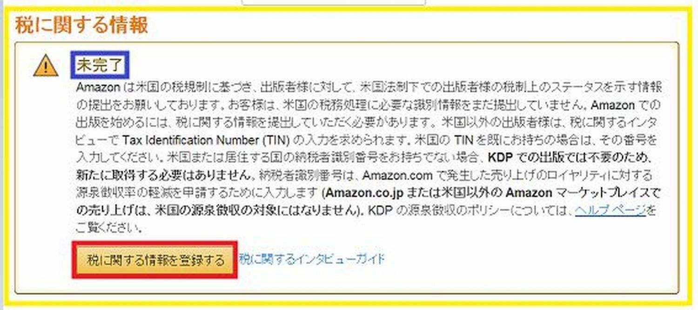
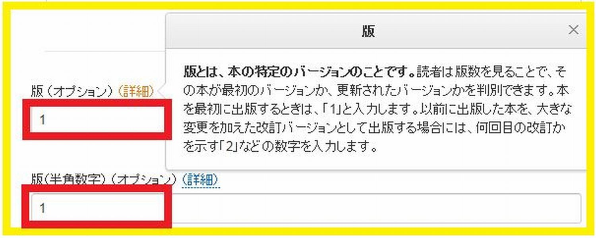
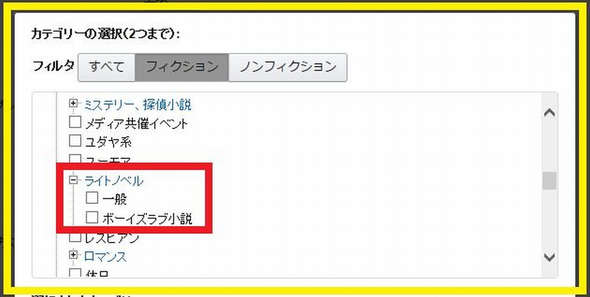
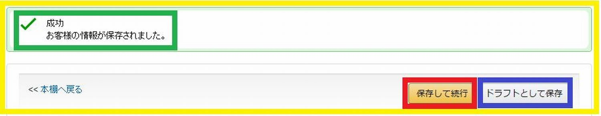
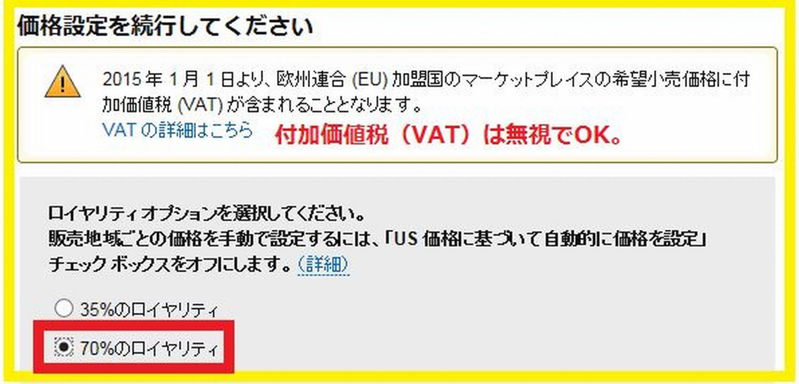
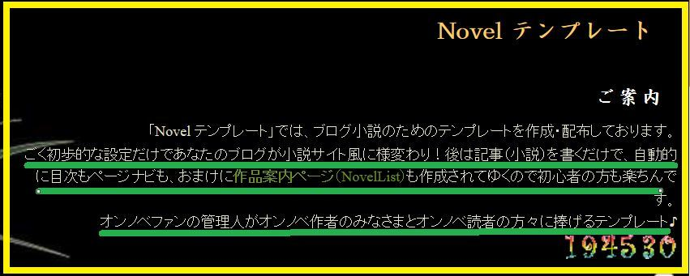
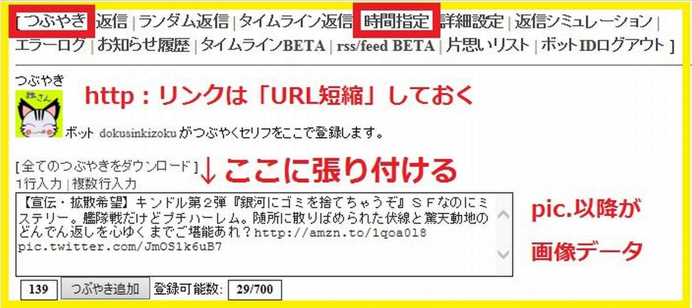
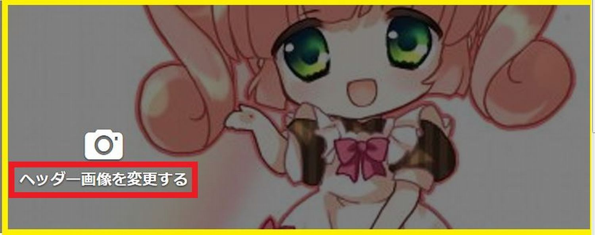
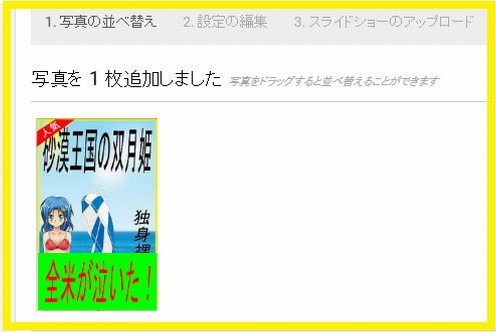

| Kindle電子出版で貴方も小説家になろうよ！: 毎月お小遣いを稼ぐテクを伝授します | |
| 独身奇族 | |
| (2015) | |
目次
第00章『はじめに』
いらっしゃいませ。どうも初めまして。私、この本の作者で 独身奇族 と申します。お気軽に 「独さん」 とお呼び下さい。さぁ、汚いところですがどうぞお上がりください。
最初に簡単な自己紹介をさせていただきますね。独さんは、趣味と実益を兼ねてライトノベルを書き続けるイイ歳こいたサラリーマンです。
以上（短っ！）
ハッ、まさかお客様？ ひょっとして......。 独さんのブログ『初めてのラノベ・オンラインノベルが誰でも書けちゃう！小説風会話式講座（初心者用）』 や『「小説家になろう』 あるいは『Amazon Kindle』 などで、すでに独さんの小説をお読みになられた特別天然記念物のような読者様では？
え、違う？ で、ですよねー。あはは、失礼いたしました。
では、この本のタイトルが 『 Kindle 電子出版で 貴方も 小説家になろうよ！』 なので、まずは独さんの実績としてKindle個人出版におけるフルラインナップをご紹介します。
ご覧のとおりの10作品。現代劇からSF、恋愛そして18禁まで、幅広いジャンルを取り揃えています。
ほとんどの小説紹介文に3千文字以上を費やした業界でも屈指の作品群（自称）。無料試し読みだけでも「おおっ！」と言って頂けると思います。
さて、そんな宣伝広告はこの辺にして本題に移ります。
まずお断りしておきますが、独さんの小説家としてのレベルは...... 低い です！
今まで何度か有名レーベルのライトノベル公募に挑戦しましたが......。今のところ、箸にも棒にもかかっていません。ワハハハハハ。
ハイ、そこの貴方。
「何を偉そうに。そんな奴のガイドブックなんて誰が読むか！」
と思われましたね？
そのとおり！ 弁解はしません。反論の余地もございません。
独さんのような底辺作家が書いたガイドブックよりも、ラノベ公募の大賞を射止めたようなプロの作家が書かれた参考書の方が良いと考えるのが普通ですよね。
しかし、現実はどうでしょう？ そんなハイレベルの作家が書いた参考書が、果たして素人作家の役に立ちますか？
いいですか？ その高尚な参考書は「そこは当たり前だろ！」みたいな上から目線で書かれた内容ですよ？ そんな本をいくらありがたく読んでも結局は身に付きませんって。
泥水をすすって書いている底辺作家の気持ちが、トントン拍子に出世した才能のある作家なんかに分かってたまるか！ ......と思いません？
そこで独さん登場！
分かりますよ。皆さんの気持ちが痛いほど。まさに同じ気持ち。
せめて公募の一次審査だけでもいいから通って欲しい。でも、また駄目だった。一次審査で落ちた事は分かっている。それなのに何度もPC画面をスクロールして自分の名前を探してしまう。ああ、激しく同意。
そんな同じ傷を舐めあう同志に送る本が、今回書き上げた 『 Kindle 電子出版で 貴方も 小説家になろうよ！』 です。
そもそも独さんには実力も実績もありません。ですから、例えば「ラノベ●●大賞を取る方法教えます」なんていうガイドブックは、天地がひっくり返っても書けません。
しかし！
その代わりといっては何ですが、実際に独さんが『Kindle』でチマチマと毎月売り上げを稼いでいる個人電子出版のノウハウだったらお任せください。いくらでもご提供できますから大船に乗った気分でいてください。
さて、話を戻します。
貴方の夢は作家デビューですか？ 独さんも同じです。
でも......。ラノベ公募で大賞を取る事だけが作家デビューへの道ではありません。作家デビューなんて、『Kindle』を使えば誰でもできるんですよホント。
現にイイ歳こいた独さんも、『Kindle』作家の仲間入りを果たしたのは、40代半ばを過ぎてからです。これガチでマジな実話。
え？ 何ですって？ 電子書籍なんて小さい？ 貴方の夢はもっと大きいと？
「いつか紙書籍作家になって、書店に自分の本を並べるのが夢」
なるほど分かります。独さんもそうですから。
誤解しないでください。何もその夢を捨てろと言っているのではありません。
むしろ逆。独さんと同じその夢をいつまでも持ち続けてください。
けれど......。そのためには強い意志が必要ですよね。夢を持ち続けるに膨大なエネルギーが必要です。モチベーションをいかにキープするか。公募の一次審査で何度落とされようとも次の公募に向かって新しく書き始める強い心。
貴方はお持ちですか？
もし、お持ちでないなら一ついい方法があるんですよ。
それが......。 『 Kindle 電子出版で 貴方も 小説家になろうよ！』 です。
【引用・参考】
このガイドブック作成にあたり下記の文献を引用・参考にさせていただきました。
表紙画像
IWAYUU 様 http://twitter.com/IWAYUU_
Muffin（マフィン）様 http://sirumeria02.blog61.fc2.com/
第01章『なぜKindleなのか？』
そもそもなぜ『Kindle』なのか？ その図式は、以下のとおり簡単です。
【 Kindle で作家デビュー】 ⇒ 【日々の売り上げにモチベが向上】 ⇒ 【公募挑戦への意欲】 ⇒ 【紙書籍作家デビュー】
『Kindle』作家になる目的は、その大きな夢を実現させるために、高いモチベーションをずっと維持し続けることにあります。
例えば有名作家になる方法としてラノベの公募で大賞を射止めることがあります。
しかし、残念ながら応募期間は受付開始から結果発表まで半年から1年の長丁場。そんな長期間、日々の学業や仕事に流されずにモチベをキープし続けることは容易ではありません。
そこで『Kindle』作家デビュー。
登録の手続きは誰にでもできます。早ければ2ヶ月で貴方もプロの作家になれます。
では、『Kindle』作家になるとどうしてモチベが維持できるのでしょうか？
それは、デビューした暁には、なんと自分の本が毎日どれだけ売れたか、24時間いつでもスマートホンで簡単に確認できるから。毎日の売り上げに一喜一憂する楽しみができるからです。
1冊でも売れれば、「ようし頑張ってもう1冊書くぞ」逆に全然売れなければ、「次こそもっと売れる本を書くぞ」
これは、日々くじけそうになる底辺作家の心を支える物凄いエネルギーになります。
たとえ僅かでも『Kindle』でお小遣いを稼ぐ事ができれば、貴方の執筆モチベーションは格段に高い位置をキープするでしょう。
これは独さんが身を持って体験している事実です。毎日毎日「おおっ！ 今日は売れた」とか「畜生、ここ一週間ゼロ行進かよ」などスマホ片手に大騒ぎの日々です。
このエネルギーこそが、面倒臭がり屋の独さんを小説の執筆に向かわせる原動力になっています。
「あー疲れた。眠い。面倒くせえ。TV見てえ。ゲームやろうっと。漫画読むか。明日から本気出す！」
こんな気持ちに流されていませんか？ 独さんはこんな誘惑と日夜戦い続けています。そんな心の戦いを継続させる戦略補給物資が 『 Kindle の売り上げ』 なのです。
『小説を書くんだ』という思いを常に意識付けできるように、この 『 Kindle 電子出版で 貴方も 小説家になろうよ！』 を読んで貴方もモチベーションの維持に努めましょう。
「いつか紙書籍の ベストセラー 作家になる」
『Kindle』デビューはそんな大きな夢の架け橋への足掛かりです。ぜひ貴方もまずは『Kindle』作家になって、ご自分の小説を世界へ発信してみましょう。
では、能書きはこれくらいにして実践に移ります。
実用書と銘打っているからには、他のガイドブックにありがちな 「総論」 とか 「概論」 等のグダグダ話はここまでにします。
もし、貴方がこんなどこの馬の骨とも分からない底辺作家の戯言に本気で耳を傾けてみようと思われたなら、独さんは他のどんな参考書よりも分かりやすく、実際に『Kindle』でお小遣いを稼いでいる具体的な方法を伝授することを約束します。
巻末にはここ2年間で独さんが売り上げた数字を月ごとの一覧表で掲載しますので他のKindle作家様も参考にしていただければと思います。
では最後に、一つお願いがあります。
他の高名な作家が書いたガイドブックと一線を画すため、この 『 Kindle 電子出版で 貴方も 小説家になろうよ！』 の表現方法は、他とは違ったオリジナリティ溢れる構成で進めます。
ひとことで言えば 『会話劇』 そう、マイブログ『初めてのラノベ・オンラインノベルが誰でも書けちゃう！ 小説風会話式講座（初心者用）』でおなじみのあの二人に今回もご登場頂きます。
【登場人物紹介】
「月影映二」
某市役所に勤めるアラサー地方公務員。だが、裏の顔は太古の昔から連綿と続く催眠術師一族の一員である。
「木下陽子」
Kカップの爆乳ボディを使って催眠術を仕掛ける女子高生。月影の愛弟子である。師匠の月影に首ったけ。爆乳を揺らしながら『ほむほむ』と頷くのが口癖。
ちなみにこの二人は、独さんの拙作 『悩める催眠術師』 シリーズで主役を務めるキャラです。
市役所に勤めるアラサー男と女子高生の絶妙な掛け合い漫才の形式で 『 Kindle 電子出版で 貴方も 小説家になろうよ！』 を進めていきますのであらかじめご了承ください。
ただし、催眠術の設定は今回のガイドブックにまったく影響しませんので悪しからず。
また、これはあくまでも参考書であり、小説ではありません。地の文章や人物描写がほとんどない点をご理解の上お読みください。
では次章より会話形式による説明を始めていきます。
【この章のチェックポイント】
【Kindleで作家デビュー】⇒ 【日々の売り上げにモチベが向上】⇒ 【公募挑戦への意欲】⇒ 【紙書籍作家デビュー】
【引用・参考】
このガイドブック作成にあたり下記の文献を引用・参考にしています。
『初めてのラノベ・オンラインノベルが誰でも書けちゃう！小説風会話式講座（初心者用）』
第02章『アカウント作成って何？』
うららかに晴れた、とある日曜日の午後。
催眠術師としての裏家業もひと段落し、久しぶりの休暇を自宅で過ごす月影が、新聞を片手にコーヒーブレイクを楽しんでいる。リビングでくつろぐそんな彼に、弟子であり扶養家族でもある女子高生催眠術師の陽子が話しかける。
「ねえねえ、お師様？ また陽子達こんな場違いな設定に駆り出されて、何だか酷くない？」
「まあそう言うな。俺達の作者もいろいろ考えて必死なんだろ」
「でも『下手な考え、休むに似たり』って言うじゃない？ どうせ無駄なのにね」
「おいおい。それじゃあこのほんガイドブックが成り立たないだろ」
「そっか。じゃあ仕方がないから進めるね」
「ああ、頼む」
「お師様、お師様！ 陽子、『Kindle』で作家デビューしたいの」
「......うーん、白々しいにも程があるな。だが、そうも言っていられないか」
「そう、そう」
「『Kindle』でデビューか。よし任せておけ。だが、その前に。お前、小説を書けるのか？」
「むぅ！ これでもちゃんと小説の書き方とか勉強しているんだからね。授業の間とかに」
「授業中は学校の勉強をしろ！」
「てへっ」
「まあいい。取りあえずお前は、短編小説を書いた事があるレベルの素人作家という設定でいくぞ」
「はーい。で、お師様は？」
「俺達の作者である独身奇族の代わりに、お前を指導する先輩小説家ってところだな」
「じゃあ、ここでもお師様なんだね」
「まあ、そうなるな」
「じゃあお師様？ 『Kindle』で作家になるためには何をすればいいの？」
「そうだな。ネット環境は整備できているという前提で言えば、まずは手始めに『Kindle』のHPを開くことだな。ちょうどいいから、このリビングにあるPCで検索してみろ。アドレスはこれだ。 https://kdp.amazon.co.jp/
「はーい。えーっとこれかな？ Kindleダイレクト・パブリッシング？」
「ああ。略して 【 KDP 】 だ。お前はまだアカウントがないから 【サインアップ】 をクリックだな」
「あ、 【 E メールアドレスまたは携帯番号を入力してください 】 だって」
「お前のメルアドを入力すればいい。さすがに携帯番号はやめておけ。 【 初めて利用します 】 にチェックを入れたら 【サインイン 】 だ」
「了解」
「次に 【 アカウントの作成に必要な情報を正しく入力してください 】 の画面が出るから下の項目を入力する」
「名前は本名じゃないと駄目？」
「ペンネームでOKだ。全部入力できたら 【アカウントの作成】 ボタンをクリック」
「ふんふん。 【 KDP の利用規約 】 が出たから 【同意する】 っと」
「あ、出た。あれ？ 【 新しい本の作成 】 ボタンがあるけどもう小説を登録できるの？」
「いやまだだ。その画面を見て見ろ。 【アカウント情報が不完全です】 ってあるだろ？」
「あ、ほんとだ」
「本を出版するにはすべての情報を入力する必要があるからな」
「すべての情報？」
「ああ、お前の本名とか住所、売上の振込先とかいろいろあるだろ」
「そっか。じゃあすぐ横にある青字の 【今すぐ更新】 をクリックね」
「よし 【会社・出版社情報】 に進むぞ。以下の欄に入力だ」
「ねえお師様、ここの氏名もペンネームでいいの？」
「いや、本名を入力だ。デフォルトでさっきの画面から自動で引っ張ってくるから修正しておけ」
「うん。国は日本、郵便番号に都道府県、市区町村と住所っと。あれ？ 住所2は？」
「マンションとかアパートの名称と部屋番号だな。『Kindle』からの書類が郵送される際の基本データだからな。郵便番号や住所、電話番号は正しく書けよ」
「うん」
「次にあるのが 【税に関する情報】 だ」

「税に関する？ 未完了ってなっているけど」
「『Kindle』はアメリカの企業だろ？ そこで収益（印税）を上げるとその所得にはアメリカの法律が適用される。なんと30％ だぞ！」
「ええええ？ そんなに取られたらせっかくの印税が手元に残らないよ」
「ただし、それは 【 Amazon.com 】 での売り上げだけの話だ」
「へにゃ？ どういう事？」
「『Kindle』は世界規模だからたくさんのマーケットプレイス（市場）がある。【Amazon.com】っていうのはアメリカ市場だ。【Amazon.co.uk】はイギリス。【Amazon.fr】はフランス。そして 【 Amazon.co.jp 】 が日本という具合にそれぞれの市場でお前の小説が配信されるんだ」
「うっは、すごいね」
「その中で30％ の税金が天引きされるのは、アメリカ市場だけってことだ」
「じゃあ日本市場の売り上げは関係なし？」
「そのとおり」
「ならいっか。日本での売り上げも怪しいのにアメリカで売れないもんね」
「ただ、独身奇族の小説の売り上げ第2位のマーケットプレイスはアメリカだけどな」
「うっそ。独身奇族の本って、海外で売れているの？」
「ああ、第1位の日本市場と比べたら微々たる売り上げだがな。アメリカ、イギリス、カナダ、フランスほかで売上実績がある。特にアメリカには 【 Kindle Unlimited 】 という恐ろしいサービスがあるからな」
「何それ？」
「アメリカ市場では月額9.99ドルを払って会員になると対象の書籍が読み放題になる」
「うっそーん」
「だからアメリカの読者は財布を気にすることなく気に入った本をホイホイDLしているらしい」
「マジで？」
「ああ。DLは回数じゃなく、読者が読んだページ数ごとに集計されるんだ。俺達の作者の本も最近は月に何回か、アメリカを含めた海外で実際にDLされているぞ」
「すっごいね」
「近い将来この【Kindle Unlimited】が日本に導入されてみろ、凄い事になるぞ。だからこそ、 『 今の内に Kindle 作家になっておく 』 ことが非常に重要なんだ」
「ふんふん」
「おっと話が逸れたな。 【 税に関する情報 】 に戻るぞ。独身奇族がコレを完了したのは2013年9月。その時はまだアメリカに書類をFAXして 『 EIN 』 という事業番号を取得するとアメリカ市場での30％ 課税が回避できたんだ」
「へぇー」
「だが、2015年10月現在そのやり方は無効になっている」
「マジで？」
「ああ。 『 EIN 』 じゃなく 『 ITIN 』 って番号に変わったらしい」
「それを取れば30％ 課税が回避できるの？」
「取れればの話だ。だが、難しい。2013年当時、 『 EIN 』 申請はFAXで良かったものが、2015年 『 ITIN 』 申請では、まずアメリカ大使館でパスポートのコピーを原本証明してもらい、さらに郵送申請しなければならない」
「うっは。何それ激ムズじゃない」
「だろ？ 結論としては、 『 アメリカ市場は捨てろ！ 』 」
「あはは。結局そうなるんだ」
「日本市場ほかアメリカ以外の各国での売り上げには影響しない。だからアメリカでの売り上げは30％ 課税された印税で我慢しろ」
「一つ聞いてもいい？ 独身奇族の売り上げはどうなの？」
「あいつは2年前、『Kindle』の登録でスタートダッシュをかけたおかげで今も 『源泉徴収率 0 ％ 』 だな」
「ずるーい」
「フッ、 『先んずれば人を制す』 だ。次はお前も遅れを取らないようにさっさと『Kindle』に登録する事だな」
「だよね」
「よし。じゃあ登録だ。と言っても 【税金に関する質問】 がいくつかあるだけで難しいわけじゃない」
「注意すべきなのは途中の名前とか住所を 『 ローマ字表記で入力 』 することぐらいだな」
「ほむほむ」
「まずは、米国の税制上、あなたは米国人ですか」
「当然、 【 いいえ 】 だね」
「ああ。保存して実行だ」
「受益者の種類は 【 個人 】 を選択。税制上の国籍または居住国は 【 日本 】 だな」
「フルネームは本名だよね。陽子だったら 【 kinoshita yoko 】 かな」
「正解」
「じゃあ次の 【仲介者として行動する代理人ですか】 って何？」
「これは、お前が作者本人なので 【 いいえ 】 を選択すれば良い」
「うん、分かった」
「 【 定住所 】 は上から順に番地から入力だ。住所も半角英数字のローマ字表記で入力。郵送先の住所は 【 定住所と同一 】 を選択する」
「やーん。住所をローマ字表記するのが面倒臭いよー」
「しょうがない奴だな。そんなお前にはこのサイトを紹介してやる。一発変換だ」
『JuDress』
http://judress.tsukuenoue.com/
「キャッホー、お師様素敵！」
「ウォホン。続けるぞ。 【米国人テスト】 は、どれにも該当しないので 【空欄】 のままチェックを入れずにスルーすればOKだ」
「ほむほむ。空欄っと」
 「次の
【
Taxpayer Identification Number
（
TIN
）】
は、
【米国の
TIN
かつ外国（米国以外）の納税者識別番号を持っていない】
を選択しておけば良い」
「次の
【
Taxpayer Identification Number
（
TIN
）】
は、
【米国の
TIN
かつ外国（米国以外）の納税者識別番号を持っていない】
を選択しておけば良い」
「じゃあ 【保存して続行】 っと」
「あ、お師様。画面が切り替わって 【源泉徴収税率】 っていうのが出たよ。あーこれだね。さっきお師様が言っていた30％ の税金っていうのは」

「ああ。この文面だと一律にすべての市場で課税されるみたいに見えるが、実際にはアメリカ市場 【 Amazon.com 】 だけだ」
「日本市場 【 Amazon.co.jp 】 には課税されないんだね。ふう、良かった」
「その下に納税者情報のフォームが画面にあるだろ？ 今入力した内容に間違いがないかどうか、下までずっとスクロールしろ」
「ほむほむ」
「もう一度自分の目で確認したら 【保存して続行】 だ」
「はーい。あれ、まだあるの？ 【電子版の 1042-S フォームに同意する】 だって」
「さっき縦に長い英語表記の納税者情報フォーム画面があっただろ？」
「うん」
「あの様式には個人情報が満載だ。だからKDP側が 『 さっき の様式を使ってもいいですか？』 と聞いているだけだ」
「なんだ。イイに決まっているじゃない。わざわざプリントアウトして郵送なんてしないし」
「じゃあ、 【私の税務情報報告書を電子的に入手する事に同意します】 にチェックだ」
「次は 【電子署名に同意する】 ね」
「これも同じだな。さっきの納税者情報のフォーム下段にサインを書くための空欄があったのを覚えているか？」
「全然！」
「......まあいい。以前だとプリントアウトした納税者情報のフォームに自筆のサインを書き入れてからアメリカまで郵送していたらしい」
「うそ！ そんなに面倒だったの？」
「ああ、今は楽になったな。さあ 【私の電子署名を提供することに同意します】 にチェックをいれておけ」
「はーい。って？ えーーーっ！ また、なんか画面が増えたよ」
「ぶーたれるな。あとちょっとだ」
「ぎょええええええ、なにコレ？ 陽子、何が何だかさっぱり分かんないよー」
「そうか？ 取りあえずもう一度すべて読んでみろ」
「ふむふむ......。うーっ。やっぱり分かんない」
「じゃあ、6つ全部の□にチェックを入れろ」
「ほむほむ」
「じゃあ次にいくぞ。今度は受益者の......」
「ちょーーーーっと待った。お師様ってば、この6項目を説明してくれないの？」
「あー。どっちみち全部の□にチェックを入れないと次に進めないからな。後で注意される」
「何よそれ。結局選択の余地ないじゃない。読み返して損したよ」
「まあそう言うな。そろそろ終わりだぞ」
「ホント？」
「 【受益者の署名】 に氏名を入力だ。さっきの納税者情報のフォーム画面で入力したとおり。ローマ字入力だから、さっき入力したスペルと間違えるなよ。これが突合していないと審査で引っ掛かるらしいからな」
「はーい」
「『日付』は自動入力される。 【Eメールアドレス】 を入力。 【地位又は資格】 は 【個人】 を選択だ。よく頑張ったな、以上だ」
「キャッホー。終わり終わりっと。 【提出ボタン】 ......いっけーーーーー！」
「オーバーな奴だな」
「あ、 【 IRS フォーム W-8 を受領しました 】 って出たよ」
「ああ。最終確認だ。画面をスクロールするとお前が今入力したサインとかが表示されているだろ？」
「あ、ほんとだ」
「なんなら記念に 【 印刷 】 ボタンでプリントアウトしておくか。それが済んだら【 インタビューを終了】 ボタンを押す」
「あ、最初の画面に戻ったよ」
「最初は 【サインアップ】 だったが、今度はパスワードを入れて 【サインイン】 してみろ」
「はーい。 【 アカウント情報を更新しますか？ 】 って出たよ」
「当然、 【 はい、アカウント情報を更新します 】 だな。下にスクロールしてみろ」
「やった。さっき 【未完了】 だった 【税に関する情報】 が 【完了】 しているよ。お師様、ありがとう！ これで陽子の小説が、Kindleで世界に配信される準備が整ったんだね」
「残念。まだ 【ロイヤリティの支払い】 が未入力だ」
「ガーン！」
「取りあえず今はこの状態で一時保存だ。画面一番右下にある 【保存】 を押しておけ」
「了解」
「次の章で 【ロイヤリティの支払い】 の説明をするからな」
「はーい」
【この章のチェックポイント】
二人の会話どおり、ひとひとつ入力していけば必ずできます。
【引用・参考】
このガイドブック作成にあたり下記の文献を引用・参考にさせていただきました。
Kindleダイレクト・パブリッシング（KDP）
アカウント登録
https://kdp.amazon.co.jp/help?topicId=A24Y8MF98F6OB6
JuDress（住所を英語表記に一発変換）
第03章『ロイヤリティの支払いって？』
「ねえお師様？ 『Kindle』の印税を受け取るのって、陽子が普段使っている地方銀行の普通口座でいいんだよね？」
「基本的にはOKだ」
「基本的には？」
「ああ。『Kindle』はアメリカ企業。海外から日本にお金を送金する際に 『リフティングチャージ（海外送金手数料）』 が発生するからな。金融機関によっては海外からの送金1件に付き数千円もぼったくる銀行があるとかないとか」
「す、数千円？ 印税がパーになっちゃうよ」
「だな。だから『リフティングチャージ（海外送金手数料）』が必要ない銀行を選ぶのがベストだ」
「そんな都合のいい銀行があるの？」
「ああ、あるぞ。 『新生銀行』 という金融機関だ。『Kindle』個人出版業界ではもう常識だぞ」
「ぷぷぷっ。そんな業界があるんだ」
「うぉほん。『新生銀行』は全国に32店舗ある普通銀行だな。いわゆる外資系の銀行でネットバンキングの振込手数料も無料化している」
「ふーん。でも口座開設って最近特に厳しいんじゃない？」
「それがそうでもない。2年前に独身奇族が口座開設した時は、HPから申請書に入力してからプリントアウト。その書類と一緒に免許証のコピーを郵送して2週間くらい後にキャッシュカードが送付されてきた」
「やっぱり面倒じゃない」
「いや、それがだな......。今ではなんと！ スマホで口座開設ができるらしい」
「うそ〜ん」
「ホントだ。詳しくは『新生銀行』のHPで確かめろ」
『新生銀行』
http://www.shinseibank.com/powerflex/cam/ao_app.html
「わお！ スマホのアプリを使うの？ 免許証はスマホのカメラで撮影して送信？ うっそ。書類の郵送も不要だって。すっごーい！」
「便利な世の中になったな。これだと最短1週間で口座開設できるらしい」
「陽子さっそくスマホでやってみるね」
「ああ。ただ注意点がひとつ。『新生銀行』は通帳が発行されない。手元に来るのはキャッシュカードだけだ」
「別にいいよ、通帳なんて。いつでもネットで残高確認とかできるんでしょ？」
「まあな。セブンイレブン・ファミマ・ローソンのATMが使えるのも便利だしな」
「やったね」
「と言う訳で結論といくぞ。『Kindle』個人作家が 【 ロイヤリティの支払い 】 で選択すべき金融機関は......」
「アハ、『新生銀行』の一択だね！」
「......と言われていたのは、実は 『 2014 年までの話 』 なんだ」
「えええええええええええええ？ なになに？ どういう事？ 今までのフリは？」
「まあ、落ち着け。世界情勢は刻一刻と変化している。『Kindle』もまたしかり。まだ不確定な情報だがな......」
「ほむほむ」
「ネットで調べたところ、どうやら今問題にしている 『リフティングチャージ（海外送金手数料）』 は、すべての銀行で発生していないんじゃないかという話なんだ」
「どういうこと？」
「つまりだな。『Kindle』にはいろんなマーケットプレイスがあるって話をしただろ？」
「うんうん。【Amazon.com】がアメリカ市場で【Amazon.co.jp】が日本だよね」
「ああ。『Kindle』はアメリカ企業。だから以前はすべての市場で得られた印税を【Amazon.com】から世界各国の個人作家の口座に振り込んでいたらしい。......確信はないがな」
「ふんふん」
「だが、現在は世界の各市場から直接その国の個人作家の口座に振り込むようになったらしい。悪いがこれも想像の域を超えない話だがな」
「えーっと。真実かどうかはさておき、つまりアメリカの【Amazon.com】からじゃなくて日本の【Amazon.co.jp】から振り込まれるってこと？」
「そうだ。【Amazon.co.jp】はどこにある？」
「どこってそれは日本......。あっ！ そっか。『リフティングチャージ』って海外送金手数料だったよね？ 日本から日本へ送金しても『リフティングチャージ』は発生しないんだ」
「理屈ではそうなるな。だからインターネットの書き込みを調べてみると『新生銀行以外の金融機関でもKindleの印税で『リフティングチャージ』を取られていません』というのがチラホラあるくらいだ」
「あ、ひょっとして......。この章の最初に『陽子が普段使っている地方銀行の普通口座でいいんでしょ？』ってお師様に聞いた時、『基本的にはOKだ』って答えたのはコレなのね」
「まあな。正直なところネットで『Kindle電子書籍出版』と検索しても古い情報と最新の情報が錯綜していて何をどうしたらいいのか分からない状況だ」
「ああ、そう言えばどこかのブログで見たよ。今でもアメリカにFAXを送って無駄に使えない『EIN』という事業番号を取得する個人作家が今でも後を絶たないって」
「そのとおり。ぶっちゃけた話、ネットで『Kindle』の電子出版のやりかたについて検索したら、最初にその書き込み年月日がいつなのかを調べろ」
「書き込み年月日？」
「ああ、それが 『 2015 年より前の書き込みだったら 、 もう見なくていい 』 いいか、よく聞けよ。2015年以降に書かれた、最新の情報を探した方が間違いない」
「そうなんだ」
「じゃあ話を戻して結論を言うぞ」
「うん、お願い」
「2014年までは『Kindle』で 【 ロイヤリティの支払い 】 と言えば、それはもう 『新生銀行』 の一択だった。現に独身奇族も 『新生銀行』 だが、今まで一度も 『リフティングチャージ』 を取られたことがない」
「ほむほむ」
「しかし、2015年においてはその絶対情報にもカビが生え始めた。『Kindle』からの印税は日本の金融機関ならどこでも『リフティングチャージ』が発生しない......らしい」
「あははは。......らしいで終わっているよ」
「しょうがない。まだ断言できるほどの確証がないんだ」
「結局、陽子は振込先の口座をどうしたらいいの？」
「まずはお前が今使っている金融機関の本店に電話してみろ。『Kindleからの印税振込があった場合、『リフティングチャージ』が発生しますか？』ってな。それが一番の近道だ」
「あ、そっか」
「発生しないと言われればその使い慣れた銀行口座を『Kindle』に登録すればいい」
「じゃあお師様、もし銀行が 『ケースバイケースですね』 とか言葉を濁してきたら？」
「その時はスパッと割り切って、従来からの伝家の宝刀『新生銀行』を抜けばいい」
「うふ。簡単にスマホで口座開設できるようになったしね」
「首尾良く口座が決まれば後は入力だ。『Kindle』の画面の指示どおりにすればいい。じゃあ始めるぞ。 【銀行口座を登録する】 をクリックだ」
「まだ口座が決まっていない場合、ここはスルーして後から登録でもいいよね」
「そうだな。だが、とりあえず入力説明を先にしておくぞ」
「はーい」
「口座名義は 半角のカタカナ で入力。 小文字のカタカナは大文字で入力 だ」
「ほむほむ。例えば名字が服部だったら、「ハットリ」じゃなく「ハツトリ」とかみたいに「ッ」を大文字で書くんだね」
「そういうことだ」
「支店コードはキャッシュカードに印字されているぞ」
「了解っと。次は？」
「 【 Amazon サイト】 の入力だ」
「これって、前にお師様が言っていたマーケットプレイス（市場）だね」
「ああ。手始めに一番上の 【 Amazon.com 】 から始めるぞ」
「うん。アメリカ市場だね」
「右端に 【＋ボタン】 があるからクリックだ」
「あ、小画面が出た。えーっと何々、 【ロイヤリティの支払い方法】 って？」
「ロイヤリティ、つまり印税の支払方法には【小切手】【電子資金振替】【電子送金】の3種類がある。だが、ここは 【電子資金振替】 の一択だ」
「はーい。対象通貨は当然 【 JPY 】 の日本円だよね」
「ああ、そうだ。あとはすべてのマーケットプレイスを開いて同様に入力していくだけだ」
「あれ？ お師様。 【 Amazon.br 】 ってブラジルだよね？ 【 JPY 】 がないけど？」
「ブラジルは日本円が設定できない仕様だから 【小切手】 を選んでおけ。通貨は 【 USD （ ＄ ）】 が自動入力される。まあ、心配するな。ブラジルでお前の小説が売れる事はまずない」
「むぅー。じゃあ、独身奇族は今までブラジルで売り上げた事あるの？」
「この2年間で一度だけな。だが、印税が数百円だとたぶん小切手の支払い最低限額に達しない。だから売れていないのと同じだな」
「あはは」
「取りあえずここまで入力が完了したら、画面右下の 【保存ボタン】 をクリックだ。入力ミスがあればその都度訂正箇所が赤字で表示されるから保存できるまでやり直す」
「さてと......。今使っている銀行に電話するのも面倒だから、スマホで新生銀行の口座開設をしようーっと」
「まあ、ハードルも下がった事だし。その方がいいかもな」
「だよね。中途半端に手持ちの銀行口座を入力しちゃうと後で絶対に後悔すると思うんだ。まさに 『慌てる何とかはもらい手が少ない』 ってことだね」
「お前......。それだと 『嫁のもらい手』 が少ないみたいに聞こえるぞ。少ないのは 『もらい手』 じゃなくて 『もらい』 だろ？ まあ、お前みたいなドジっ娘は、嫁のもらい手も少ないだろうがな」
「むっきー！ じゃあ、お師様が責任取ってもらってくれればいいじゃない！ ぷんぷん」
「さーて、次回は実際の小説投稿についてだ。今日はこの辺で......」
「あー、お師様ったら無視する気？ 陽子の目を見て返事してよ」
「じゃあなー」
「アー、逃げた。待てーーーー」
【この章のチェックポイント】
二人の会話どおり、ひとひとつ入力していけば必ずできます。
【引用・参考】
このガイドブック作成にあたり下記の文献を引用・参考にさせていただきました。
Kindleダイレクト・パブリッシング（KDP）
アカウント登録
https://kdp.amazon.co.jp/help?topicId=A24Y8MF98F6OB6
新生銀行HP
第04章『タイトルとペンネーム？』
「えーっと、お師様。陽子、【新生銀行】で口座開設の返事待ちなんだけど？」
「じゃあ、その間にできることを先に済ませておくか」
「ルンルンルーン。ようやく陽子の小説を登録する日が来たんだね」
「甘い！」
「えひっ？」
「いきなりお前の素人小説を登録できる訳がないだろ？」
「ううっ。そりゃそうだけど......」
「いいか？ 『Kindle』で公開するってことは、読者から金を取るプロになるってことだ。お前の小説を自分のブログで公開したり「小説家になろう」とかに投稿したりするのとは、訳が違うことを頭に叩き込んでおけ」
「ハイッ！」
「と言うわけで手始めに 『タイトル』 の付け方だ」
「わお！ 何だか本格的なガイドブックの様相を テイスト してきたね」
「それを言うなら様相を呈してきただろ」
「あはは。でも小説のタイトルって雰囲気で適当に付ければイイんじゃないの？」
「おいおい！ ブログや「小説家になろう」にアップするのとは訳が違うって言ったばかりだろ？」
「あ、そっか」
「この 『 Kindle 電子出版で小説家になろうよ！』 のキャッチフレーズは何だ？」
「えーっと 『毎月お小遣いを稼ぐテクを伝授します』 だよね」
「そのとおり。つまりは売れてナンボの世界だ。そのためには、タイトルを雰囲気で適当に付けるなんて論外だ」
「た、確かに。でも、最近のラノベって、タイトルがやたらと長いよね」
「ああ、『このタイトルって、もうほとんどあらすじだろ？』って言うのばっかりだな」
「だよね。あれ？ でも、そう言えば確か......独身奇族も長ったらしいタイトルの小説を『小説家になろう』のサイトで公開していたような気がするんだけど......？」
『シミュレーションRPG狂騒曲サラリーマンが剣士で王子様？』
http://ncode.syosetu.com/n6096bf/
「わははは。気のせいだ。そんなことよりタイトルだ。昔はラノベのタイトルもそれほど長くはなかった。だが、それも今は昔。書店で本棚に並んでいるラノベは、右を向いても左を向いても超長いタイトルばかりだ」
「どうしてそうなっちゃったの？」
「若い読者に与えるインパクトの大きさだな。読者が小説で最初に目にするのはあらすじでも本文でもなくタイトルだ。そこにターゲットを定め、いかに読者の興味を引くかに特化したってことだ」
「そっか。あらすじや本文の前に、まずタイトルで読者を釣ろうって作戦だね」
「そのとおり」
「じゃあ陽子の小説にタイトルを付ける時、どんな点に注意すればいいの？」
「そうだな。基本的にお前の小説は、『Kindle』市場で商業誌を向こうに回して戦わなければならない。そのためには読者の興味を引くためのいろんなテクニックを使わないと勝負にならない」
「例えば？」
「そうだな、こんな方法がある。流行している物の名前と小説のジャンルがすぐ読者に分かる単語を混ぜ合わせてタイトルを作るんだ。この2つをいかにうまく組み合わせるかがポイントになる」
「やーん。分かりづらいよ。もっとハードル下げてー」
「そうだな。一例を挙げると流行している物の名前ですぐに思いつくのが 【スマホ】 」
「ほむほむ」
「そして小説のジャンルは 【異世界】 とか」
「つまり【スマホ】と【異世界】と言う二つの単語を使ってタイトルを作るってこと？」
「そうだ」
「なんだ。お師様、それって『小説家になろう』だったかな？ 読んだ事がある気がするよ。もう使い古されているんじゃない？ ハッキリ言って二番煎じどころか百番煎じだよ」
「そう思うか？ 組み合わせがポイントって言っただろ？ 例えば、こんなタイトルはどうだ......」
『アイツと俺。二人一緒に異世界へ来たのにスマホを持ってない俺の方が活躍する件について』
「キャハハハ、何その中二病が炸裂したようなタイトル。おっかしー」
「いかにも『小説家になろう』に投稿される小説っぽいタイトルだろ？」
「うんうん」
「だが、馬鹿にするのは早いぞ。このふざけた小説の題名には、 『恐ろしい戦略』 が隠されているんだからな」
「え？ マジで？」
「ああ。このタイトルだけで読者はいろんな想像を掻き立てられるんだ」
「どこが？」
「まず登場人物は、要領の悪い主人公とライバルの存在だ」
「ああ、それは 『アイツと俺。二人一緒に』 ってところですぐに分かるよね」
「次にジャンルは 【異世界】 」
「文字どおりだね」
「さらに日本人の半数以上が所持する 【スマホ】 が重要アイテム」
「ふんふん」
「ここからが一番大事だからよく聞けよ」
「ほむほむ」
「いいか。普通、【異世界】で主人公を活躍させるには重要アイテムの【スマホ】が必要だろ？」
「うん、誰でもそう考えるよね」
「しかし、この主人公は【異世界】に召喚された時に大事な【スマホ】を机の上に置きっ放しにして来た訳だ」
「あっちゃー。よくある話だけど、ドジだね」
「それに対してイケメンなライバルは、最新の【スマホ】をちゃんと腰の携帯フォルダーに入れて【異世界】へ持って来たのさ」
「主人公と違って優秀ね。......でも、どうして【スマホ】を持っていない主人公が、【異世界】でライバルよりも活躍できるの？」
「よし、キタァァァァァァァァ！ まさにそれだ！」
「え？ え？ 何が？」
「今、お前 『何故なんだろう？』 って思っただろう？」
「うん、それがどうしたの？」
「さっき俺が言った『恐ろしい戦略』って言うのは、タイトルだけで読者に『何故なんだろう？』と思わせるところにある」
「あっ！」
「いいか、読者にとって 【疑問】＝【興味】 なんだ。いかにタイトルだけで読者の興味を釣り上げるか。それは言い換えれば、いかにタイトルだけで読者に【疑問】を抱かせるかということさ」
「うーん。タイトルって深いんだね......」
「そりゃそうだろ。ところで、お前の小説。タイトルは何だった？」
「え？ 『砂漠王国の双月姫』 っていうんだけど？」
「そのタイトル......浅いな。説明だけに終わってないか？ 読者に疑問を抱かせる、つまり興味を釣り上げるタイトルと言えるか？」
「ガーン！ ......確かに」
「まあ仕方がないな。女の子が書いた小説は、特に綺麗なだけの単語でタイトルをつける傾向があるからな。だが、『Kindle』の電子書籍にはあまりお奨めできないぞ」
「どうして？」
「書店にある紙の本と違って『Kindle』は電子書籍だ。スマホやPCの画面は紙の本に比べてどうしても小さい。タイトルに 『インパクト』 がないと中身の本文を読んでもらう前に表紙で勝負がついてしまうんだ」
「あー、そっか」
「『Kindle』電子書籍は、まず何よりも表紙が命」
「メモメモ」
「その表紙の書かれたタイトルは、ぶっちゃけた話 『おいおい、なんだそりゃ？』 というタイトルでも良いんだ」
「マジで？」
「ああ、読者に『何故なんだろう？』と思わせる工夫を凝らすことが大事だからな」
「うっは。難しいね」
「そりゃそうだ。『Kindle』はタイトルだけで売り上げを左右するって言うからな。手を抜くなよ」
「はーい」
「じゃあ、タイトルの次はペンネームだ。お前はどうするんだ？ ペンネームの候補とか考えてあるのか？」
「そうだね。うーん......『独身奇俗』とか『独身裸族』とか？」
「馬鹿野郎、死んでも使うな！」
「あはは、だよね。でも、ペンネームって、そもそもどうやって決めればいいの？」
「グハッ。そこからかよ！」
「よろしく！」
「まあ、あんまり中二病臭いペンネームは避けた方がいいだろうな。その時の流行語をもじった名前も一年経ったら誰も分からないから止めた方がいい」
「そうだね」
「あとは外国語のペンネームは避けた方がいい。読み方や意味が分からないだけで読者はストレスを感じるからな。だから長過ぎたりするのもアウト」
「ほむほむ」
「無難に3文字から5文字程度かな。奇をてらわずに親しみやすい名前がいいぞ」
「そうなんだ。じゃあ文字数はともかく『独身奇族』なんて駄目駄目じゃない」
「そのとおり。正直なところアイツも後悔しているらしい」
「じゃあどうして使い続けているの？」
「オンラインゲームのハンドルネームから使い始めて10年以上だからな。愛着もあるんだろう。だが、一番の理由は社会的認知の高さだろうな」
「社会的認知って『独身奇族』ってそんなに有名なの？」
「まったく無名だな。ただ、ブログとかも長くやっているから多少は認知度がある。今更新しいペンネームを使うとその数少ない認知度すら活かせない。だから背に腹は変えられないんだとさ」
「なるほどそういう訳ね。うーん、陽子のペンネームはどうしようっかな。あっ、そうだ。こんなのはどう？ 『港の陽子、横浜・横須賀〜』 キャハ、可愛い！」
「お前なあ。俺の話を聞いていなかっただろ！ 大体、お前は何歳なんだ？ 女子高生の設定なんだぞ。そんな昭和初期のギャグなんか誰も分からないって」
「やーん。お師様、怒っちゃ駄目ー」
【この章のチェックポイント】
タイトルは、流行している物の名前と小説のジャンルが連想できる単語をいかにうまく組み合わせるかがポイントになる。
タイトルだけで読者に『何故なんだろう？』と思わせる工夫が大事。
ペンネームに凝り過ぎるとタイトルがボケる。ペンネームは無難なものにするのが無難。
第05章『紹介文ってどう書けばイイの？』
「ねえ、お師様。タイトル、ペンネームの説明が終わったね」
「まあな」
「キャッホー。ついに陽子の小説が、華々しく『Kindle』社交界でデビューする時が来たんだ」
「舞い上がっているところを済まないが、まだまだやる事は山のようにあるぞ」
「えー？ まだ何かあるの？」
「次は 『紹介文』 の作成だ」
「紹介文......って『あらすじ』の事？」
「ああ、そうだ」
「でもあれって、確か数行程度の簡単な文面じゃない？」
「はい、アウト！」
「え？」
「え？ じゃない。いいか？ この紹介文の良し悪しで売り上げが左右すると思え」
「そんなに大事なの？」
「当然だ。陽子、前章で説明したタイトルに釣られた読者が次に取る行動は何だと思う？」
「え？ あ、そっか。『Kindle』の画面をスクロールして『紹介文』を見るね」
「そう言う事。だから釣った魚には美味しい餌を与えないとDLしてくれる前に逃げてしまう」
「エサって？ それが紹介文なの？」
「ああ、この餌でどれだけ読者の購買意欲を沸かせるかがキーポイントなんだ」
「でもでも、有名レーベルのネット小説でも紹介文なんてせいぜい数行程度でしょ？ あんまり大した内容も書いてない気がするんだけど？」
「それは名のある出版社だからできることだ。そういったネット小説は、書店で平積みされている紙媒体の本が、新たに電子書籍として配信されているものだ。だから読者は、その内容が頭にあらかじめインプットされている」
「そっか。テレビやラジオ、雑誌なんかでガンガン宣伝しているもんね」
「逆に言えば、素人作家が有名レーベルのネット小説に宣伝で対抗できるとすれば、この『紹介文』を置いて他にはない」
「ほむほむ」
「有名レーベルが紹介文で手を抜いているならそこに付け込む。宣伝広告費に金をかけられない個人作家はここで挽回するしかないんだ」
「ほむほむ。で？ 具体的にはどうするの？」
「陽子、『Kindle』の『紹介文』に使用できる制限文字数の上限を知っているか？」
「えーっと確か......。4,000文字だったかな？」
「そうだな。公式ではそうなっているが、実際は3,500文字程度で足切りされるみたいだ」
「じゃあその紹介文をいっぱい書けばいいんだね。えーっと500文字くらい？」
「甘い、3,500文字を目一杯使って宣伝しろ！」
「うそん！」
「嘘じゃない」
「あーーー！ そっか。そう言えば、陽子とお師様が出演している 『悩める催眠術師』 シリーズの紹介文もやたらと長いよね」
「独身奇族の紹介文は、『Kindle』個人出版業界で一番長いからな」
「うそん？」
「もちろん......嘘だ」
「もう、お師様ってば！ でもでも、具体的に紹介文ってどう書くの？」
「さあ、分からんな」
「ちょ、ちょーーー」
「いや、紹介文の書き方に正解なんてないからな。ただ、ここで言えるのは、独身奇族がどうやって紹介文の欄に3,500文字を埋め込んでいるかの説明だけだ」
「それそれ、それが聞きたいんだって」
「そうか。じゃあ独身貴族がやっている紹介文のチェックポイントは以下のとおりだ」
1．ヒロインを登場させて読者に語りかける構成にすること。
2．小説が面白い、読みやすいと思わせる点をアピールすること。
3．他者の小説との比較をアピールすること。
4．章のタイトル、総ページ数を明記すること。
5．本文の一部抜粋を載せること。
「とまあ、思いつくのはこんなところだな」
「ハイハーイ、陽子の質問ターイム。読者に語りかける構成って？」
「あのなあ。『悩める催眠術師』シリーズの紹介文でお前がやっていることだろ？」
「あ、アレね。えーと確かこんな感じだったかな......」
『悩める催眠術師の紹介文より一部抜粋』
きゃっほー！ いらっしゃいませー。ようこそ【悩める催眠術師】の物語へ。
ホラホラ、汚い処だけど遠慮せずに入って、入って。あん、靴は脱がなくてもいいんだよ。えーっと、お客様はココ初めて？ それとも【初めてのラノベ・オンラ インノベルが誰でも書けちゃう！ 小説風会話式講座（初心者用）】を知っている読者様かな？
私は本編のヒロイン、花も恥らう女子高生の木下陽子だよ。よろしくね。
え？ 今時の女子高生は、花も恥らうなんて言わないって？ うっそ？ マジで？ ガーン。はぁー、がっくし。きっとお師様の口癖の影響ね。お師様ってそろそろイイ歳だから、言い回しなんかも微妙に古臭いのよねー。
「あはは。おっかしー。陽子ってば、全然本文に関係ないことを喋っているよ」
「読者に語りかけるっていうのはこういうことだ。ぶっちゃけDLしてもらうにはどれだけアピールできるかに掛かっているからな。他の作家と同じ事をしていたら駄目だ」
「ああ、確かに。こんな紹介文は他にないよね」
「だろ？」
「じゃあ、他者の小説との比較って言うのは？」
「比較は物を売る時の基本だろ。例えばこの本だってそうだ。たくさんあるガイドブックの中からDLしてもらうために、『Kindle』の登録方法から手数料対策、表紙の作り方、紹介文の書き方、小説の書き方に至るまで多岐に渡る内容を売りにしている。ここまで細かく書き込んでいる本はないぞ」
「そう言えば陽子、本屋さんで小説を買う時によく迷うんだよね。こっちの本にしようかあっちの本にしようか。そんな時はやっぱり表紙とかあらすじを比較しちゃうもん」
「そういうことだ」
「あとは章のタイトルや総ページ数か。これは他作品の紹介文でもよく見かけるね。でも、最後のチェックポイントで本文の一部抜粋って言うのは？」
「文字どおり本文の美味しい場面を適当にピックアップして、紹介文に載せちまうことだ」
「えー、それっていいの？ 『Kindle』の仕様だと冒頭から何ページかまで 『無料試し読み』 できるじゃない」
「甘い！ さっき 『紹介文で有名レーベルのネット小説に 宣伝で 対抗する』 って言ったばかりだろ？」
「そ、そうだけど」
「紹介文3,500文字の内、最低でも1,500文字くらいは本文をコピペしてここに貼り付けちまえ」
「えー、何だかもったいない気がするんだけど」
「あのなあ。正直に言うぞ。個人出版の本は、お前が妄想しているDL数の100分の1も売れない」
「ヒクッ。陽子、そんなに甘い希望なんか持ってないよ。い、1日に1件か2件DLしてもらえるだけでいいかなーって思っているくらいなんだから」
「お前......。そんな甘い夢を描いているとすぐに心が折れるぞ？」
「ヒクッ？ そ、そんなに売れないの？」
「売れない。売れないからこそ、こんな馬鹿みたいに細かいコトを一つ一つ積み重ねているんだ。小説書きました。公開しました。すごーいこんなに売れました。......そんな事は死んでも起こらないから。いや、むしろ死ね！」
「びぇぇぇぇん、お師様がいじめるぅぅぅぅ」
「ああ、悪い悪い。まあ現実の厳しさを弟子のお前には、先に知っておいて欲しいのさ」
「うん」
「と言うわけで、読者にアピールするためには『無料試し読み』なんか当てにするなってことが言いたいんだ」
「ほむほむ」
「だってそうだろ？ 『無料試し読み』するには、『Kindle』のシステム上、いったん 『今すぐ無料サンプルを送信』 しないといけない」
「ああ、ちょっと面倒だね」
「だろ？ もし『無料試し読み』してくれるようなありがたい読者様なら、それは放っておいてもいいんだ」
「ほむほむ」
「それよりも『無料試し読み』まではしてくれない読者をどうやって口説き落とすかが問題だ」
「く、口説き落とす......」
「そのためには、紹介文でこっちの手の内を晒してしまうに限る」
「あ、そっか。紹介文ならPCのマウスをスクロールさせるだけ。『無料試し読み』よりずっと簡単だね」
「ああ、人間は面倒くさい事を避ける生き物だからな。だからそんな読者の手間を省くために、最初から紹介文の中にもっと美味しい別の『無料試し読み』という餌を放り込んでおけばいい」
「なるほど」
「この方法だと手軽に読者は作品の内容や世界観が味わえる。おまけに作者の力量も図ることもできるからな。読者としては一石二鳥にも三鳥にもなるからありがたい筈だ」
「でも、作家としては紹介文から文章力や表現力が判断されるから手を抜けないって訳ね」
「ああ。どうせなら本文の中でもノリノリな場面をチョイスしたいな」
「うんうん」
「釣りに例えるなら、まずタイトルで読者を釣り場に引き寄せる。次に紹介文に一部抜粋した本文を載せて餌を撒く。そして『Kindle』の冒頭『無料試し読み』でリールを撒いて、最後にDLで吊り上げるってところだな」
「じゃあ餌になる本文の一部抜粋は、やっぱり新鮮じゃなきゃダメだね」
「まあな。要するに宣伝広告だ。間違ってもセコイとか面倒くさいなんて考えるな。個人出版の電子小説は売れない。コレが現実だ。この本のタイトルどおり、『Kindle』で小遣いを稼ぎたかったら最低限これくらいのことはやらないとな」
「そうなんだ」
「なんだ他人事みたいに。......お前、テレビのCMって毎日見ているだろ？」
「うん」
「あの15秒から30秒くらいのCMにいったいどれくらいの金と人員をかけているか知っているか？」
「さあ？ ぱーっと流し見するだけだからあんまり考えたことないけど、やっぱりすごいんだろうね」
「ああ、数百万から億単位だ。だからそれこそ朝から晩までCMに人生を掛けている人なんてゴロゴロいるぞ。それだけ宣伝広告って言うのは大事だってことの裏返しだな」
「ほむほむ。陽子の本も最初からどうせ売れないって気持ちでいれば、 『紹介文に本文を一部抜粋して入れたらもったいない』 なんて考えないもんね」
「ああ。さらに一歩進んで、お前の小説を読んでもらうための先行投資だ。大盤振る舞いするくらいの気持ちで餌を撒け」
「はーい」
「ただし、ネタバレに繋がるような伏線が引いてある場面だけは避けるんだぞ」
「あはっ、そうだね」
【この章のチェックポイント】
紹介文の注意点
1．ヒロインを登場させて読者に語りかける構成にすること。
2．小説が面白い、読みやすいと思わせる点をアピールすること。
3．他者の小説との比較をアピールすること。
4．章のタイトル、総ページ数を明記すること。
5．本文の一部抜粋を載せること。
文字数制限（約3,500文字）を目一杯使って読者を口説き落とすことが大事。
第06章『小説の本文ってどう書くの？』
「お師様。小説の本文ってどう書けばいいの？」
「お、お前なあ。ここまできて、今さらそれを聞くか？」
「だってこのガイドブックのキャッチフレーズは 『毎月お小遣いを稼ぐテクを伝授します』 でしょ？ だったら一番大事な小説の書き方も教えてよ」
「グハッ！ お前このガイドブックの値段を見て言っているんだろうな」
「でも、他にもっと安いガイドブックもあるじゃない」
「おいおい、今まで何を読んできたんだ？ そんな安い値段でここまで細かく説明している本があるか？ 商業誌なら『Kindle』に登録するだけのガイドブックが、普通1,500円以上もするんだぞ」
「うちは個人出版だもんねー」
「このガイドブックにどれだけ情報を詰め込ませるつもりなんだ？」
「きゃーん。許してー」
「ちっ。仕方がない。小説の書き方について細かい内容は、手前味噌だが独身奇族のブログを参照してもらう」
『初めてのラノベ・オンラインノベルが誰でも書けちゃう！小説風会話式講座（初心者用）』
http://dokusinkizokudesu.blog27.fc2.com/
「あは、宣伝宣伝。お師様と陽子の会話形式で小説の書き方を紹介しているよね。しかも太っ腹の無料で、 絶賛後悔中！ 」
「確かに後悔はしているが、公開中だな」
「あっちゃー」
「詳細はブログを参照してもらうとして、ここでは『Kindle』で個人出版をする場合、特に注意するべき点について簡単に説明するにとどめるぞ」
「お願いしまーす」
「大前提として小説は縦書きが基本だ」
「でも、ネット小説ってだいたい横書きじゃないの？ ほら、『小説家になろう』とか」
「あのなあ。じゃあ、お前が本屋で買った小説の中で横書きの本ってあるのか？」
「あー確かに。芸能人が書いた自叙伝とかは横書きばっかりだけど、ラノベを含めて小説は全部縦書きだね」
「だろ？ だから『Kindle』で小説を出すつもりなら 縦書き以外の 選択肢 はない 」
「ほーい。でもでも、原稿を書く時は横書きでいいんだよね？」
「もちろんだ。独身奇族もワードの横書きで原稿を書いている。それを後の章で紹介するソフトで縦書きに変換すればいいだけだ」
「ほっ、良かった」
「次に小説の文字数だが、少なくとも1冊あたり 3 万文字以上 は欲しいな」
「結構多いね」
「いや、むしろ少ないくらいだ。これも後で出てくるが、1冊あたりの単価を250円以上に設定する必要がある。だからもし、お前の小説が1万文字くらいしかなくて、250円以上の設定だと読者からクレームがガンガン来るから注意しろ」
「そっか」
「ところで......」
「何？」
「......言うまでもないと思うが」
「どうしたの？」
「今さらだが、あえて言う。文頭1文字下げとか、3点リーダーを使うとか、 『 小説の作法 』 は常識だぞ。誤字脱字は論外だし、ページ数を稼ぐ空改行なんてもっての外だからな」
「あー。お師様ったら陽子がそんな作家の基本を守らないとでも思っているの？ お金をもらってDLしてもらうんだから、それは当然じゃない！」
「悪い、悪い。最近はラノベだったら何でもありみたいな風潮だからな」
「だよねー」
「まあ、小説の作法について細かい事は独身奇族のブログでもう一度確認しておいてくれ」
「了解」
「それはともかく、小説を書く上で一番大事なのは『Kindle』にアップする前に......」
「アップする前に？」
「1に推敲、2に推敲。3、4が推敲。5に推敲だ」
「うっは。推敲ばっかり」
「お前、まさかとは思うが......。推敲って言う漢字。読めないとか意味を知らないとか言わないだろうな？」
「ギ、ギクッ」
「口に出して読んでみろ」
「ば、馬鹿にしないでよ。お師様、陽子はコレでも作家を目指しているんだよ。推敲の一つや二つ知らないハズないじゃない」
「いいから平仮名で書いてみろ」
「えーっと。すいこ......う？」
「何だ、そのおっかなびっくりな態度は。まあいい。とにかく何度も読み返してみることが大切だ」
「はーい」
「独身奇族もそうだが、特に初心者作家はセリフを主体にして小説を書こうとする傾向があるからな」
「うんうん」
「情景描写や心理描写といった地の文章で常にキャラクターのセリフを補完するように心がけることも重要だ」
「了解！」
【この章のチェックポイント】
小説は縦書きが大前提。ただし、執筆はワード横書きで十分。（後で縦書き変換すればいい）
ワードの設定は、文字数×行数を35文字×40行にしておく。これは書店に並んでいるラノベの一般的な書式設定なので、書き上げた時の総ページ数が把握しやすい。
ちなみに40行は見開きの2ページ分に相当する（お手持ちのラノベ参照）例えばA4サイズで50枚執筆したら、文庫版にすれば100ページの枚数になる。
文字数は1冊あたり3万文字以上が望ましい。
小説の作法を遵守。
1に推敲、2に推敲。3、4が推敲。5に推敲。
第07章『表紙ってどう作るの？』
「ねえ、お師様？ 推敲した小説をブログにアップしたり『小説家になろう』なんかに投稿したりする時に『表紙』は要らないよね？」
「ああ、そうだな」
「でも、『Kindle』で公開する時は、陽子の小説にも『表紙』が要るんじゃないの？」
「正解。『表紙』は必需だな。『Kindle』では『表紙』がないと公開されない。まさに小説の顔だ」
「ねえ、ねえ。お師様〜。教えて〜」
「何だ？ 猫撫で声ですり寄って来るな」
「あのね〜。ん〜っとね。『Kindle』で公開する時に必要な 『表紙』ってワードで作れる？ 」
「無理だ！」
「え〜、お師様の意地悪！ 陽子がワードしかできないこと知ってるくせに......」
「あのなあ。ひょっとするとワードで出来るかもしれないが、少なくとも独身奇族には無理だ。だから俺も説明できない」
「じゃあ、どうやって『表紙』を作るの？ ねえ、ねえ、ねえ......」
「い、今から説明してやるから。そんなにくっつくな」
「アハッ」
「えーっと、いいか？ 表紙の良し悪しだけで小説の売り上げが天と地ほども違うんだ」
「うっそ？」
「当たり前だろ？ お前『Kindle』で小説を探した時、PC画面だけで小説の内容の良し悪しが分かるか？」
「うーん。せめて『タイトル』とか『あらすじ』がないと難しいよね」
「だろ？ と言う事は、読者の購買意欲を刺激する初めの一歩は、やっぱり表紙なんだ」
「確かに。でも......。そもそも表紙はどうやって作ればいいの？」
「そんなの簡単だ。表紙作成用、いわゆるデジ絵のお絵かきソフトを使ってちょちょちょーいだ」
「ちょーーー！ 陽子はイラストなんて書いたこともないんだから。この本の読者さんだって皆がイラスト経験者って訳じゃないし。ちゃーんと、最初から説明してよねっ！」
「じゃあ最初から説明してやるよ」
「ふんふん」
「まず......。お前さっき『イラストなんて 書いた こともない』って言ったが、正しくは『イラストなんて 描いた こともない』だな」
「最初からって、そこーーーーー？」
「おいおい、作家なら誤字脱字を無くす事なんて基本中の基本だぞ。もし、ここまで読んで気が付かなかった人は要注意だ。推敲力が不足しているかもしれないからな」
「はーい」
「よし、表紙の作り方だったな。大まかに言えば次のとおりだ」
1．表紙に使 いたい イラストをネットで検索してゲットする。
2．表紙作成用のお絵かきソフトをネットで検索してゲットする。
3．ゲットしたイラストデータをお絵かきソフトで読み込む。
4．お絵かきソフトで表紙を作成する。
「以上だ！」
「ムッキー！ 大まかに言い過ぎだよ」
「まあ待て。ここからが本領発揮だ。ほかのガイドブックとの違いを見せてやる」
「わお！ じゃあ、『表紙に使いたいイラストをネットで検索してゲットする』って、どんなイラストでもいいの？」
「おいおい、著作権って言葉を知っているか？ ほら、お前の小説にだって著作権がある。誰か知らない人が勝手にお前の小説で商売されたら困るだろ？」
「うんうん」
「大前提として、ネットでゲットするイラストは 『商業利用が可能』 な物でなければならない」
「でも、そんな都合の良いイラストってあるの？」
「それがあるんだ」
「マジで？ デジま？ マジでジマ？」
「とにかくイラストだな......」
「やーん。そこはお師様に突っ込んでほしいのに。また陽子渾身のおっさんギャグを駄々スベリさせる〜」
「女子高生がおっさんギャグとか、駄々スベリとか言うな」
「テヘッ」
「よく聞けよ。この世の中には『神か？』と思えるような奇特なイラストレーターが降臨しているサイトがあるんだ。お前みたいな迷える個人作家のために手を差し伸べてくださっている」
「ホントに？」
「この本を買って頂いた方へ感謝の気持ちを込めて、とっておきのインターネットのサイトを紹介するからな」
「キャッホー！ どこのサイト？」
「聞いて驚け、見て腰抜かせ。その名も『イラストAC』という神サイトだ。俺達の作者もここからイラストをお借りして小説の表紙に利用しているんだ」
『イラストAC』
http://www.ac-illust.com/main/terms.php
「あ、そうなんだ。ひょっとして陽子達が出演している 『悩める催眠術師』 シリーズの表紙もそうなの？」
「ああ、そのとおり」
「著作権とか使用料とか大丈夫なの？」
「もちろんだ。ココは商用利用もOKが売りの超太っ腹サイト様だから問題はない。画面の指示に従ってPCにJPGデータをダウンロードするだけだ」
「ほむほむ」
「ただし、時そのイラスト絵師さまに一言添える画面があるから、必ずお礼のコメントを入れるんだぞ」
「うん、分かった。ラノベ向きの可愛いイラストとか、たくさんあると嬉しいんだけど」
「よく言った！ まさにソレだ！ このサイトには何と『萌え』というジャンルがある。そこで検索すれば、お前の小説にピッタリの萌え画イラストが見つかるはずだ」
「やったね。イラストで有名な【Pixiv（ピクシブ）】は勝手に使えないし。これ最高！」
「よし。じゃあ『イラストAC』で次の3つのデータを検索してDLしろ」
1．背景
2．キャラクター
3．小物
「背景とキャラは分かるけど小物って？」
「例えばお前がDLした背景とキャラが、ビーチサイドと水着の女の子だったとする」
「ふんふん」
「いざ、2つ並べて表紙を作ろうとしたら何か物足りない......」
「あるよね」
「そこでもう一品、カラフルな色のビーチパラソルとかがあれば表紙に彩を添えられるとする」
「ふんふん」
「つまり背景とキャラ以外に表紙で使うとパッと目立つような小物のデータがあれば言う事なし。いくつかトッピングできるように、あらかじめそんな小物も準備しておくってことさ」
「なるほど！」
「まあ、本の表紙のサイズにも限りがあるから、小物を使うかどうかは好みだけどな」
「納得」
【この章のチェックポイント】
表紙に使うイラストをインターネットで検索してゲットする。
1．背景
2．キャラクター
3．小物
【引用・参考】
このガイドブック作成にあたり下記の文献を引用・参考にさせていただきました。
イラストAC
第08章『お絵かきソフトで表紙？』
「じゃあ次ね。表紙作成用のお絵かきソフトだけど......」
「それは 『Inkscape』 というソフトを使えば良い」
『Inkscape』
http://www.forest.impress.co.jp/library/software/inkscape/
「インターネットの 【窓の杜】 などの無料ソフトサイトからDLできるんだ」
「ふーん。『Inkscape』ねえ......『CloudAlpaca』とか『Pixia』じゃないの？」
「ギクギクッ？ お、お前イラスト未経験者の癖によくそんなソフトを知っているな？」
「てへっ、ネットで検索してみただけだよ」
「そ、そうか。確かに『Inkscape』は、『CloudAlpaca』とか『Pixia』に比べて使い勝手も性能も決して良いとは言えない」
「ほむほむ」
「だが、独身奇族はおっさんだからコレしか使えない。だから俺も『Inkscape』の説明しかできないんだ」
「あはは。お師様ったら、開き直っていきなりカミングアウトだね」
「まあな。実際のところお前がイラストレーターとかデジ絵の漫画家になりたいというのなら『Inkscape』を勧めたりしない。だが、お前は小説家になりたいんだろ？」
「うんうん」
「だったら表紙の作成に使うお絵かきソフトは『Inkscape』で十分だ」
「了解。じゃあその使い方を初心者にも分かるように説明してよね」
「任せておけ。まずは『Inkscape』をDLしたらすぐに立ち上げろ」
「はーい。画面の中央に四角形があるね」
「最初に画面上段左にある 【ファイル】 を右クリック」
「あ、小画面が出たよ」
「その中にある 【ドキュメントのプロパティ】 をクリック」
「あ、今度は右側に小画面」
「いろいろ入力する欄はあるが、ここでは次の4つを注意すればいい」
1．ページサイズは無視。
2．方向は「縦」
3．単位「Px（ピクセル）」 （横縦の前に変更）
4．カスタムサイズ： 横「1600」縦「2560」
「はい、できたよ。でも、カスタムサイズって何？」
「『Kindle』のHPに書いてある表紙の寸法だ。画像のサイズに 推奨される縦横比は 8 ： 5 だ。画像の品質を最高にする場合は、長辺（縦）を2560 Px（ピクセル）にしますとなっている」
「なるほど。逆算して短辺（横）は1600って訳ね」
「『Kindle』の表紙に使うデータの縦と横の長さを最初に決めてから作るってことだな」
「そっか。『Inkscape』の初期設定で作り始めるといざ『Kindle』に投稿した時に、プレビューの表紙が大きすぎたり小さすぎたりするってことね」
「正解。あとは右肩の 【×ボタン】 で小画面を消す」
「はーい。あっ画面中央に最初からあった四角形が、すっごく大きくなったよ」
「サイズを横「1600」縦「2560」に変えたからな。そのままだと画面が見にくいだろ？」
「うん」
「じゃあ、たくさんあるアイコンの中から、 虫眼鏡の中に「□」が入っているアイコン を探してクリックしてみろ」
「えーどこ？ 画面右側の縦列にあるこれかな？ あ、 『ページをウィンドウにあわせるようにズーム』 ってコメントが出るね」
「それだ」
「ほいっと。あ、画面中央にちょうどいい大きさの縦長四角形になったよ」
「縮小表示だ。それがお前の小説の表紙の土台になるから覚えておけ」
「ほむほむ」
「設定はこれだけだ。次に前章でゲットした3つのイラストデータがあるだろ？ これを『Inkscape』にインポート（入力）する」
「どうやるの？」
「もう一度画面左上 【 ファイル 】 をクリックすると 【 インポート 】 があるからクリック」
「ああ、この画面から前章でDLしておいた『背景』『キャラ』『小物』のデータを選ぶのね」
「画面中央に土台の四角形。あとは3つのデータが揃ったら表紙作成の開始だ」
「うん、頑張る」
「まず『背景』をWクリック」
「あ、何だか周囲に矢印が出たよ」
「これでその『背景』の画像を選択したことになる。ちなみに画面左側の一番上に 『↑』アイコン があるだろ？」
「あるある」
「これが 『選択ツール』 と言って画像の選択や移動や変形時に使うんだ。これをクリックしてから『背景』画像をクリックしても結果は同じだ」
「ほむほむ」
「じゃあ、『背景』画像の周囲にある矢印をマウスで掴んで引っ張ってみろ」
「あ、画像が大きくなったよ」
「次はその『背景』画像の矢印からマウスを離し今度は『背景』画像の中央部分をマウスで掴んでみろ。右クリックしたまま中央の土台の四角形のところまで持って来る」
「ほむほむ」
「いったん右クリックを解除。土台に合わせるように、もう一度『背景』画像の周囲の矢印を引っ張って大きさを調節するんだ」
「えーっと。こうかな。わっ！ 土台の四角形がすっぽりビーチサイドの背景に覆われたよ」
「よし。じゃあ次は水着ギャルの『キャラ』とパラソルの『小物』を適当に配置しろ」
「うーんこんな感じ？ やった！ 可愛い！ できたよお師様。陽子の小説の表紙がほら！」
「そうだな。だが、バランスの悪さはともかくとして。キャラと小物の背景が真っ白なのが気にならないか？」
「だよねー」
「今からこれを解決する方法を伝授するからよく聞くように。まずはキャラを選択して拡大する」
「ハーイ。あ、画面の右下で拡大できるんだ」
「次にペンツールをクリック。すかさずキャラの頭頂部をクリック」
「あ、なんだか四角が出たよ」
「それでいい。そこが基準点になるからな。そのままキャラの頭部外周に沿って反時計回りにできるだけ細かくクリックしていく」
「最初にクリックしてできた四角の左側をクリックだね。ポチッとな。あ、何だか細くて赤い線が付いてくるよ」
「いいんだ。構わずにキャラの髪の毛から肩にかけての外周に沿って、できる限り細かくクリックを繰り返す」
「ほむほむ」
「最終的にキャラの外周を1周してきたら、最初にクリックしてできた四角をクリック」
「ふんふん。あ、くっついてきた赤い線が繋がったよ」
「分かりにくいが、これでキャラの外側だけのデータがひとつ出来た事になるんだ」
「ほむほむ。切り抜きしたみたいだね」
「正解。さあいくぞ。 『 ↑ 』選択ツール でまずはキャラをクリック」
「ポチッとな」
「そのまま 『 Shift 』キー を押しながら、今度は今切り抜いたデータをクリック」
「えーっと。グループ化する時みたいだね。点線の枠が二重になったよ」
「そのとおり。これで今、2つのデータを同時に掴んでいる状態だ。そこから画面の一番上にある 『オブジェクト』 をクリック。中にある 『クリップ』 から 『設定』 を選ぶと...」
「ワッ、ワッ、ワッ〜！ できた！ キャラデータの背景が、真っ白から透明になって背景のビーチに溶け込んだよ。ワッ、ワッ、ワッ〜！ 輪が三つ。 ミツワ 、 ミツワ 、 ミツワ 〜せっけ●！ 」
「い、いくら作者がおっさんだからって。だ、断じて突っ込まないからな。そんな昭和ギャグ」
「ちぇっ、お師様冷たいんだから」
「何を言っているんだ。いいか、さっきの作業で切り抜きポイントが甘い部分は白く残るから。気に入らなければ拡大してやり直せばいいぞ」
「はーい」
【この章のチェックポイント】
『Inkscape』の設定は以下のとおり。
1．ページサイズは無視。
2．方向は「縦」
3．単位「Px（ピクセル）」
4．カスタムサイズ： 横「1600」縦「2560」
※『Inkscape』を使う理由は、ネットでゲットしたデータを上手く切り貼りできるから。
【引用・参考】
このガイドブック作成にあたり下記の文献を引用・参考にさせていただきました。
Inkscape （Bryce Harrington氏、Bulia Byak氏、Jon Cruz氏、MenTaLguY氏ほか）
http://www.forest.impress.co.jp/library/software/inkscape/
水着そらちゃん 赤（シグ子 様）
http://www.pixiv.net/member.php?id=1916621
夏模様2（miman 様）
ビーチパラソル線あり（uuu 様）
第09章『表紙のタイトルとペンネーム？』
「できた、できた。陽子の小説に表紙ができたー」
「おいおい。表紙には、あとタイトルとお前のペンネームも必須なんだぞ」
「あはっ、そうだね。それはどうすればいいの？」
「テキストツールをクリック。そのままどこでもいいから画面をクリック。続けてタイトルを入力する」
「ほーい。あ、お師様せっかく入力したタイトルの文字が消えちゃったよ？」
「あー、それは小さすぎて見えないだけだ」
「画面左上の『↑』選択ツールをクリックしてから入力したテキストにマウスを当ててみろ」
「あ、矢印がでた」
「あとは拡大して配置する」
「なるほど。えーっとタイトルは『砂漠王国の双月姫』っと」
「お、お前。まだそのタイトル使うつもりなのか？」
「ギクッ。あははは。仮よ、仮のタイトルなんだから」
「ならいいんだが。そのタイトル、この海辺の表紙とミスマッチ過ぎるぞ」
「あ、あとで直すから」
「じゃあ、次はペンネームな」
「はーい。縦書きにしたい時はどうすればいいの？」
「タイトルやペンネームを修正加工するには、 『↑』選択ツール でタイトルかペンネームを選択してから画面の一番上の 【 テキスト 】 をクリック」
「右側に小画面が出るよね」
「ああ。そこでフォントやスタイルやサイズ、縦書き横書きを変えられる」
「なるほど。テキストのシートもあるね。タイトル文字を修正する時はここね」
「そう。ただし、たまにテキストが表示されない時がある。恐らくはバグかもしれないがな」
「どうしたらいいの？」
「そんな時は慌てず騒がず 『↑』選択ツール で、もう一度タイトルかペンネームを選択してからやり直せばいい。それで修正できる」
「じゃあペンネームを縦書きで入力するね」
「ようし、やってみろ」
「どれどれ？ なっ！ 【 独身裸族 】 だと！ それはやめろって言っただろ！」
「冗談よ、冗談。お師様ったら本気で怒るんだから」
【この章のチェックポイント】
Kindle 公式 HP タイトルの禁止項目
•他のタイトルや著者名を無許可で使用すること
。
•商標登録された名称を無許可で使用すること
。
•ランキングについて言及すること
(
「ベストセラー」など
)
。
•宣伝または販売促進に関する語句を含めること
(
「無料」など
)
。
KindleのガイドブックというよりもInkscapeの使い方です。
Kindleの表紙作成に使用する最低限の基本操作なので、さらに凝った表紙を作るならネットでInkscapeの使い方を検索してください。
【引用・参考】
このガイドブック作成にあたり下記の文献を引用・参考にさせていただきました。
Inkscape （Bryce Harrington氏、Bulia Byak氏、Jon Cruz氏、MenTaLguY氏ほか）
http://www.forest.impress.co.jp/library/software/inkscape/
水着そらちゃん 赤（シグ子 様）
http://www.pixiv.net/member.php?id=1916621
夏模様2（miman 様）
ビーチパラソル線あり（uuu 様）
Kindleガイドライン
https://kdp.amazon.co.jp/help?topicId=A294SHSUYLKTA6&ref_=kdp_EB_PR_mg
第10章『フィルとストロークを詳しくね』
「ねえ、お師様？ 前章で陽子がやっと作った表紙なんだけど。よく見たらなんだか今ひとつパッとしないのよねー。もう少し見栄えを良くできないかなー？」
「贅沢なヤツだな。まあ、アレで小遣い稼ぎをしようとするのは、確かにおこがましいな」
「でしょ、でしょ？ 今時の商業誌とまではいかなくてもいいからさ。ナウでヤングな表紙にして欲しいの」
「な、ナウでヤング......。お前本当に女子高生なのか？ って、もう突っ込む気力も失せた」
「あはは、やったね」
「とりあえず『タイトル』と『ペンネーム』を装飾するやり方を詳しく説明するぞ」
「うんうん。前章ではパーッと通り過ぎたもんね。使うのは 【 テキストツール 】 確かアイコンは 【 A 】 だったかな」
「そのとおり。このテキストツールを使いこなして素人臭い表紙からの脱却を目指す」
「あはは。あの表紙じゃ寂しいよね」
「ああ。このガイドブックのキャッチフレーズは 『毎月お小遣いを稼ぐテクを伝授します』 だからな。売り上げに直結する表紙のデザインで手は抜けない」
「よろしく」
「テキストツールで作った『タイトル』を右クリックすると小画面が開く。『削除』の下に 『フィルとストローク』 があるからクリックする」
「あ、右側に小さい画面が開いたよ」
「そこに 【 フィル 】 と 【 ストローク 】 って言うシートがあるだろ？」
「ふむふむ」
「いいか 【フィル】 は 【塗り】 で 【ストローク】 は 【線】 のことだ」
「へにゃ？ どいうこと？」
「だから......。 【フィル】 は 『 ↑ 』選択ツール で指定したデータの 内側を塗りつぶす 時に使う。ほら、タイトルデータを 『 ↑ 』選択ツール で指定してみろ」
「うん」

「次に画面右側に開いた小画面。 【 × 】 の横にある 【 単一色 】 を選び下の 【 HSL 】 を選択。そのまま画面一番下にある横一列のカラフルなパレットからどれか好きな色をクリックしてみろ」
「あ、タイトルが黄色に変わったよ」
「これで自由にタイトルの色が変えられるな」
「はーい。じゃあ 【ストローク】 って言うのは？」
「お前のタイトルの 【線】 の色とか太さを変える時に使うんだ」
「あ、なるほど。 【フィル】 では文字の内側の色を変えられたけど 【ストローク】 では文字の線の色や太さを変えたりできるんだ」
「そう。だから例えば、赤い外枠の線で書かれた黄色い文字のタイトルも簡単にできる。 【フィル】 のシートから 【ストローク の塗り 】 のシートに変えてみろ」
「うん。あれ、 【 × 】 になっているよ」
「 【 × （塗りなし） 】 を右隣の 【 単一色 】 に変えるんだ」
「ん！ タイトルの文字に線が付いたのかな......？」
「分かりにくい場合は 【 ストロークのスタイル 】 シートをクリック」
「うん？ 【 幅 】 が 【 1 】 だね」
「じゃあ 【 20 】 にしてみろ」
「やたっ！ タイトルがオシャレになったよ」
「こんな風にタイトルやペンネームを見栄えよく装飾するんだ」
「なるほどね。ところで、お師様？ 【フィル】 と 【ストロークの塗り】 のシートでそれぞれ 【 × （塗りなし）】 を両方とも押しちゃうとどうなるの？」
「お前の『タイトル』や『ペンネーム』がパッと消えてみえる」
「消えて......みえる？ あ、そっか。データが飛んだ訳じゃなく見えなくなるだけね」
「そうそう、話は変わるが『↑』選択ツールの5つ下に 【 □ 】 のアイコンや 【 ○ 】 のアイコンがあるだろ？」
「うんうん」
「コレをクリックしてから画面上で適当にドラッグ＆ ドロップすると簡単に四角形や円の図形が描けるんだが、注意すべき点がひとつ」
「なになに？」
「今、画面右側にポップアップしている小画面。今お前が言ったように 【フィル】 と 【ストロークの塗り】 両方とも 【 × （塗りなし）】 にしてあると、この 【□】 アイコンや 【○】 のアイコンでいくらドラッグ＆ ドロップしても四角形や丸の表示が画面から一瞬で消えてしまう」
「え？」
「まあ、消えたように見えるだけで、実際は四角形や丸の図形は透明になってそこにあるんだけどな」
「だね」
「俺達の作者はそんな単純な事に気が付かず、5個も10個も透明な四角形を作っては腹を立てていたんだ。『畜生、どうして消えちまうんだ！』ってな」
「キャハハ、笑えるー。 【フィル】 と 【ストロークの塗り】 のどっちか一つでもいいから 【 × （塗りなし）】 を外して 【 単一色 】 にすればパッと四角形や丸が表示されるのにね」
「ああ。コレが分かるまで独身奇族は、かなりの時間を浪費してストレスを貯めまくった」
「自己流で『Inkscape』に挑んだ弊害ね」
「まあこの本をDLした読者は同じミスをして欲しくないからな」
「じゃあお師様。『ペンネーム』を縦書きにしたい時は？」
「その場合は『ペンネーム』を右クリックする。今度は 【 フィルとストローク 】 の下にある 【 テキストとフォント 】 を選択。さっきと違う小画面が出る。その中に 【 縦書き 】 のアイコンがあるから探してみろ」
「あった。これだね。でも、クリックしたのに縦書きにならないよ？」
「小画面の下に 【 適用 】 があるだろ？」
「あ、これね。やった、ペンネームが縦書きになった」
「この小画面では他に 【 フォント 】【 スタイル 】【 フォントサイズ 】 が選べるぞ」
「あれ？ 何だか選べなくなったのは気のせい？」
「それもInkscapeの仕様だ。そんな時は、 いったん閉じてからもう一度 『↑』選択ツールでテキストを選んでからやり 直 す 」
「うん、分かった。やり始めると結構面白いね。どうしよう、朝になっても終わらないかも」
「現実的に言うと表紙は本文よりも重要な役割を果たしているからな。表紙作成に費やす時間はいくら掛けても掛けすぎることはない。ただ、それだといつまで経っても『Kindle』公開できないからほどほどで切り上げろよ」
「はーい」
【この章のチェックポイント】
『Kindle』のガイドブックというよりも『Inkscape』の使い方です。
『Kindle』の表紙作成に使用する最低限の基本操作なので、さらに凝った表紙を作るならネットで『Inkscape』の使い方を検索してください。
【引用・参考】
このガイドブック作成にあたり下記の文献を引用・参考にさせていただきました。
Inkscape （Bryce Harrington氏、Bulia Byak氏、Jon Cruz氏、MenTaLguY氏ほか）
http://www.forest.impress.co.jp/library/software/inkscape/
水着そらちゃん 赤（シグ子 様）
http://www.pixiv.net/member.php?id=1916621
夏模様2（miman 様）
ビーチパラソル線あり（uuu 様）
第11章『キャッチコピーって大事じゃない？』
「ねえ、お師様？ 『Kindle』って個人作家の小説は売れないんでしょ？」
「ああ、お前が『ウフッ。陽子の小説が『Kindle』で公開されたら、夢の印税生活がスタートだね』とか妄想するのは勝手だがな」
「いやぁーん。そんなこと思ってないよ。でも、お小遣いぐらい稼ぐ夢を見てもいいんじゃない？」
「そりゃそうだ。何せこの本のキャッチコピーが 『毎月お小遣いを稼ぐテクを伝授します』 だからな」
「そうそう、それよそれ。小説の表紙が、売り上げを左右するんでしょ？ だったら 『キャッチコピー』 って、すごく大事なんじゃない？」
「おっ！ よく気が付いたな。素人個人作家が最初に電子小説を出版する際、表紙には背景とタイトルとペンネームしか入れない場合が多い」
「だよね」
「前にも言ったが 『有名レーベルのネット小説に 宣伝で 対抗する』 には、背景とタイトルとペンネームの他に 『キャッチコピー』 が不可欠だ」
「でしょでしょ？ 褒めて褒めて」
「嫌だ。お前、褒めるとすぐにウサギのダンスで俺の周りを飛び跳ねて踊り出すから」
「お、踊らないもん。っていうか、そんなの『悩める催眠術師』を読んでない人には分からないじゃない。それより『キャッチコピー』だよ。教えて、教えて」
「だからそんなに顔をくっ付けてくるなって」
「もう、早く教えてくれないと踊っちゃうよ。タラッタラッタラッタ〜、ウナギのダンス〜」
「そんなボケに俺は絶対突っ込まないからな！」
「や〜ん。お師様怒っちゃ、やー」
「はぁ、分かったよ。プロ仕様とまではいかないまでも、表紙のテクニックをいくつか紹介してやるよ」
「アハッ、よろしく！」
「まず『背景』だが、『イラストAC』でゲットしたお前の『背景』はビーチサイドだったな」
「うんうん」
「オーシャンブルーを基調とした海岸線のデザインはグッドだ」
「やった。じゃあ、ちなみにどういう『背景』が駄目なの？」
「例えば白銀の世界みたいに真っ白な『背景』はNGだ」
「キャラが引き立ちそうだけど良くないの？」
「『Kindle』の画面の下地は基本、白だからな。小説の表紙がアップロードされた時、その背景も白だと表紙と『Kindle』画面の境界線がぼやけてしまい、視覚的に目立たなくなる」
「そっか。でも、どうしても白にしたかったら？」
「そんな時は、表紙の土台の周りに額縁みたいな少し色のついた枠を作ればいい」
「なーるほど。お師様、頭イイ！」
「いや、『Kindle』のHPにちゃんと書いてあるんだ」
「なんだ」
「じゃあそろそろ本題の 『キャッチコピー』 の説明に入るぞ」
「よっ！ 待ってました」
「商業誌に負けないように『Kindle』読者の目に留まるような、言わば『売り文句』で表紙を飾るのは必須だ」
「例えばどんな文句？」
「単純に 『売れてます！』 と書くだけ。これで意外と効果的らしい。表紙の隅に目立つ赤い四角枠で挿入するのもひとつの手だな」
「どうやるの？」
「陽子。『Kindle』の本で、左の上隅に時々赤い帯が入っているのを見た事ないか？」
「あ、あるよ。確か 『人気』 とか 『新作』 だったかな？」
「そう。まずはそのスタイルを真似する」
「どうやって？」
「表紙を作った 『 JTrim 』 で簡単に追加できるぞ」
「じゃあ、また具体的によろしく！」
「『Inkscape』の 【 ↑ 】 選択ツール アイコンの下に 【 □ 】 アイコンがあっただろ？」
「ああ、四角形を作るアレね」
「そうだ。その『□』アイコンを右クリックしたら画面のどこかでドラッグ」
「うん。長方形ができたよ」
「それを適当な大きさに拡大したらもう一度その四角形を右クリック」
「あ、周りの黒い矢印の向きが横向きに変わった」
「それでいい。あとはその矢印を右クリックしたまま適当にドラッグすると......」
「わお！ 長方形だったのが、ひし形に変わったよ」
「後はそのひし形を表紙の左上隅に載せる」
「ほむほむ」
「次に画面上の 【 パス 】 をクリック。中の 【 オブジェクトをパスへ 】 をクリック」
「クリックっと。あれ、何も変わらないけど？」
「いいんだ。そのまま今度は画面の左端。 【 ノードツール 】 をクリック」
「あ、四角形の矢印が消えて、四隅に○が出た」
「よし、それを適当にドラッグして表紙の左上隅にピッタリと合わせるんだ」
「えーっと。表紙の左上角に載せて幅をもう少し狭くするっと。あ、そっか。箱にリボンを掛けたイメージだね」
「ああ、 【フィル】 を使ってそのひし形の色を赤にしてみろ」
「やった！ 本当に赤いリボンでラッピングしたみたい」
「あとは 【 A 】 アイコンで 『 人気 』 などをテキスト入力で別に作成する」
「こっちもさっきと同じように2回クリックでひし形にすると文字が斜めになるね」
「ああ。下地が赤だからな。 白い文字 で作るとコントラストが綺麗になる」
「なるほど。じゃあ早速、陽子もキャッチコピーを入力っと......」
「おお、どれどれ......って、お前なあ。 『全米が泣いた！』 って何だよ、ハリウッド映画の宣伝文句か？」
「えへへ」
「ったく。せめて『人気爆発』とかにしろよ。他にもお前の小説がシリーズ物なら、巻数を 【 ○ 】 アイコンで別に作る手もある」
「あとは？」
「そうだな。やはり書籍の王道ともいえる 【 本の帯 】 だな」
「え？ 【本の帯】 ってなに？」
「お前、本屋に並んでいる小説の表紙の下3分の1くらいに巻いてある紙を見たことあるだろ？」
「ああ、アレね。へぇー 【本の帯】 っていうんだ」
「まあ要するに表紙にメリハリを付ける手段の一つだな。読者に与える視覚効果もあって結構使い勝手はいいぞ」
「どうやればいいの？」
「さっきと同じだ。 【 □ 】 アイコンで四角形を作る」
「今度はひし形にしないんだね」
「ああ。四角形の大きさだけを調節。幅は表紙の横幅と同じ。高さは表紙の3分の1程度だな」
「ほむほむ」
「ネットでDLした『背景』と違う色を『フィル』で選択。そのまま土台の四角形の底辺に今作った 【本の帯】 の四角形をピッタリと合わせてみろ」
「わぁ、すっごーい。なんだかこれだけで小説の表紙っぽくなったよ」
「あとは適当なキャッチコピーをテキストで入力だ」
「ふんふん。『全米が泣いた！』っと」
「結局それかよ」
「えへ。取りあえずだよ」
「じゃあ、そろそろ話をまとめるぞ。データは全部で6種類。『背景』『キャラ』『小物』はネットでDL。『タイトル』『ペンネーム』『キャッチコピー』は『Inkscape』の【A】アイコンで作成する」
「うんうん」
「この6つをいかに見やすく配置して表紙を作成するか？ DL数が大きく左右するぞ」
「うはっ。難しそう。陽子、そんなに上手く配置できそうにないよ」
「大丈夫だ、心配するな。『Kindle』には、絶好のお手本がある。それを見て配置とかカラーリングとか文字とかの大きさなんかをパクればいい」
「お手本？ パクっちゃうの？」
「ああ、『Kindle』にはジャンルごとに売り上げ100位までの小説がランキング形式で公表されているだろ？」
「あ、知ってる。陽子見たことあるよ」
「そのランキング上位の小説の表紙を参考に真似すればいいんだ。つまり6種類のデータの配置とかカラーリングとか文字の大きさ。それをお前の表紙に合うようにアレンジしろってことさ」
「さっすがお師様！」
「ど素人小説家が、表紙の配置を考えるのにゼロからスタートするなんて時間の無駄だ。せっかく参考になるお手本があるんだ。おもいっきりパクればいい」
「そっか。配置や色使いで盗作呼ばわりされないもんね」
「まあな。でも最低限のアレンジはしろよ」
「はーい」
「とりあえずこれで表紙のデータができたな」
「うん」
【この章のチェックポイント】
タイトルは可能な限り大きな文字にする。
縦書きにするなら表紙の右、中央のどちらかにするのが無難。横書きなら上の一択。文字の色は黒が基本だが、下地に原色を使って白いタイトル文字を浮かび上がらせるのも有効。
下地は黄色、赤色、青色など原色で目立つ色が効果的。とにかく他の電子書籍に比べてインパクトがないと話にならない。そこで原色を使うのは当然の選択。イラストが際立って目立つと感じたらあえてあえて白地にするのもあり。その際は額縁のように周囲に枠をつける。
イラストは可愛い女の子、本の内容が一目で分かる背景、小物を配置すると読者に伝わりやすい。イラストは表紙の主役。本が売れるか売れないかは、本の内容ではなくこれにかかっているといっても過言ではない。他はともかくここで手抜きは論外。
表紙は『背景』、『キャラ』、『小物』、『タイトル』、『ペンネーム』、『キャッチコピー』の6種類のデータの組み合わせ。この組み合わせを『Kindle』売り上げランキング上位の電子書籍のレイアウトを参考にして組み立てる。自分の目で『Kindle』の電子書籍一覧を見た時にどの本が一番目立っているか？ 一番先に目に飛び込んできた小説をいくつかピックアップして配置や色使い文字の大きさなどを真似する。
本の中身を知らしめようと説明文を小さな文字で表紙に書き込むのは無駄。ただでさえ画面表示が小さいのにそんな説明文は誰も読まない。
ただし、本文のクライマックスでの効果的なセリフなどを大きな文字で抜粋して、読者に興味を惹かせるテクニックは使える。
【引用・索引】
このガイドブック作成にあたり下記の文献を引用・参考にさせていただきました。
表紙の女の子 メイド看板（IWAYUU 様）
Inkscape （Bryce Harrington氏、Bulia Byak氏、Jon Cruz氏、MenTaLguY氏ほか）
http://www.forest.impress.co.jp/library/software/inkscape/
水着そらちゃん 赤（シグ子 様）
http://www.pixiv.net/member.php?id=1916621
夏模様2（miman 様）
ビーチパラソル線あり（uuu 様）
第12章『表紙のデータを出力？ 保存？』
「やっほー！ お師様のおかげでなんとか表紙ができたよ」
「じゃあ 【 データの出力 】 だ」
「出力？ 保存じゃなくて？」
「後で保存もする。だが、まずは出力（エクスポート）が先だ」
「はーい。また画面左上の 【 ファイル 】 をクリックすればいいよね。あ、これかな？ 【 PNG 画像にエクスポート】 って書いてある。でも、どういう意味なの？」
「それはだな。『Inkscape』は、 『 PNG 』 という形式のデータでしか出力できないんだ」
「えー？ 『 JPEG 』 じゃなくて？」
「ああ、なおかつデータの保存も 『 SVG 』 という形式でしかできない」
「結構不便だね」
「まあ、無料ソフトだから贅沢も言えない」
「だよね」
「『Kindle』で公開できる表紙データの形式は 『JPEG』 と 『TIFF』 だ。『TIFF』は正直よく分からないので省略する」
「アハッ、要するに独身奇族は、『JPEG』でしか表紙を作れないってことね？」
「うっ、そういうことだ。まあ、とにかく『Inkscape』で表紙を作った訳だが、このままじゃデータを『JPEG』形式で出力もできないし保存もできない」
「じゃあ、どうすればいいの？」
「いったん『PNG』形式でデータを出力してから、そのデータを別のソフトに読み込ませる。その別ソフトは『JPEG』形式でデータを保存することができるんだ」
「つまり、別ソフトを間に1回だけ挟んで『PNG』形式から『JPEG』形式に焼き直すってことでOK？」
「そうなるな」
「じゃあ、『PNG』形式でいったん出力するね。ポチッと。あ、小画面が出たよ」
「その中にエクスポート領域ってあるだろ。そこは 『ページ』 を選ぶ」
「XとかYとかあるけど？」
「最初の設定で 幅「 1600 」、高さ「 2560 」 にしてあるのでそこは無視。画像サイズも同じ。もし「1600」「2560」になっていなければ修正。 『 dpi 』は『 90.00 』 だな」
「ほむほむ」
「次に『エクスポート先』をクリックするんだ」
「はい。ここでデータの名前を付けるのね。データの名前は適当でイイの？」
「今から表紙データがいろんな形式で複数できることになる。だから分かりやすい名前を付けておく方が後で困らないぞ」
「例えば？」
「そうだな。 【砂漠王国の表紙（Inkscape出力用PNG形式）】 とか」
「あ、そういうことね。ハイ、OKっと」
「出力ができたら今度は『Inkscape』自体の保存だ」
「はーい。また画面左上の『ファイル』をクリックすればいいよね。えーっと今度は 『名前を 付けて保存』 をクリックっと」
「こっちのデータは『SVG』形式で保存されるからな。名前は 【砂漠王国の表紙（ Inkscape 修正用 SVG 形式）】 とでもしておくか」
「ほむほむ」
「もし、後で表紙を修正したくなった場合は『Inkscape』でこっちの修正用SVG形式の方を開くんだぞ」
「了解。修正が終わったら、また『ファイル』から『PNG画像にエクスポート』で出力だね」
「正解」
「じゃあ修正用データを分かりやすいデスクトップにでも保存しようかな」
「デスクトップに 【砂漠王国の表紙（ Inkscape 出力用 PNG 形式）】 と 【 砂漠王国の表紙（ Inkscape 修正用 SVG 形式）】 でそれぞれ別フォルダを作っておけば、あとで紛れないぞ」
「なーるほど。さっすが、お師様」
「これで『Inkscape』による表紙作成の基本はおしまいだ」
「ありがとう、お師様。じゃあ、次は『PNG』形式データを『JPEG』形式に焼き直すって言う別ソフトの説明をお願いね」
「分かった。ソフトの名前は 『 JTrim 』 だな」
『JTrim』
http://www.forest.impress.co.jp/library/software/JTrim/
「ふーん。これも無料なの？」
「ああ、『Inkscape』と同様に『窓の杜』などからDLできる無料の画像処理ソフトだ」
「じゃあ、最初からこの『JTrim』で表紙を作っちゃえば良かったんじゃない？」
「残念だが、『JTrim』はお絵かきソフトじゃなくて画像処理ソフトだから無理なんだ」
「『Inkscape』で出力した『PNG形式』の表紙データをいったんこの『JTrim』で取り込んで、今度は『JPEG形式』に変換して出力してくれるソフトってこと？」
「出力じゃなく保存できるんだ。まあ、結果は同じだけどな」
「じゃあ、作業は簡単？」
「超簡単だ。『JTrim』を立ち上げたら『Inkscape』で出力した『PNG形式』の表紙データを開く。あとはデータ形式を『JPEG形式』にして名前を付けて保存すればいい。これだけで待ちに待った表紙データが完成する。所要時間1分ってところだ」
「ラッキー！ でも、陽子『JTrim』の方も具体的なやり方を教えて欲しいな」
「しょうがないな。まず『JTrim』をDLしろ」
「はーい『窓の杜』でいいよね。ホイッと」
「画面が開いたら左上にある 『ファイル』 から 『開く』 を選択する」
「この辺は『Inkscape』と同じだね」
「ああ。あとは『Inkscape』から出力したお前の表紙データ【砂漠王国の表紙（Inkscape出力用PNG形式）】を選ぶだけだ」
「よっと。うっは、『JTrim』の画面、今度はデカい表紙になったよ」
「画面の上の方に虫眼鏡の『−』アイコンがあるだろ？ それを何回かクリック」
「1，2，3，4、5......っと。あ、丁度いい大きさになった」
「画像にタイトルミスなどがないのを確認したら保存する」
「あれ？ タイトルとペンネーム......。確か黒色だったのに？」
「それは『JTrim』の仕様だ。データとしてはちゃんと黒色だから心配するな」
「了解。また画面の左上にある『ファイル』をクリックだよね。えーっと今度は『名前を付けて保存』っと」
「こっちのデータの名前は......。そうだな 【砂漠王国の表紙（ Kindle 入力用 JPEG 形式）】 とでもしておけば分かりやすい」
「ほむほむ......保存っと」

「あっ！ お前、今 『 PNG ファイル』 のまま保存したな？」
「え？ え？ え？」
「あのなあ。どうしてわざわざ『JTrim』を使ってこんな面倒な手順を踏んでいると思っているんだ？」
「それは......。『Inkscape』で出力した表紙データの形式が、『Kindle』では使えない『PNGファイル』だからでしょ？」
「ああ、それをまた『PNGファイル』で保存してどうする？ 『JTrim』で『JPEG形式』に変換してから保存しないと意味がないだろ？」
「ん？ ん？ あああああ！ そっか、 さっきの保存画面でミスったのね」
「そういうこと。あの画面の一番下にある『ファイルの種類』はデフォルト（初期設定）で『PNGファイル』になっているんだ」
「やーん、もう一回『ファイル』から『名前を付けて保存』っと。そうそうココだよ。プルダウンから『JPEG形式』を選んでって......あれ2つある」
「そこは 『 JPEG2000 』じゃない方 を選んでおけ」
「はーい」
「よし、終わりだ」
「え？」
「表紙作成はこれでお終いって言ったんだ」
「ほんと？」
「ああ、今お前が保存した表紙のデータは、『Kindle』のHPにある表紙画像のアップロード画面から参照すれば、ちゃんと表示されるからやってみろ」
「キャッホー！ できた、できたよ、お師様ありがとう！」
「うわ、抱きつくなって！」
【この章のチェックポイント】
複雑な手順に思えるのは最初だけです。慣れれば30分もかかりませんよ。
【引用・参考】
このガイドブック作成にあたり下記の文献を引用・参考にさせていただきました。
JTrim（WoodyBells氏）
http://www.forest.impress.co.jp/library/software/JTrim/
Kindle公式HP（表紙の作り方）
第13章『ワード⇒ TXT形式⇒ EPUB形式？』
「さーってと。ようやくお前の小説に表紙ができたな」
「うん、うん。あとはワードで書いた原稿をドーンとアップすれば陽子も『Kindle』作家の仲間入り」
「その前にワードの原稿をテキスト形式に変換しないとな」
「ねえ、お師様？ 陽子がワードで作った小説って、そのまま『Kindle』で公開できないの？」
「無理だな。『Kindle』で使えるデータにはワードの『doc形式』や『docx形式』は含まれていない」
「やーん。『doc形式』とか言われても陽子、分かんない」
「あのなあ。お前ワードで小説を書いているって言っただろ？ ワード2003までのデータは『doc形式』でワード2007からは『docx形式』だぞ」
「ああ、アレね。でも、ワードじゃ『Kindle』で公開できないんでしょ？ どうしたらいいの？」
「お前がワードで作った『docx形式』の小説を『Kindle』で使える 『EPUB』 という形式に変換すれば良いだけの話だ」
「そっか、表紙の時と同じだね。ほら表紙を作った『Inkscape』から出力（エクスポート）した『PNG』形式の表紙を画像処理ソフトの『JTrim』で焼き直して『JPEG』形式にしたじゃない？」
「そんなところだ。じゃあ、今からワードで作った『docx形式』データの本文を『Kindle』で使える『EPUB』形式に焼き直す手順を説明するぞ」
「はーい」
「お前のワード原稿の設定は35文字×40行だよな」
「うん、そうだよ。本屋で見かける一般的なラノベの書式設定に合わせるんだったよね」
「じゃあ『ページレイアウト』から『文字列の方向』をクリックして、ワードの設定を横書きから縦書きに変更するんだ」
「ああ、小説は縦書きが基本だもんね」
「それができたら本文の最初からもう一度推敲する」
「えー？ また推敲？ 何度もやったよ？」
「甘い！ 縦書きのワード原稿をじっくりと読んでみろ。思いもかけない修正箇所が見つかるぞ」
「例えば？」
「そうだな、文頭1文字空けを忘れていたりする場合がある。これはお前の推敲する目が横書きに慣れてしまっているから起こるうっかりミスだ」
「なるほど」
「後は、本文中に半角英字を使っていたりする場合、縦書きにするとこの半角英字がゴロンと横に寝たまま表示されるんだぞ」
「うそん？」
「本当だ。原稿を横書きのまま推敲するとまったく気がつかない。これは横書きで原稿を作る最大の弊害だな。だが、縦書きで表示すると一発で分かるからこの推敲方法はとても便利だぞ」
「なーるほど。縦書きにしてから推敲するって大事なんだね」
「そうだな。あとは横書きの原稿の文字ばかりを目で追っていると、流れに任せて誤字脱字を見落としやすい」
「確かに縦書きにすると推敲していても何だか新鮮だよね。読者に伝わりにくいって感じる箇所も見えてくるもん」
「最終的に『Kindle』で公開するのは縦書きの本だ。だから本当は、横書きの原稿を推敲するよりも、むしろ縦書きにした原稿を何度も推敲する癖をつけた方がいいかもしれないな」
「うーん、メモメモ」
「縦書き原稿の推敲が終わったらようやくデータ形式の変換に移る」
「待ってました！」
「まずはワードで作った縦書きの原稿を『TXT形式』で保存する」
「やーん、お師様がまた陽子をいじめるぅ。今度は何よ『TXT形式』って？」
「おいおい、Windowsのアクセサリにあるメモ帳と同じだろ」
「あ！ アハハ。もちろん知ってたよ」
「本当か？」
「も、もちろんだよ。メモ帳を立ち上げて、ワードで書いた原稿をコピペすればイイんだよね？」
「そんな面倒なことはしなくていい。普通にワードの保存画面を出してみろ」
「あい」
「画面下に『ファイル名』と『ファイルの種類』があるだろ？」
「ほむほむ。『ファイルの種類』はWord文書ってなっているよ」
「プルダウンすると中ほどあたりに 『書式なし』 っていうのがあるだろ？ それをクリックしてみろ」
「うん。あれ？ 警告画面が出たよ？」
「それはスルーすればいい。その後もファイルに含まれる図式とかが失われますとか出るが、ワード自体のデータがなくなる訳じゃないから心配するな」
「はーい。データの『ファイル名』はどうすればイイの？」

「表紙のデータはどういう名前にしたんだ？」
「えーっと確か【砂漠王国の表紙（Inkscape出力用PNG形式）】と【砂漠王国の表紙（Inkscape修正用SVG形式）】が『Inkscape』で出力と保存したデータでしょ。それと『JTrim』で焼き直した【砂漠王国の表紙（Kindle入力用JPEG形式）】だったかな」
「その3つと区別できる名前がいいな。 【砂漠王国の原稿（ TXT 形式）】 でどうだ？」
「うん、分かった。ポチッとな」
「じゃあ、いったんそのワード原稿は×で閉じろ。そして今作ったばかりのTXT形式原稿を立ち上げるんだ」
「あ、縦書きのワードだったのにこれは横書きになるんだね」
「ああ。形式が全て解除されるからな。さあ、推敲しろ！」
「ええええええ？ また？」
「当たり前だ。1に推敲、2に推敲。3、4が推敲。5に推敲だ」
「でもでも、もう何回も推敲したよ？」
「ど甘い！ ほら、お前のTXT形式原稿のここを見てみろ」
「え？ あれ？ 文頭が1文字空いてない。どうして？ ほら、お師様。こっちのワードの原稿を見てよ。ちゃんと1文字空けてあるでしょ？」
「それはワードの弊害だ。1字下げたと思っているが、実はインデント機能で1字下げているだけなんだ」
「へにゃ？ どいうこと？」
「ほら、TXT形式原稿のこっちの行の文頭はちゃんと1字下げてあるだろ？」
「あ、ほんとだ」
「その2箇所をもう一度ワードの原稿で見比べてみろ」
「ふんふん。あっ！ こっちは文頭に四角い空白があるのにこっちはないよ」
「それだ。いいか、普通に何も入力していない行の文頭にカーソルを合わせて、キーボードのスペースキーを叩くと四角い空白が表示される」
「ほむほむ」
「だが、何か文字を入力した行の文頭にカーソルを戻して、キーボードのスペースキーを叩くと今度は四角い空白は表示されない。ズリッとその文字列全体が右にずれるだけだ」
「ホント。四角い空白が出ないね。でも、『Kindle』で陽子の小説アップする時、その違いが何か影響あるの？」
「大ありだ。ワードの原稿をTXT形式に変換するとその違いがハッキリ分かる。お前のTXT形式原稿の左端を上から下へずーっと見てみろ」
「あ、ところどころガタガタだよ」
「本来TXT形式に変換した原稿の左端は、その行が地の文章なら1マス空いている。セリフなら1マス空けることなく括弧が来ていなければならない」
「そっか。ワード原稿をTXT形式原稿に変換した時、四角い空白はちゃんと反映されて1字空くけど、自動インデントで右にずれた行は1字空けずに左へ戻されるんだね」
「そのとおり。この原稿のまま『Kindle』で公開したら、お前は文頭1字下げも知らないど素人作家のレッテルを貼られることになる」
「キャアアアアア！ 確かに陽子は素人作家だけど、文頭1字下げを知らないど素人作家呼ばわりされるのは我慢できないよ」
「だよな」
「左端に文字が来ている行の文頭にカーソルを合わせてから、スペースキーを順次叩いていってガタガタを調整するよ」
「言っておくが、 TXT 形式原稿を修正するんじゃない ぞ？」
「え？」
「あくまでもワードの元原稿を修正だ。スペースをいれてからTXT形式に変換する癖をつけろ。さもないと『Kindle』でアップした時にまた文頭が1字下がっていないことになるからな」
「ふーん。そうなんだ」
「あともう一つ。TXT形式原稿のココを見てみろ」
「うん？ えええ？ この行、途中でぶち切れているじゃない。でも、どうして？」
「お前がワードで原稿を作った際、ちょうどその行の右端でエンターキーを押した証拠だな」
「どれどれ？ ワードの原稿を見てみるね。あ、ホント。改行マークが入っている」
「パッと見は、文末が次の行に繋がって見える。推敲で見落としやすいからここで最終チェックの推敲をすることが大事なんだ」
「そっか。お師様が言った『1に推敲、2に推敲。3、4が推敲。5に推敲』の意味がやっと分かった気がするよ」
「だろ？」
「じゃあ、この改行マークを消して文章を繋げるね。ワッ、この1文、長すぎて画面の右にはみ出ちゃう。横にスクロールしないと読めないよ」
「それも推敲ポイントの一つだな。いいか？ セリフや地の文章が極端に長いってことは、読者が息継ぎできないってことだ。つまりそこは読みにくいと感じる箇所なんだ」
「なるほど。じゃあ、どうしたらいいの？」
「その解消方法は、独身奇族のブログにも書いてあるんだが......」
「やん、ケチケチせずに教えてよ」
「わ、分かったから。そ、そんなに顔を近づけるな」
「テヘッ」
「文章が長かったら分割するのが常套手段だ。長いセリフなら二つに区切って、その間に話し相手の相槌なんかを入れてしまえば良い」
「ほむほむ。......ん？ あっ！ 陽子の『ほむほむ』ってそんな使い道があったのね」
「今頃気がついたのか？ もちろん乱用するのは厳禁だが、長セリフで会話のテンポが悪くなるのを解消する効果があるんだぞ」
「ほむほむ」
「だから乱用するなって。連呼すると読者が鬱陶しく感じるから」
「テヘッ」
「それも連呼だぞ」
「あ、そっか」
「よーし。とりあえずTXT形式原稿ができたな。では、これからお前の小説が『Kindle』で見栄え良く公開できるようにいくつかのテクニックを伝授する」
「ははぁーっ」
「そんなに畏まらなくても良い。大事な点は以下の2つだ」
1．見出しの両端には 【#】 を付ける。
2．改頁には 【＝】 を3つ以上ならべる。
「まあ、こんな具合だ」
「お師様、『Kindle』で見栄え良く公開できるテクニックって、そもそもどういうことなの？」
「後で出てくるが、この『TXT形式』データは、『Kindle』で使える『EPUB形式』のデータに変換する必要があるんだ」
「表紙の時みたいに？」
「ああ。『EPUB形式』に変換した際、見出しのフォントを大きくしたり、空改行を反映させたり、改頁を付けたりするためには、いくつか必要な作業があるのさ」
「なるほど。じゃあ『見出しの両端に 【 # 】 を付ける』って言うのは、本文の文字より一回り大きく表示させるための措置なのね」
「そうだ。ワードで作った原稿を『TXT形式』にするとフォントの大きさを含めて、すべて解除されてしまっただろ？」
「確かに」
「イメージとしては、 【 # 】 を付けてそれを元に戻すってところだな。しかも 【 # 】 を付けておけば『Kindle』の小型端末上で目次が自動的に生成されるから非常に便利なんだ」
「へぇー。ところで 【 # 】 ってシャープの半角だよね？」
「いや、シャープじゃない」
「え？ どういうこと？」
「そうだな......。お前のスマホ、電話番号の表示でゼロの次は何だ？」
「ゼロの次って。えーーっと、それはシャープでしょ？ ほら、よく音声案内でもシャープを押して下さいってメッセージが流れるじゃない？」
「ブッブー。残念不正解。アレは間違いだ。実は電話に『シャープ』ボタンなんて存在しない」
「う、うっそーーーーーーーー？」
「嘘じゃない。みんなが間違えているあのボタン。正式名称は『井桁』っていうんだ」
「い、い......。何て読むの？」
「ああ、『いげた』と読むんだ。試しにその『TXT形式』データの最初の見出しの前に『いげた』と入力してから変換キーを押してみろ」
「『いげた』っと。......どれどれ。あっ！ ホント 【＃ 】 が出たよ。ナンバーとも読むんだ」
「それはまだ全角だ。見出しのフォントを大きくするためには、半角にする必要がある。もう一度その 【＃ 】 をドラッグしてから変換キーを押す。全角の 【＃ 】 と半角の 【#】 が表示されるから、半角の 【#】 を選んでおけ」
「はーい。この半角井桁で見出しの前後を挟んでおくのね」
「そう言えば、お前の小説って、A4用紙何枚で見出しはいくつあるんだ？」
「えーっと。ぴったり100枚だよ。見出しは......1章と2章だけかな」
「見出し少なっ！ せめて起承転結の4章くらいに分けろよな」
「そなの？」
「100頁の小説なら1章あたり50頁もあるじゃないか。読者が読んでいる途中酸欠で死ぬぞ」
「あははは」
「絶対じゃないが......。もしお前の小説の中で1章が20頁以上もあるなら、その章は二つに分けた方がいいかもな」
「なるほど。でも、それぞれ10頁以下になったら何だか少なくない？」
「それはページ数が少ないんじゃなくて、描写が少ないんだ。この本みたいに台詞劇になっていないか？ 台詞ばっかりで風景描写や心理描写が少ないと読者は感情移入できないぞ」
「だよね」
「さて、話を戻すぞ。すべての見出しの両端に【#】を付けたら次は改頁だ」
「アー、そう言えばせっかくワードで書いた原稿だったのに『TXT形式』に変換したら改頁も反映されていないんだよね」
「ああ。『TXT形式』は『書式なし』だからな。『Kindle』の小型端末上で改頁させるには、テクニックとして 【 = 】 を3つ以上並べて入力しておく必要がある」
「えーっと 【 = 】 は、イコールの半角でイイ？」
「正解。ただし3つ以上ならべるんだぞ。お前の小説を借りればこんな風になる」
「『Kindle』の小型端末上では 【 === 】 の後ろで頁がめくられる」
「適当に【=】を3つ以上くっつけて並べればいいんだね」
「ああ。コレが改頁のアイコンと思えば良い。ワードの改頁アイコンと同じで入力しても『Kindle』では表示はされないから気にするな。もちろん改頁だから、次の行には見出しの章が来る場合が多い。こんな風にな」
パトリシアは王族の透けた寝間着を翻し、乳母の追っ手とは反対方向へと走り出す。
===
#『砂漠王国の嵐』#
「あ、なーるほど。第2章の見出しの前後にちゃんとシャープが入っているね」
「いや、だからシャープじゃなくて半角井桁だぞ」
「エヘッ。ねえお師様、これ以外に何か役に立つテクニックはないの？」
「ワードで書いた小説を『TXT形式』に変換する際に使うテクニックは、この2点で十分な筈だ」
「えー。ホントは、まだ何か隠しているんでしょ？」
「だ、だからそんなににじり寄って来るな。わ、わかったから。特別にもう一つ小技があるのでそれも教えてやるよ」
「キャッホー」
「......とその前に陽子。お前の小説、まさか無駄な空改行なんて使っていないだろうな？」
「ギ、ギクッ！」
「おいおい」
「で、でも。『小説家になろう』ランキング上位のラノベなんて空改行の小説ばっかりだよ？ あ、ほら。独身奇族の小説だってバリバリ空改行じゃない？」
「そうだな。だが、『小説家になろう』は 有料じゃない ！ 」
「ウッ」
「なあ陽子。お前、小説の作法もへったくれもない本に金を払ってまでDLするか？」
「......しない」
「独身奇族も『Kindle』で10冊小説を販売しているが、無駄な空改行を使った本はないんだ」
「だよね」
「ハッキリ言う。 空改行は、悪質なページ数稼ぎでしかない 。絶対に止めろ！」
「ハイッ！」
「とは言うものの。実際にはいくらワードの原稿で空改行をしても『TXT形式』から『Kindle』入力用の『EPUB形式』に変換した時点で空改行は無視される。1行詰めて表示されるから問題ないと言えば問題ない」
「へぇー、そうなんだ」
「ただし、本文中でどうしても目立たせたいセリフがあった場合、読者にアピールするテクニックの一つとして、例外的にセリフの前後を空改行で挟むと言うワザがあるだろ？」
「うんうん。でも、何も書いてない空の行は、『Kindle』の仕様で勝手に詰められちゃうんでしょ？」
「それをキャンセルする方法がある」
「なになに？」
「空改行は普通何も入力しないが、どうしても空改行したかったらその行に 【<br />】 と入力するんだ。お前の小説のセリフを借りればこんな風になる」
<br />
「 キャアアアアアアアアアア！」
<br />
「そっか、そっか。セリフの前後が空改行（改行マークだけ）だと行が詰められちゃう。でも、この記号さえ入れておけば空改行ができるんだね」
「あくまでも例外措置だからな。ここぞと言う時以外は使うなよ」
「うん。分かった」
「これでワードから『TXT形式』のデータ変換の説明は終了だ」
「そなの？」
「ああ。次章ではその『TXT形式』データを 『でんでんコンバーター』 で 『EPUB形式』 のデータに焼き直す」
「はーい」
【この章のチェックポイント】
空改行の【<br />】は、「br」と「/」の間に半角の空白が入っているので注意。
「章」のページ数は目安として●●ページ前後で一つ作ると良い。食事で例えるならば「章」は言わば「箸休め」である。読者に一息付けさせたり、場面転換をスムーズに納得させたりするなどその使用には十分配慮する。よって「章」のタイトルも適当ではなくその章の内容を一言で表すような印象的な語句を選ぶ。特に『Kindle』では無料立ち読みの中に「目次」のページが含まれる。なので「章」のタイトルでいかに読者の気を引くかも十二分に検討すること。
また、「章」のタイトルはフォントが大きく表示されるが、さらに目立たせるように『』でくくるなどの小技を使って読者の興味を引くような配慮をする事も重要。
「章」のタイトルは、できるだけ短く分かりやすい言葉でその章の内容を読者に伝える。
【引用・索引】
このガイドブック作成にあたり下記の文献を引用・参考にさせていただきました。
Microsoft Word
第14章『でんでんコンバーター』
「ワーイ、あと一歩で陽子も『Kindle』作家の仲間入りだね」
「そうだな。前章で作った『TXT形式』の原稿を『EPUB形式』に変換すれば完成だ」
「キャッホー。じゃあ、表紙の時みたいに今度はその『でんでんコンバーター』っていう無料ソフトを使って『TXT形式』に変換した原稿データを開けばいいのね」
「あ、そうじゃない。『でんでんコンバーター』は無料ソフトじゃないんだ。とりあえずこのHPを開いてみろ」
『でんでんコンバーター』
「はーい。開いたけど、どうするの？」
「操作はいたって簡単だ。タイトル、ペンネームを入力。ページ送り方向は当然、縦書き設定にチェックを入れる」
「ほむほむ」
「て、あとはその他 『拡張子を kepub,epub にする』 にチェックを入れる。最後に 『アップロードしてね』 にさっき作ったばかりの『TXT形式』データを選んで、画面下の 『変換』 をポンッとクリックするだけ」
「了解。どこに保存するかの画面が出たよ。へぇー自動で名前が付くんだ。 『51f4e6〜〜.EPUB』 だって」
「デスクトップには【砂漠王国の表紙（Inkscape出力用PNG形式）】と【砂漠王国の表紙（Inkscape修正用SVG形式）】のフォルダがあるだろ？」
「うんうん」
「混同しないように 【砂漠王国の原稿（でんでんコンバーター 出力 EPUB 形式）】 というフォルダを作って保存しておくと良い」
「はーい」
「さあ、いよいよ大詰めだぞ」
「ゴクッ」
「『Kindle』のHPでプレビューアをDLするんだ」
「プレビューア？ 何それ？」
「ワードで作ったお前の小説が、今ようやくKindleでアップできるEPUB形式変換にまで扱ぎ付けた」
「ほむほむ」
「プレビューアというのは、お前の小説を実際にKindleで公開した時、どんな風に表示されるかがPC画面上で事前に確認できるソフトだ」
『Kindle プレビューア』
http://www.amazon.co.jp/gp/feature.html?docId=3077677546
「あ、そっか。今までPC画面上で原稿を作ってきたけど、読者様はPC画面だけじゃなく『Kindle』の小型端末でも小説を読むからね。......ってことは。ま、まさか？」
「もちろん『1に推敲、2に推敲。3、4が推敲。5に推敲』だぞ。PC画面上に開いたプレビューアで最初から最後まで自分の小説をチェックするんだ」
「ギョェェェェェ！」
「そんなに喜ぶな」
「喜んでないもん」
「推敲をすればするほど作家としての力量は確実に上昇するんだぞ」
「それはそうなんだけどさ」
「個人作家といえどもお金をもらう以上はプロに徹する。逆の立場でお前が『Kindle』で本をDL刷る側だったらどうだ？ せっかくお金を出してDLした小説が『Kindle』の小型端末に表示された途端、読みにくい箇所があったら嫌だろ？」
「ううっ、確かに」
「推敲は絶対に無駄にならない。目先の面倒臭さに囚われず、ベストセラー作家になるための布石とでも思って欠かさずやることだな」
「......じーーーーん。ベストセラー作家か。うん、分かった」
「ようし。それじゃあプレビューアを立ち上げろ」
「はーい」
「説明......と言ってもいたってシンプルだ。 『本をひらいて』 をクリックしてみろ」
「うん。 【砂漠王国の原稿（でんでんコンバーター 出力 EPUB 形式）】 のフォルダ に保存した原稿を選べばいいよね」
「そのとおり。あ、言い忘れていたが『EPUB形式』で保存したデータは、英数字のみで名前を付けておく方がいい。さもないとこの段階でエラー表示される可能性が出るらしいからな」
「ワォ！ じゃあ『sabakuoukoku saisyuugennkou』とでもしておくね」
「右下の設定は当然『方向は縦』、『言語は日本語』だぞ」
「了解。あ、警告出たよ？」
「お前の小説は冒頭データしか入れていない。短すぎるんだ。今回は無視してOKだ」
「あい」
「デタァァァァァ！ うんうん、目次ちゃんとある」
「キタァァァァァ！ 電子書籍だよ！ お師様、陽子の小説が電子書籍になったんだよ！」
「お、落ち着け。これはまだプレビューだからな」
「キャッホー！ 改ページもバッチグーじゃない？」
「......バッチグーって。まあいいか、よく頑張ったな。次章でお前の小説を『Kindle』にアップするぞ」
「ホント？ ウリャァァァァァァ！ ついに陽子も作家デビューだね」
【この章のチェックポイント】
『でんでんコンバーター』以外にもEPUB形式に変換できるソフトはあります。
しかし、縦書きが対応できる物はあまりなく、『でんでんコンバーター』が最も『Kindle』と相性が良いように思います。
【引用・索引】
このガイドブック作成にあたり下記の文献を引用・参考にさせていただきました。
でんでんコンバーター（Copyright© 2013 電書ちゃんねる）
Kindle プレビューア
第15章『Kindleにアップ その1』
「陽子、今まで良く頑張ったな。ついにお前の小説を『Kindle』で公開する日がやってきたぞ」
「ふぇーん、お師様。陽子もこれでようやく作家デビューなんだね。ぐすん。華麗なる人気作家の華々しいデビューがここから始まるんだ」
「まあな。しかし、お前プロの小説家になるんだったらもうちょっと表現方法を考えないとな」
「ん？ 何を」
「お前の2行目、3行目のセリフだよ。『デビュー』を2回連続で使っているし、『華麗なる』と『華々しい』が被っている」
「あ、ほんとだ。じゃあ、テイク2でこんな感じ？」
『陽子もこれでようやく作家デビューなんだね。ぐすん。華麗なる人気作家のスタートがここから始まるんだ』
「あー、今度は『スタート』と『始まる』が二重表現だな」
「ガッチョーン」
「どうだ？ お前の小説を『Kindle』でアップする前にもう一回推敲しておくか？」
「あ、あははは。だ、大丈夫だよ。きっと」
「そうだな。推敲は大事だが、いつかはエイヤッと決断してアップしないと道は開けないからな」
「うんうん」
「よし。じゃあ小説を公開する手順を説明するぞ」
「お願いしまーす」
「まずは『Kindle』のサインイン画面。登録したEメールとパスワードを入力してログインする」
「ほむほむ」
「本棚の 『新しい本を作成』 をクリックすると 【KDPセレクトの公開】 画面が現れる」
「 『 KDP セレクト』 ......って、何これ？」
「読者を増やし、多くの収入を得るための任意で登録できるプログラムってことだ」
「へにゃ？ 陽子分かんない。もう少しハードル下げてよー」
「じゃあメリットとデメリットの話で分かりやすく説明するぞ。まずメリットは 『 KDP セレクト』 に登録すると印税が通常の35％ から一気に倍の70％ に跳ね上がる」
「すご！ 本屋さんにある紙の書籍って、確か著者に入る印税は10％ じゃなかった？」
「そうだな。新人作家ならもっと低いらしい」
「やっぱり『Kindle』ってイイよね。陽子も早く小説を公開したいな」
「他のメリットは、【Kindle Unlimited（KU）】や【Kindle オーナー ライブラリー (KOL)】の対象になること。だが、残念ながらアメリカ市場でのメリットだからあまり関係ないので詳細には触れない。暇があったら『Kindle』のHPでどんな内容か見ておけばいい」
【KDPセレクトに関してよくある質問】
https://kdp.amazon.co.jp/help?topicId=A6KILDRNSCOBA
「じゃあ、デメリットは？」
「 『 KDP セレクト』 に登録すると『Kindle』以外の電子書籍サイトで『Kindle』と同時には販売できなくなる。いわば独占販売契約だな」
「ふーん。『Kindle』以外にも電子書籍の販売サイトって結構あるんだね」
「まあな。だが、印税を毎月百円単位で振り込んでくれるサイトは、今のところ『Kindle』の他にないな」
「ほむほむ」
「例えば電子書籍の販売サイトの多くは、その月の印税が数千円に達しないとその小額の振込は、翌月に持ち越されるというのがほとんどだ」
「えー。じゃあ、翌月も小額だったら？」
「合計額が基準に達するまでお預けだな。その本がよほどヒットしない限り、いつまで経っても入金されない」
「うっそーん」
「俺の私見だが、個人作家の電子書籍販売サイトとしては『Kindle』が群を抜いている。だから 『 KDP セレクト』 に登録することにより、『Kindle』以外の電子書籍サイトで同時に販売できなくなったとしても、実際にそれはデメリットでも何でもないと思う」
「なーるほど。現状じゃ『Kindle』以外でバンバン売れる見込みは無いしね」
「ただし、自分のブログにお前の小説をアップすることもできなくなるので要注意だ」
「え？ 『Kindle』で小説を公開できたら、すぐに陽子のブログで宣伝しようと思っていたのに」
「宣伝はOKだ。タイトルやあらすじぐらいだったら問題はないから大いにやれ。だが、自分のブログだからと言って小説全部を公開したらアウト。もし今公開している小説を『Kindle』でアップしようと考えているんだったら、その小説は今すぐブログで非公開にするんだ」
「えーどうして？」
「あのなあ......。ブログでお前の小説が全部読めるんだったら、読者はわざわざ『Kindle』に金を払ってまでDLしないだろ？」
「あ、あはは。だよね」
「まあ、『Kindle』に小説を公開申請した時の審査でお前のブログはチェックされる。もしブログに小説が公開されたままだと審査で引っかかり、『Kindle』へのアップは差し止められるけどな」
「そうなんだ」
「あとデメリットとしてはもう一つ。価格の設定だ」
「小説の価格？」
「ああ。 『 KDP セレクト』 に登録すると 1 冊 250 円から 1,250 円までの価格帯で設 定 しないと駄目なんだ」
「ふーん。さすがに1,000円以上とか考えていないけど......。読者のみんなは、個人作家の小説に250円も出してくれるかな？」
「いいか、 『 250 円も出してくれるかな？』 なんて考えるな。お前、その小説の推敲を何回繰り返した？ どれだけ時間をつぎ込んだ？ 絶対に面白い本の筈だろ？ 自信を持って公開するんだ。 『どうよ？ 250 円だったら安いでしょ？』 というくらいの気持ちでいなきゃ駄目だ」
「うん、分かった」
「それでも、もし250円未満で売りたかったら『KDPセレクトに登録する』にチェックを入れなければいい。ただし、その場合印税が半分の35％ になってしまうからな」
「そうなんだ。うーん。お師様、どっちがいいと思う？」
「俺としては『KDPセレクトに登録する』にチェックを入れた方がいい。印税が70％ と35％ では破壊力が違い過ぎる」
「あはは。破壊力ね」
「例えばだな。小説の価格設定を250円にした場合、 『 KDP セレクト』 に登録するとお前の本が1回DLされた時、印税は70％ だから収入は175円になる。じゃあ登録しないといくらになる？」
「え？ えーっと。250円の35％ なんだから87.5円......ウッ、破壊力でかっ！」
「まあ、紙の書籍だと10％ で印税は25円だ。それに比べれば安すぎるってこともないんだが」
「でもでも、陽子やっぱり70％ の方がいいよ」
「だろ？ そもそもこの本のコンセプトは、まず『Kindle』作家になって毎月小遣いを稼いでモチベーションを維持し、いつの日か有名作家になることだ」
「うんうん。やっぱりお小遣いは多い方がやる気も出るよね」
「お前の小説を複数の電子書籍販売サイトに公開して薄利多売で手広くやるのならともかく、そうでなければ【KDPセレクトに登録する】にチェックを入れるのが正解だな」
「はーい」
【この章のチェックポイント】
『KDPセレクト』
メリット： 印税が70％ 得られる。
デメリット： 『Kindle』以外で公開できない。
： 1冊250円から1250円までの価格帯に設定しなければならない。
【引用・参考】
KDPセレクトに関してよくある質問
第16章『Kindleにアップ その2』
「陽子、【KDPセレクトに登録する】にチェックを入れたな？」
「はーい」
「よし、ドンドンいくぞ。」
「本の詳細を入力するっと。特に問題ないよね」
「サブタイトルの入力画面だ。このガイドブックなら 『毎月お小遣いを稼ぐテクを伝授します』 と入力するところだが、小説なら空欄でいい」
「空欄っと」
「レーベルの入力画面だ。商業誌ならともかく個人作家には縁のない欄だな」
「ひょっとして読者の目を引く可能性もあるじゃない？ オリジナルの架空レーベルを入力したら面白いかも」
「次はシリーズ設定画面だ」
「1冊で完結ならココは空欄？」
「ああ。だが、ひとつアドバイスすると、『Kindle』で小説を公開するならシリーズ化は絶対だ」
「どうして？」
「もちろんDL数を稼ぐためさ。いいか、例えば『Kindle』で長編小説を1冊500円で販売したとするだろ？」
「ちょっと高いよね」
「ああ、間違いなくDL数は伸び悩む......と言うかまず売れない。そこでその長編を二つに分割する。前編と後編の2冊で公開する訳だ」
「なるほど。価格をそれぞれ250円で設定するんだね？」
「ブッブー残念でした。もちろん1冊目は250円でいい。だが、2冊目は270円とか少し高めで攻めてもいいぞ」
「えー？ 売れるの？」
「おいおい、前章で 『どうよ？ 250 円だったら安いでしょ？』 って教えただろ？ 270円の価格設定を気にするな。270円の小説を書くんだよ」
「でもねー」
「しょうがないな。じゃあ、読者に後編もDLさせるコツを教えてやるよ」
「そんな方法があるの？」
「ある。まあ、当たり前と言えば当たり前の話なんだがな。そのコツって言うのは、前編のエンディングを工夫するってことだ。つまり読者が続きを読みたいと思わせる場面でザックリ切る」
「あー、そっか。テレビのミステリー番組なんかと同じだね。探偵役の主人公が『そうか、分かったぞ。犯人はあの人だったんだ』とか、もったいぶった終わり方で来週に続くもん」
「そういうことだ。このテクを使えば、かなりの確率で読者に後編をDLさせることができる。20円程度の価格上昇なんて簡単に帳消しできるぞ」
「納得」

「次は『版』だな。まあ、ここは数字の 『 1 』 を入力しておけば良い。もし改訂版を出すなら『2』とかを入力する」
「小説の改訂版って、まずないもんね。『1』っと」
「『出版社』もオプションだ。個人作家なら空白でOKだ」
「さあ、きたぞ。『内容紹介』の入力画面だ」
「うんうん、例のあらすじだね」
「ココでもたもたしないように、第5章で先に作っておいたのさ」
「さっすがお師様。えーと紹介文の原稿はどれだったかな。あった、あった。すべて選択、コピーしてこの入力画面に張り付けるっと」
「紹介文は横書きだからな。文頭1字下げとか、改行とか。下にスクロールしてお前の目で確かめろ。おかしな箇所がないか、ちゃんと推敲するんだぞ」
「はーい」
「次は 『著者等の追加または変更』 だ。お前の小説に誰か共同執筆者でもいない限り、『追加』することはないな」
「......うーん。追加を押して、お師様の名前を入れて、著者等は『編集』を選択っと」
「こら、俺に編集までさせるつもりか？」
「キャハ、いいじゃない。乗りかかった泥船って言うじゃない？」
「泥船はかちかち山だろ。『Kindle』という大海に呑まれて沈んでも知らないぞ」
「......お師様と一緒なら海に沈んでもいいもん。あ、そうだ。海と言えばね、陽子がよく行くお店でね。この前とーっても可愛い水着を見つけたの。お師様の好きなビキニだよ。買って欲しいな」
「ウォホン、そんな上目使いで見つめても無駄だ。そんなに水着が欲しけりゃ、早く『Kindle』で小説を公開して印税で買うんだな」
「むぅー」
「次いくぞ」
「お師様、 『言語』 は日本語でいいとして、 『 ISBN 』 って何？」
「国際標準図書番号の略だそうだ。そうだな、お前が持っているラノベの裏表紙を見てみろ」
「あっ！ 今まで全然気が付かなかったけど、定価の上にちゃんと 『 ISBN 』 の番号が振ってある」
「まあ、これは深く考えるな。『Kindle』で個人作家が公開するのに支障はないからな」
「うん、分かった。空欄ね」
「 『ページめくりの方向』 は当然 『右から左（縦書き）』 だ。初期設定は横書きにチェックが入っているからな。ちゃんと変更するんだぞ」
「了解。......うん？ その下の 『パブリックドメインの作品』 ってどういう意味？」
「日本語言うと 『公有』 らしい。 『これはパブリックドメインの作品です』 にチェックを入れると知的財産権がなくなって誰も自由に大前の小説が利用できることになる」
「キャァァァァ！ ダメダメダメ、陽子がコツコツ書き上げたとっても大事な小説なんだから」
「じゃあ、 『これはパブリックドメインの作品ではなく、私は必要な出版権を保有しています。』 にチェックを入れるんだ。そうでないと印税の70％ もパーになるから気をつけろ」
「マジで？ ここは要チェックだね」
「さあ、今度は 『カテゴリー』 入力画面だ」
「ねえお師様？ 何か注意点ってある？」
「そうだな。お前の小説はラノベだろ？」
「うん」
「だったらカテゴリーは、画面の一番上にある 『すべて』 から 『フィクション』 に変更する」
「あ、選択肢が二つになったよ」
「ああ、次に 『フィクション』 を選び下にスクロールすると 『ライトノベル』 がある」

「うぷぷ。お師様、見て見て！ ボーイズラブのカテゴリーがあるよ」
「一部女子には圧倒的な人気ジャンルだからな。続いて 『青少年向けフィクション』 だ」
「あ、 『ファンタジー、魔法』 がある。そっか、カテゴリーは二つ選べるんだね」
「お前の小説ならこの二つをチョイスしておけば間違いないだろ」
「あーい。これで読者様が陽子の小説を探しやすくなるかな」
「気休め程度だがな」
「 『年齢の範囲』 入力画面だ。範囲設定は 『幼児』 から 『 18 歳以上』 だ。お前の本が童話ならともかく、ラノベなら下限は中学生になる 『 13 歳』 、上限は 『 18 歳以上』 でいいだろう」
「 『米国の学年の範囲』 は？」
「詳細に書いてあるとおり、下限は 『 7 年生』 、上限は 『 12 年生』 だな」
「あはっ！ 『 18 歳未満の方に不適切な表現内容』 が含まれますか？ だって」
「『Kindle』の18禁審査はかなり微妙だな。どの辺までが18禁のラインなのかハッキリしない。俺達が出演している 『悩める催眠術師』 シリーズも第1巻、第2巻と普通に公開されていたのに、何故か第3巻の審査で引っ掛かって強制的に18禁認定されちまったからな」
「はにゃーん。陽子のサービスシーンのせいかな？」
「どうだろうな。性的な描写だけでなく暴力シーンも審査の対象になるらしいからな。とにかく完全なエロ小説じゃなければ、ここは 『いいえ』 の一択だ。18禁だと検索結果に表紙が反映されないのが致命的だ」
「......あの、お師様？」
「なんだ、モジモジと身体をくねらせて」
「その......えーっとね？ ......やだもう」
「さあーってと、忙しいから俺は帰る......」
「駄目！」
「んだよ。何か聞きたいことがあるんならハッキリ言えよ」
「じゃ、じゃあ思い切って聞くけど。......じゅ、18禁の小説ってどうなの？」
「......っぷ。ぶはははは。何を今更照れているんだ？ お前はそのKカップの爆乳を使ったエロエロ催眠術師だろ？ 18禁小説小説くらいなんでもないだろ」
「そ、そうだよ。そんなのは平気なんだから。陽子が聞きたいのは、異世界物とか恋愛物とかサスペンス物とか小説にもいろいろジャンルがあるじゃない？」
「まあな」
「そんな一般的なジャンルの小説に比べて、18禁小説は『Kindle』で売れるのかを聞きたいの」
「分かった。じゃあ独身奇族の『一般小説』と『18禁小説』の売り上げを比較してみるぞ。奴の『Kindle』本は全部で10冊。その内6冊が18禁に指定されている」
「もう完全なエロ作家だね」
「ウグッ、そう言ってやるな。独身奇族は確かに 『催眠術＆ 色仕掛け』 シリーズは最初から18禁を狙って書いちゃいるが、俺達の 『悩める催眠術師』 シリーズは、今でもちょっとHなライトノベルと思っているんだからな」
「はいはい。それで、どっちの売り上げが多いの？」
「それはだな......」
「うんうん......ゴクリッ」
「『18禁小説』の圧倒的勝利。エロパワーは『Kindle』も動かすんだ」
「うそん？」
「嘘じゃない。この本を買って頂いた方のために正直に言う。今流行の 『 異世界 トリップ 物 』 とかを『Kindle』で個人出版しようと思っているなら、それは後回しにすることをお勧めする。先に 『 18 禁小説』 を公開するんだ」
「ガーン」
「何度も言うが個人出版は売れない。ソレを理解した上で毎月小遣いを稼ぐには、 『 18 禁小説』 を先にアップしてDLを稼ぐのが一番手っ取り早い」
「ううっ、それが現実なんだね」
「とは言うものの......誰もが独身奇族のようにエロ作家に転身できる訳じゃない」
「あはは、やっぱり転身したんだ」
「 『 18 禁小説』 以外にもDL数を伸ばすテクは色々ある。こんなガイドブックに大枚をはたいて頂いた読者のためにも、お小遣いを稼ぐ具体的な戦略を後の章でじっくりと説明するからな」
「了解」
「次は 『検索キーワード』 だな。7つまで設定できるぞ」
「えー？ 選択式じゃなくて自分で考えるの？」
「ふっふっふ。そんなこともあろうかと。この本を買った人へのスペシャル特典を教えてやる」
「なになに？」
「陽子、お前『小説家になろう』ってサイトを知っているだろ？」
「もっちろん」
「そこにランキングがあるだろ？」
「うん」
「ランキング上位の小説は人気があるよな」
「そりゃそうでしょ」
「だから......。その人気小説のキーワードの統計を取るんだ」
「ああああああ、その手があったか」
「いいか？ 『小説家になろう』 のランキングには、総合ランキングだけじゃなくジャンル別のランキングもある」
「そっかそっか。『小説家になろう』の読者は、キーワードで面白そうな小説を検索するってよく言うもんね」
「そういうこと。だから、ランキング上位作品のキーワードの統計を取って、お前の小説に合う言葉をチョイスすればいいだけだ」
「すっごいよ、お師様」
「わはは、ヒト呼んで他人のふんどしで相撲を取る作戦だ。まあ、かなりセコイ作戦だがな」
「ねね、次の 『本の発売オプション』 っていうのは？」
「ああ、それは何月何日にお前の小説が公開されるかをあらかじめ予約できるオプションだな」
「ふーん。陽子だったらすぐにでも公開しちゃうけどな。何か良いコトでもあるの？」
「そうだな。最高90日前から予約ができるらしい。『Kindle』のHPには、その間ずっと販売促進の宣伝ができるメリットがあると書いてある」
「うーん、微妙だね」
「そうだな。どうやら発売日前にDLされた数は、そのままランキングに反映されるらしいからな」
「へにゃ？ どういうこと？」
「つまりだ、もし狙った日にDLを集中させることができれば、一気にランキング上位に食い込めるじゃないか。それは恐ろしい宣伝効果を生むからな」
「あ、そっか。あらかじめ何月何日って発売日を指定しても、それ以前に読者が予約した件数は、それぞれ読者が予約した時点でバラバラにランキングの数字としてカウントされちゃうんだね」
「ああ。実際に読者が一斉にDLできるのは何月何日でもな」
「なーんだ、残念。やっぱり 『本の発売準備ができました』 にチェックを入れるよ」
「まあ、そう焦るな。『本の発売準備ができました』にチェックを入れるのは良い。だが、 『公開するタイミング』 っていうのもあるんだぞ？」
「え？ 何それ？」
「いいか？ 今やっている本のアップ作業がすべて終了するだろ？」
「ほむほむ」
「あとは『Kindle』の審査が通れば、晴れてお前の小説が世界に配信される」
「うん、楽しみだなあ」
「じゃあ、その審査ってどれだけかかるか知っているか？」
「えーっと。1日くらい？」
「残念。答えは48時間が正解だ」
「うっは。2日か......けっこう遅いね」
「だが、それは昔の話。今は実際もっと早い。だいたい6時間前後で審査は通ってしまう」
「うそん。じゃあ、陽子が今夜寝る前にアップしておけば、明日の朝には『Kindle』作家になっているってこと？」
「そのとおり。そこでさっき言った 『公開するタイミング』 だ。準備が全てできたからと言って何の考えもなしに『Kindle』に公開するんじゃない」
「ほむほむ」
「世間の人がゆっくりと小説でも読もうかと思う曜日と時間帯は、いつだと思う？」
「うーん。少なくとも月曜日の朝じゃないよね」
「だな。大学生以外だと職場や学校に出かける時間帯だ」
「じゃあ、やっぱり金曜日の夜？ でも合コンや飲み会があるかも。じゃあ思い切って日曜日のお昼とか？」
「まあ、そんなところだ」
「うーん」
「つまりだな。おまえの小説を土曜日の真夜中にアップすれば、多くの読者が『Kindle』を読むであろう日曜日のお昼にはちょうど公開されているって寸法だ」
「さっすが、お師様」
「結局はお前の小説が新着する時間帯に、『Kindle』読者がどれだけ閲覧しているかが問題だ」
「だよね」
「人数が多ければ多いほどDLされる確率は上がる。もし、月曜の朝に新着しても読者の数は少ないからな。せっかくのデビュー作が、読者の目に触れることなくすぐに埋もれてしまうぞ」
「そっか、これは小説の出来不出来とは関係ないし。ランキングにもガチで直結するもんね」
「ようし 『表紙画像』 はあれだけ説明したんだから、もういいな？」
「だよねー。『Kindle』の表紙作成にこれだけ情熱を注いでいるガイドブックも珍しいかも」
「お小遣い稼ぎのキャッチフレーズは伊達じゃない。どこかの国の与党みたいに平気で選挙公約を破る真似はしたくない」
「他のペラッペラでスカスカのガイドブックに負けるな、お師様！」
「おうし、任せておけ」
「きゃは、言うよねー。次は？」
「いよいよ 『本のアップロード』 だ」
「キタキタキター。うん？ デジタル著作権管理（DRM）って何？」
「『デジタル著作権管理を適用しない』を選ぶとお前の小説を誰かが勝手に無料配布できてしまうんだ」
「ヤバヤバ。 『デジタル著作権管理を適用する』 にチェックっと」
「さあ、 『本のコンテンツファイル』 だ」
「これって小説データの事だよね？ ううっ。陽子のワード横書き原稿を縦書きにして、さらにTXT形式からEPUB形式に変換。もう何回推敲したか......。ああ、思わず涙が......」
「すぐに嬉し涙に変わるさ」
「 『本をプレビューする』 も何回もやったからいいよね？」
「ああ。 『でんでんコンバーター』 の章で出てきたプレビューアのことだからな」
「ああ。せっかくここまできて、また一から推敲なんて嫌だろ？」
「うんうん。良かった、お師様の言うとおり先にやっておいて」

「よし保存だ」
「あ、待ってお師様。 『保存して続行』 と 『ドラフトとして保存』 の2種類があるよ？」
「初めての時はここまで入力するのに結構時間がかかる筈だ。この時点でまだ時間に余裕があれば『保存して続行』で最終入力画面に突入。時間がないのなら『ドラフトとして保存』をクリックして一時保存しておき、後日再開だ」
「もう少しだよね？ 陽子、ラストスパートで頑張るよ。『保存して続行』っと」
「ようし、その意気だ。見ろ、 『手順 1 本』 が完了している。あとは 『手順 2 権利と価格設定』 だけだ」
「あ、ホント。 『出版地域を確認してください』 ってのは？」
「それは 『全世界の権利』 にチェックを入れておけ」
「あい」
「さあ、 『価格及びロイヤリティを設定』 だ」

「 『付加価値税（ VAT ）』 は、どうせヨーロッパ連合（EU）じゃ売れないから無視」
「あははは」
「 『ロイヤリティオプション』 は当然 『 70 ％ のロイヤリティ』 だ」
「だよね」
「 『 Amazon.com （米国）』 の空白には 『 2.99 』 と入力する。すると他の地域の価格は、その時点の為替レートに応じて自動的に最低価格に設定される」
「便利だね。でもなぜ『2.99』なの？」
「陽子、 『 Amazon.co.jp （日本）』 の価格設定は、いくらからいくらだった？」
「えーっと、確か 『 250 円』 から 『 1,250 円』 の価格帯じゃないと70％ の印税はもらえないよね？」
「ああ。それが米国の場合だと 『＄ 2.99 』 から 『＄ 9.99 』 って訳さ」
「さてと。ずっと下にスクロールすると 『 Amazon.co.jp （日本）』 がある。米国の 『＄ 2.99 』 に対する自動計算で価格を設定するならそのまま 『 360 円』 でいい」
「うーん 『 360 円』 か。為替レートが1ドル約124円の円安の影響だね」
「独身奇族が2013年に初めて出版した時は、すごく円高で1ドル100円以下だった。だから同じ 『＄ 2.99 』 設定でも 『 Amazon.co.jp （日本）』 は当時 『 294 円』 で設定されたんだ」
「安いよね」
「ところが、円安に追い打ちをかけるように2015年の10月から『Kindle』でも 『消費税』 が加算されることになったんだ。だから自動設定すると販売価格は 『 360 円』 になっちまう」
「安く設定するにはどうしたらいいの？」
「それは 『 US 価格に基づいて自動的に価格を設定』 に付けてあるチェックを外せばいい。あ、もちろん外すのは 『 Amazon.co.jp （日本）』 だけだぞ。他は値段を安くしても売れないから」
「だね」
「これで自動設定された 『 360 円』 を手入力で修正できる。もちろん70％ の印税を受けられる最低価格の 『 250 円』 を下回る設定にはできないけどな」
「じゃあ 『 250 円』 っと」
「待て。そんな弱気でいいのか？ その 『 250 円』 には 『消費税』 が加算されているんだぞ？」
「へにゃ？ どういうこと？」
「だからな、手入力で最低価格の 『 250 円』 にするとJPの 『消費税』 抜き価格は 『 231 円』 だ」
「ほむほむ」
「最低価格とは言え 『 250 円』 設定だからお前の小説が1冊売れた時、確かに70％ の印税は貰える。だが、お前の口座に振り込まれるお金は、配信コスト1円を差し引いて結局 『 161 円』 だ」
「ん？ ん？ ん？ えーっとちょっと待って」
「もう一回口に出して整理してみろ」
「うん。確か9月までは 『 250 円』 の70％ だから 『 175 円』 の利益だったんだよね？ それが10月からは 『 161 円』 しかもらえないってこと？」
「そうなるな。結局、消費税は作家の自己負担ってことになる。独身奇族も10冊すべて値段据え置きの方針らしいからな。10月からは手取りが減るだろう」
「そっか。じゃあ、思い切って自動設定された 『 360 円』 でアップしようかな？」
「ああ、自動設定価格に振り回されるな。その分もっともっと面白い小説にすればいいだけの話だ」
「うん頑張る。あ、そうだ。一つ聞いてイイ？ 配信コストってどんな本でも1円なの？」
「まさか。データの容量に応じて加算される。目安は 『 1MB （ 約 1,000KB ）につき 1 円』 だ」
「じゃあ安心だね。どんなに長編の小説でも1MBは書けないよ」
「確かに。ただし、このガイドブックのように画像を張りまくっている本だとあっという間に10MBを軽く超えていく」
「なるほど。じゃあ写真集とかコミックなんて、とんでもない配信コストがかかっているんだね」
「だが、そこは商業誌。そのまま価格に上乗せするからな。結局は読者持ちになる。そりゃそうだろ？ 読者が購入して消費するんだから」
「納得。やっぱり作家が負担するのはおかしいよね」
「だろ？」
「じゃあ次、いこ！ お師様 『 Kindle MatchBook 』 って何？」
「これは小説の印刷版がある場合の特例措置だな。個人作家には関係がないので空欄だ」
「じゃあ、 『 Kindle 本のレンタル』 は？」
「お前、最初に 『 KDP セレクト』 に登録しただろ？」
「うん。だって、登録しないと70％ の印税がもらえないから仕方がないじゃん」
「そう、 『 Kindle 本のレンタル』 は、言わばその見返りってヤツだな。 『 KDP セレクト』 に登録するとロイヤリティを高く設定する代わりに他の電子書籍販売サイトでは売れない仕様だっただろ？」
「うんうん」
「もう一つの見返りとして 『 Kindle 本のレンタル』 としてDLしてくれた読者は、その小説を2週間だけ友人や家族に回し読みさせることができるようにしてあるのさ」
「え？」
「言ってみれば究極の販売促進だな。高校のクラブ活動でやっていないか？ 誰か他の部員が買ってきた週刊誌を部室で回し読みする感覚だ」
「アハッ、あるある。うーんでも、複雑な気分。DL数が減らないかな？」
「だから何度も言っただろ？ 『Kindle』の個人出版は初めから 『売れない』 を前提にしないと心が折れるって。これも商業誌に負けないための立派な宣伝の一つと考えれば腹も立たないさ」
「うみゅー」
「ちなみに 『 KDP セレクト』 に登録するとココはデフォルトでチェックが入る。外せない仕様だからな」
「なんだ。悩んで損したよ」
「さて、最後だ」
「へにゃ？」
「いや、だから......。ここの同意文の□にチェックを入れて 『保存して出版』 をクリックすれば、約6時間後には、新たな女子高生『Kindle』作家がまた一人デビューしているってことだ」
「ふぇーーーーーん。お、お師様ーーーーー。ありがとうー」
「うわっ。ギャン泣きしながら抱きつくな」
「びぇぇぇぇん、ちーん」
「あ、こら！ 今泣きながら俺の服で鼻をかんだだろ？」
「嬉しいよぉぉぉ！ じゃあ最後のポチットな。いっけーーーー。ふぅ。これで陽子も世界に羽ばたく売れっ子作家への第一歩を踏みだしたんだね？ お師様」
「残念。今お前がポチッとクリックしたのは 『ドラフトとして保存』 つまりは一時保存だ。それじゃあいつまで経っても『Kindle』の審査は永久に始まらない。だからお前のデビューも来ない」
「ガーン！」
「浮かれているからそうなる。そもそも 『公開するタイミング』 はどうした？ 土曜日の真夜中に公開するんじゃなかったのか？」
「あ、そっか。えへへ、でも本当にありがとう、お師様。長い間、陽子のワガママに付き合ってくれて。お世話になりました」
「あのなあ......。エンディングみたいに言うな。このガイドブックが、その真価を発揮するのはまだまだこれからだぞ！」
「へ？」
「他のガイドブックより割高な価格にもかかわらず、DLしてくれた読者様の誠意に応えるためにも独身奇族が実際にやっているテクを次章から洗いざらい吐き出してやる」
「おおっ！ お師様が燃えている」
「『Kindle』でこういったガイドブックの相場は、商業誌だと大体 『 1,500 円』 だ。一方、個人出版だと 『 300 円』 前後だ」
「ほむほむ」
「だが、このガイドブック 『 Kindle 電子出版で 貴方も 小説家になろうよ！』 は、さらに上のレベルを目指す」
「上のレベルって？」
「つまりだ。商業誌の三分の一以下の価格でありながら、個人出版の三倍の情報量を詰め込んだガイドブックだ」
「おおー。パチパチパチ」
「さあ、まだまだ続くぞ」
「うんうん」
「お前の小説をいかにして売るか。 『毎月お小遣いを稼ぐテクを伝授します』 のキャッチフレーズが嘘にならないよう、次章からは 『販売促進』 の具体的なやり方を説明する」
「お願いしまーす」
【この章のチェックポイント】
『Kindle』で小説を公開するならシリーズ化は絶対。
『どうよ？ 250円だったら安いでしょ？』
紹介文、表紙、本のコンテンツなど事前に準備しておけば、いざ『Kindle』で作品を登録する際にもたつくことがない。
公開するタイミングを計算する。
第17章『売り上げアップの方法』
「お師様！ 何とか無事に陽子の小説『砂漠王国の双月姫』が世界に発信されたよ」
「おう、良かったな」
「でね、前章でお師様が言っていた 『毎月お小遣いを稼ぐテクを伝授します』 の具体的な 『販売促進』 方法って言うのを教えて欲しいの」
「ああ、分かった。『Kindle』で売り上げをアップさせるには......」
「売り上げをアップさせるには？」
「そりゃお前、まずは小説のレベルをアップさせることだろ。面白い本なら放って置いても......」
「お師様、ストーップ！ 面白い本を書けば自然とDLが増えるとか、そんな誰でも分かる一般論は他所のガイドブックで十分だよ」
「フッ、冗談だよ。そんなボッタくりのガイドブックと同じにするな」
「イヨッ、憎いねこの！」
「ウォホン。具体的な『販売促進』だな。当然、全国の書店を1軒1軒歩いて回るなんてことは言わない。まずは、お前の 『情報発信基地』 を立ち上げる事からスタートだ」
「え？ 『情報発信基地』って何それ？」
「ブログだよ、ブログ」
「なんだ。個人作家さんの中には、結構本格的なHPを公開している人もいるんじゃない？ えー、それが具体的な『販売促進』方法なの？」
「あのなあ。『情報発信基地』となるブログは『販売促進』の基本だぞ。HPを構築するには時間と手間と費用がかかる。だが、ブログなら簡単に公開できるだろ？」
「まあ、確かに。でも、もっと『お師様、すっごーーい』っていう情報を期待したの」
「そう焦るなって。ところで陽子、お前ブログをやっているのか？」
「前に少しだけ。でも、学校とか部活とか 催眠術の修行 とかで忙しくて。ずーっと更新していないよ」
「なんだ、催眠術の修行のところだけ赤の大文字だな」
「あはっ」
「まあいい。ブログの目的は、もちろんお前の小説を宣伝することだ。だから人気のあるサイトで登録しないと『情報発信基地』としての効果が薄い」
「だよね。ブログのサイトはたくさんあるけど、やっぱり登録者が多いのは『Ameba』と『FC2』かなー」
「そうだな。『Ameba』の方は芸能人なんかもかなり登録していて活気があるみたいだな」
「じゃあ『Ameba』にする？ 実は陽子のブログも『Ameba』なんだよ」
「まあ待て。そもそもお前、ブログにどんなことを書いていたんだ？」
「それはもう、 催眠術の修行 とか 催眠術の修行 とか 催眠術の修行 とか......」
「なっ！ なんだと？ マジか？ おいおい、月影一族の秘中の秘をあっさり世間にバラしてどうする。俺達二人とも一族の長老たちに始末されちまうだろ！」
「冗談だよ、冗談」
「ふうー、脅かすなって」
「うふ。ホントはその日にあったことを適当に書いていたの。まあ、日記の替わりみたいなものかな」
「まあ、そんな内容のブログが大半で、ほとんどが途中で更新しなくなる場合が多いな」
「だよね。陽子もエタっちゃった」
「エタっちゃった？ なんだそれ？」
「あれ、お師様知らないの？ 『エタる』は『Eternal（永遠の）』を動詞化した造語だよ。意味は『永遠の未完』で、ゲームの作成なんかを途中で投げ出しちゃう場合に使うの」
「へぇー。つまりお前はせっかく作ったブログを放置しているってことか」
「そそ。独身奇族も『小説家になろう』に投稿している 『シミュレーションRPG狂騒曲サラリーマンが剣士で王子様？』 が結構長い間エタってたよね？」
「途中約1年のブランクがあったな。まあ、その間『Kindle』に小説を連投していたせいだがな」
「そうなんだ」
「おっと、また話が逸れたな。ブログのサイトを決めるには、コンテンツを何にするかを考える事から始めると良い」
「コンテンツって？」
「ブログの目玉商品だよ。いくら人気サイトでブログを立ち上げても必ず人気ブログになる訳じゃない。ブログの8割以上は、毎日のアクセス数が50以下らしい」
「そうなんだ。訪問者を増やすにはコンテンツが大事なんだね。でも、どんなことを書くと人気ブログになるの？」
「おいおい、このガイドブックの目的を忘れたのか？ コンテンツは当然お前の小説だろ？」
「あ、そっか」
「もちろんアクセス数を増やす一番の近道は『毎日更新』だからな。目玉商品である『個人小説』のほかに小説の創作活動状況とか、ラノベ大賞に応募しましたとか日々の出来事を挟むのがベスト」
「なるほど」
「そもそもだな、お前も『Kindle』で小説家になりたいのなら、毎日少しでもいいから文章を書くトレーニングをないとな」
「だよね」
「その点ブログの更新はいいぞ。お前の『Kindle』小説の宣伝と小説家としての文章力アップ、一石二鳥の効果が得られるからな」
「そっか。......でもね。陽子の知名度ってゼロに等しいじゃない？ そんな『個人小説』のブログなんて誰が訪問してくれるの？」
「そんなお前にアクセス数を爆発的に増やす、取って置きのテクニックを伝授してやる」
「ゴ、ゴクッ」
「それはな、目玉商品となる『個人小説』の他に 『二次小説』 をアップすることだ」
「へにゃ？ 『二次小説』って何？」
「独身奇族のブログを見てみろ。奴のオリジナル小説の他にあるだろ『二次小説』が」
「えーっと。あっ！ 『銀河英雄伝説』 だね」
「そのとおり。『銀河英雄伝説』は今さら説明するまでもない、 田中芳樹 先生 のまさに伝説的なスペースオペラだ。独身奇族はこの偉大な作品の『二次小説』をブログで公開している」
「ねえ、お師様？ もう一度聞くけど『二次小説』って？」
「そうだな。既存の商業小説をネタにして書いたパロディ小説ってところか。二次創作小説とも呼ぶらしいが、今では『二次小説』というジャンルがあるくらいだ」
「それって著作権侵害にならないの？」
「いや、アウトだな」
「もう。駄目じゃない、独身奇族！」
「実際には著作権侵害だが、例えばブログ上で商業利用しない限り、わざわざ原作者側が訴えたりしないのが現状だ」
「でも......」
「皆まで言うな！ いいかよく聞け。確かに二次小説は著作権侵害に当たる。だが、『銀河英雄伝説』は特別な作品なんだ」
「特別って？」
「原作者の田中芳樹先生は神のようなお方だ。寛大にもなんと『銀河英雄伝説』の二次小説を原作者等の許諾なしで利用できる許可を与えてくださっているんだ」
【らいとすたっふ所属作家の著作物の二次利用に関する規定（2015年改訂版）】
http://www.wrightstaff.co.jp/free.php?fId=3
「うそーん！。なんつー太っ腹。凄いね」
「『銀河英雄伝説』の二次小説を営利目的として使用しなければ、個人小説家は原作者等の許諾なしで堂々とブログに公開できるってことだ」
「あはっ、過激な性描写は駄目って書いてあるね」
「あっち系の同人誌は当然アウト。田中芳樹先生の高い志を踏みにじる行為だから絶対にするな」
「もちろん。独身奇族の二次小説もガッチガチのスペースオペラだね」
『銀河英雄伝説』------骨董品（ガラクタ）------
http://dokusinkizokudesu.blog27.fc2.com/blog-entry-126.html
「まあな。俺が言うのもなんだが、結構原作の雰囲気が出ていると思う。もちろんで無料公開しているからファンの方はもちろんそうでない方もぜひ読んで頂きたい」
「だね。ヤンウェンリーの魔術も炸裂させているもん」
「......と言う、奴の小説宣伝はこのくらいにして」
「あははは」
「社会的認知度の低い無名な個人作家のブログにどうやって人を集めるか。アクセス数を爆発的に増やす、取って置きのテクニックが二次小説って言っただろ？」
「うんうん」
「つまり独身奇族は、銀河英雄伝説の二次小説を目玉商品の一つにしてブログへの集客力をアップさせているんだ」
「ブログ訪問者は当然銀河英雄伝説のファンだから、本を読むことが好きな人ばっかりだよね」
「ああ。訪問者は二次小説の他に、独身奇族のオリジナル小説も読んでくれる可能性が高い。さらには『Kindle』で販売している小説へのリンクボタンを押してくれる期待もできる」
「そっか。つまりこう言うことだね。銀河英雄伝説を 『 客寄せパンダ 』 に......むぐむぐ」
「馬鹿野郎、デカイ声で言うな！ いいか、お前の口を押えている手を離すけど騒ぐなよ」
「ほむほむ」
「正直お前が言うとおり、無名な個人作家のブログなんて誰にも見向きもされない。だから手っ取り早くブログの『情報発信基地』としての機能を高めるには、二次小説を広告塔にするのが一番だ」
「お師様、すっごーーい」
「チッ、なんだか褒められた気がしない」
「うふっ。じゃあ、陽子も『Kindle』で公開した『砂漠王国の双月姫』を『Ameba』ブログで宣伝するほか、『アルスラーン戦記』の二次小説も書いちゃおうかな」
「ちょっと待て。二次小説は良いとしても、そもそもお前の『Ameba』ブログは、訪問者が小説を読みやすいスタイルなのか？」
「へにゃ？」
「俺が言いたい事が分かるか？ つまり一般的なブログは、記事が時系列の順序で表示される」
「うん。新しい記事ほど上に来るよね」
「小説を連載する場合、それじゃあ駄目だ」
「どうして？」
「考えてみろ。お前が10話完結の小説を書くとする。毎日1話更新だ。するとブログの表示はどうなる？」
「えーっと。それは1話から順に表示されるでしょ。最後は10話が一番上に......。あっ、そっか。逆になっちゃうんだ」
「だな。ブログ訪問者は、いちいち下の記事（話数）から読み上げなければならない」
「日付を操作して記事（話数）の順番を変えるのは面倒だよね。でも、独身奇族がブログで連載している小説の書き方講座って、確か1話から順に並んでいなかった？」
「ああ。奴のブログは作家専用のテンプレートを使っているからな」
「ええっ？ いいなー、いいなー。お師様教えてー」
「だから腕を組むなって！」
「えへへ」
「ウォホン。独身奇族が使っているのは『FC2』ブログだ。『Ameba』ブログと人気を二分するサイトだな。そこに 『 Novel テンプレート』 がある」
「まさにブログ小説のためのテンプレートだ。記事（小説）を書くだけで、自動的に目次もページナビも、おまけに作品案内ページまで勝手に作ってくれる優れ物だぞ」
「そうなんだ」
「作家は小説を書くことを最優先させるべきだ。このテンプレートを使えばブログの作成に費やす無駄な時間が大幅に短縮できるからな」

『Novel テンプレート』
http://noveltemplate.blog26.fc2.com/
「うんうん」
「もし『Ameba』ブログにこんな便利なテンプレートがないのなら、『FC2』ブログに乗り換えると良いぞ」
「だよね。これってすっごく表紙も綺麗じゃない？」
「ああ、四季折々のテンプレートが数十種類も用意されているからな。季節ごとにブログの表紙を変えていくこともできる。
「何コレ！ 幻想的な表紙だけじゃなくシンプルなのとか、可愛いのとか。どれを選ぶか迷っちゃうくらいいっぱいあるね」
【この章のチェックポイント】
ブログサイトは『FC2』の『Novel テンプレート』がおすすめ。
ブログを『情報発信基地』にして『Kindle』本の宣伝を行う。
ブログのアクセス数を爆発的に増やすために二次小説を書いて公開すれば、文章力もアップするので一石二鳥の効果がある。
【引用・参考】
このガイドブック作成にあたり下記の文献を引用・参考にさせていただきました。
Ameba
FC2
らいとすたっふ所属作家の著作物の二次利用に関する規定（2015年改訂版）
http://www.wrightstaff.co.jp/free.php?fId=3
Novel テンプレート
第18章『Twitter(ツイッター)』
「どうだ、陽子？ ブログは大体できたか？」
「うん。お師様に教えてもらった『FC2』ブログのテンプレートだけど、さすが小説家専用って感じで読みやすいね」
「だろ？ ブログの記事は普通新しい記事から順に表示されるから小説の連投には向かない」
「うんうん」
「だが、あのブログは第1話から順に表示して、ちゃんと次話へのリンクもあるから読者は本をめくる感覚で小説が読めるからな」
「だよね。ところで、『情報発信基地』としてのブログの重要性は、全章でよく分かったんだけど他には何か陽子の小説を宣伝する方法はない？」
「あるぞ。お前も良く知っている 『 Twitter ( ツイッター ) 』 だな」
「ああ、130文字で呟くアレね」
「お前、使った事あるか？」
「あるよ。と言ってもすぐに飽きて止めちゃった。だって、何を呟いたらいいか分かんないし」
「だよな。確かにそうなる人も多い」
「ほら。いろんな人の呟きが、次から次へと流れてくるけど、『今、渋谷公園でランチ中、なう』とかどうでもいい事ばっかりじゃない？」
「......最近は 『なう』 を使った呟きも滅多にお目にかかれないがな」
「うそん？」
「まあ、それはともかく。ツイッターが『Kindle』個人作家の宣伝広告として『Twitter』がもっとも簡単で優れている媒体なのは間違いない」
「そなの？ でもでも、朝から晩まで小説の宣伝を『Twitter』で呟くのは結構面倒臭いと思うの」
「お前なー、毎月お小遣いを稼ぐためにはそれくらい我慢してやれよ」
「ふみゅー」
「......なんて言うのは、他所のガイドブックの話」
「やったー。さすがお師様」
「一日中PCやスマホとにらめっこしていなくても、勝手にお前の小説を宣伝する呟きを『Twitter』に何度も何度も繰り返し自動でアップしてくれる便利なサイトがあるんだ」
「なになに？」
「それは通称【BOT】と呼ばれている。やり方は至極簡単。ネットで【BOT】のサイトを調べてそこにつぶやきを登録。するとお前の宣伝文句が自動的1日に数回『Twitter』に流れるんだ」
「うーん。分かったような、分からないような。もっと具体的に、オ・ネ・ガ・イ」
「だから擦り寄って来るな」
「うふふ」
「じゃあ独身奇族が使っているサイトを紹介してやる」
『twittbot』
「へぇー。で、どうやるの？」
「まずは『twittbot』サイトに登録。次に『Twitter』にログインして宣伝文句を入力する。当然お前の『Kindle』本へのリンクも入れるんだぞ」
「お師様、一つ質問！ 『Kindle』本へのリンクが長すぎて宣伝文句が書けないよー。どうしたらいいの？」
「そんな時はコレを使え」
『Google url shortener』
「いいか、お前のKindle本の 『 url 』 をコピーして空欄に貼り付ける。 『 Shortn URL 』 をクリックすると右側にすごく短くなった新しい『url』が表示される」
「へぇー、こんなに短いのに。ちゃんとその下の画面にリンク先の画像が出てくるから間違いないんだ。これをツイートの最後にコピペすればいいんだね」
「そういうことだ」
「お師様、『Twitter』に宣伝文句と短縮『url』を入力したよ」
「じゃあ、次は 『メディア』 をクリックして画像の追加だな」
「画像って？」
「手間を掛けないのであれば、小説の表紙画像を使え。あれだけ苦労して作ったんだからな」
「だよねー」
「表紙画像を使って『Twitter』で宣伝すれば、不特定多数の人の記憶にお前の本のイメージが蓄積される。するとその人達が『Kindle』で本を探した時、『あっ！ この表紙見たことある』となる訳だ」
「『Kindle』で紹介されている数あるラノベの中から、陽子の小説に興味を持たせることができるんだね。ひょっとして、イメージ戦略っていう奴？」
「そんな高度なテクニックじゃないさ。だが、お前の小説の宣伝するために『twittbot』を使って毎日毎日自動で表紙画像を添付したツイートをすることは、長期的な戦略として大いに価値はある」
「お師様、さっき手間をかけなければって言ったよね？ 手間を掛けたらどうなるの？」
「手間と言うのは画像の大きさだ」
「へにゃ？」
「お前『Kindle』の表紙用に作った画像の大きさを覚えているか？」
「えーっと、確か......横「1600」縦「2560」ピクセルだったよね？」
「そうだ。だが、『Twitter』に使う画像としては、サイズが大き過ぎるんだ」
「アッ！ そう言えば、表紙の画像がドーンって載っている独身奇族のツイートを見たことあるよ」
「そうアレだ。横「1600」縦「2560」の表紙画像をそのまま使うとあんな風に上下でバッサリ切られてしまう」
「でも、独身奇族はどうして表紙画像をそのまま使っているの？」
「どうしても『Twitter』のツイート表示画面は小さくて見えにくい。だからたとえ上下に切り取られた表紙画像でも、インパクトさえあれば宣伝効果は高いと踏んでいるんだとさ」
「ふーん」
「まあ、一見では真ん中だけを切り取った画像だが、クリックすれば全表示されるからな」
「そっか。で、手間を掛けるって言うのは？」
「そりゃお前『Twitter』に適したサイズで新しく『Twitter』用の画像を別に作るってことだろ」
「なーるほど。で、どうやって作るの？」
「あのなあ。表紙を作った時と同じだろ。違う点はサイズの大きさだけ。 横「 1024 」縦「 512 」 ピクセルで作れば、ツイートの中に追加した画像がぴったりと表示されるぞ」
「そっかそっか」

「新しく『Twitter』用の画像を別に作るのなら表紙の画像のイメージを崩さないように作るんだぞ。何しろ縦横比がほぼ逆になっている」
「へにゃ？」
「つまりだ。『Kindle』の表紙では縦長だった四角が、『Twitter』用の画像では横長の四角になってしまうってことさ」
「了解！ 『Twitter』用の画像と『Kindle』の表紙画像が、まったく別だとイメージ戦略にならないもんね」
「そういうことだ。じゃあ、その画像データをどうやって『twittbot』に入力するかだ」
「うーん。画像データはそのまま使え......ないよね。あ、そっか短縮すればいいんだ」
「ブッブー、残念ハズレ。短縮できるのは『url』だ。画像データは短縮できない」
「ええっ？ じゃあ、どうすればいいの？」
「とにかくまず一回ツイートしてみろ」
「うん、分かった。あー、やっぱりだよ。ほら、宣伝文句と短縮『url』と画像は表示されるけど、肝心の画像データが出てないじゃん。これだと『twittbot』に入力できないよ？」
「そこでだ。分かりにくいが、そのツイートの右下に三点リーダーみたいな 『その他』 アイコンがあるからクリックしてみろ」
「ほむほむ」
「次にプルダウンの中から 『ツイートをサイトに埋め込む』 をクリック」
「あっ、上下に切り取られる前の表紙全体が表示されたツイートが出たよ」
「よし。表紙画像の上にある 『メディアを含める』 に入っているチェックを外せ」
「あれ？ 表紙画像が消えてさっきのツイートに戻っちゃったけど？」
「よく見てみろ。タイムラインに流れたツイートと違うだろ？」
「ん？ あ、ホントだ、短縮『url』のあとに表紙画像のデータがあるよ」
「宣伝文句と短縮『url』それに画像データをまとめてコピーしてコピペして、後は『twittbot』に貼り付ければ終わりだ」
「ほむほむ」
「確か『twittbot』には700件のツイートが登録できる筈。宣伝文句や画像データを変えたツイートを二つか三つ作っておくんだ」

「どうして？」
「イメージ戦略も大事だが、一種類のツイートしかないと毎日毎日タイムラインに乗るお前の宣伝ツイートを見た人が、『また、コレか』と飽きられるからな。数パターン用意するといいぞ」
「お師様、すっごーーい！」
「フッ、まだまだこんなものじゃないぞ。『twittbot』には 『 時間指定 』 と言う、呟く時間指定ができる機能もある」
「普通の 『つぶやき』 はどうなの？」
「そうだな。例えば三種類のツイートを登録すると一定時間ごとに、その三種類のツイートがランダムに選択されて『Twitter』のタイムラインに載る」
「なるほど」
「ところが『時間指定』に宣伝ツイートを別登録しておくとその呟きは、15分刻みで指定した時間に『Twitter』のタイムラインへ載せることができる」
「何かメリットがあるの？」
「大有りだ。『twittbot』に登録した普通のツイートは何時に呟いてくれるか分からない。つまりだ。午前四時とかに自動でタイムラインに載るかもしれないだろ？」
「そっか。さすがに朝の四時だと起きている人の絶対数が少ないよね」
「そういうこと。だから『時間指定』にも宣伝ツイートを登録して『Twitter』を見ている人が多い時間帯を狙ってツイートを流した方が効率的だ」
「じゃあ『時間指定』専用の宣伝ツイートを別に作った方がイイ？」
「いや、そこまでする時間があるなら作品の執筆を優先しろ。普通の『つぶやき』に登録したツイートをそのまま『時間指定』で使い回せばいい」
「だったら『時間指定』は、何時くらいがお勧め？」
「そうだな。平日なら午後八時から十二時。土日なら午前九時から十二時とかだな」
「『Twitter』の利用者がグンッと増える時間帯だね。お師様、ついでにフォロワーを簡単に増やす方法があったら教えて」
「そうだな。まずは名前だな」
「名前って？」
「なあ陽子。お前、独身奇族が『Twitter』で使っている名前を知っているか？」
「え？ ただの『独身奇族』じゃなかったっけ？」
「甘い！ それじゃあ何時まで経ってもフォロワーが増えないぞ」
「うーん。あ、ただの『独身奇族』じゃなくて 『独身奇族＠ 小説家になろう & キンドル作家』 になっているね」
「そうだ。『Twitter』でフォロワーを増やそうと思ったら、一番重視するのは名前だぞ」
「ほむほむ」
「いいか『Twitter』利用者が他人をフォローする動機は興味と連帯感だ。だから名前に興味のある単語と連帯感を持たせる単語を入れれば、名前で検索された時に引っかかる可能性が高くなる」
「なるほど。『小説家になろう』は確かにHITしやすいね」
「しかも『小説家になろう』作家の連帯意識はかなり強い。だから、まずこちらからフォローすればかなりの高確率でフォロー返しが見込める。だから『Twitter』で検索するんだ」
「何を検索するの？」
「ペンネームに『小説家になろう』とか『Kindle』を付けているユーザーを検索して、片っ端からフォローしろ」
「ほむほむ」
「あらかじめこちらのペンネームの後に『小説家になろう』を付けておけば、連帯意識が働いて『小説家になろう』を付けているユーザーからフォロー返しが見込める」
「わお！ これなら簡単にフォロワーを増やせそうね」
「独身奇族はこの方法で現在フォロワーが3,300人獲得している。その3,300人のフォロワーに『twittbot』で自動ツイートされた宣伝のつぶやきが随時タイムラインに乗る訳だ」
「かなりの宣伝効果だよね」
「まあな。『小説家になろう』作家じゃない『Twitter』利用者にも、この呟きは『小説関係のツイートだな』と言う事がすぐに分かるからな」
「でも、独身奇族も欲張りだね。ペンネームの後に『小説家になろう』だけじゃなく『Kindle作家』まで追加しているよ」
「連帯意識の輪を広げる戦術だな。そもそも『Twitter』を使うのは『Kindle』本の宣伝がメインだから、当然と言えば当然の手だ」
「ふーむ。『Twitter』でつぶやくのは、『Kindle』本の宣伝だけ？」
「おいおい、『情報発信基地』はどうした？」
「あ、いっけない！ 陽子のブログも宣伝しなきゃね」
「ああ、会社で例えるなら『情報発信基地』としてのブログは言わば本社。『Twitter』はその下にある支社の一つだからな。ブログの訪問者を増やすのは『Twitter』での宣伝にかかっている」
「うーん。『Kindle』本の宣伝だけじゃなく、ブログにアップする陽子の短編小説の宣伝も『twittbot』に登録して『Twitter』で自動ツイートさせないと駄目ね、うん」
「さっきも言ったが、フォロワーを増やす基本は、まずこちらからフォローする。コレに限る。芸能人じゃあるまいし。放っておいてフォロワーが増えるなんてことは絶対にない。むしろ減る」
「そうだよねー」

「できれば無言フォローよりもコメントを入れてフォローした方が確実だ」
「メモメモ」
「あとは『Twitter』のヘッダーを可愛い画像にする」
「どうやるの？」
「『Kindle』本の表紙を作った時を思いだせ。 『イラスト AC 』 で萌え画像をゲットすればいい。そのまま『Twitter』のヘッダーに使ってもいいし、表紙の時みたいに加工してもいい」
「了解。じゃあ、プロフィール画像も同じだね」
「だな。ただ、『Twitter』のプロフィール画像を専用に作ることができるサイトがいくつかある」
「独身奇族が使っている妙な猫の画像だね」
「ああ。ネットで検索すればいろいろあるから、目立つ画像を完全オリジナルで自作してもいい」
化け猫アイコンメーカー
http://neutralx0.net/tool/bnmk.html
「プロフィールは？」
「いわゆる自己紹介。ここでもブログと『Kindle』本の紹介を必ず入れることが大事だな」
「うん分かった」
「最後に『Twitter』は130文字しか呟けない。しかも短縮『url』と画像データを併せると文字数はさらに制約される。宣伝文句をいかに短く、いかにキャッチーにするか頭を振り絞れ」
「ほむほむ」
「表紙画像を少し加工する。売り文句の文字だけをデカくして、『Twitter』で目立たせるのも手だな」
「よーし。じゃあ陽子の小説の表紙に使った文字を拡大するね。 『全米が泣いた！』 っと」
「また、それかよ」
【この章のチェックポイント】
個人作家がお金をかけずに自分の『Kindle』本を宣伝できる最大最強のSNS『Twitter』コレを使わずして毎月のお小遣い稼ぎなど机上の空論。
『Twitter』では、まず『名前』、『ヘッダー画像』、『プロフィール画像』、『プロフィール』で手を抜かない。
朝から晩までPCやスマホに張り付いて『Twitter』で呟くのは愚策。自動ツイートしてくれる『twittbot』のようなサイトに登録して時間を効率的に使う。
【引用・参考】
このガイドブック作成にあたり下記の文献を引用・参考にさせていただきました。
https://twitter.com/download?logged_out=1&lang=ja
twittbot
ヘッダー画像
IWAYUU 様 http://twitter.com/IWAYUU_
化け猫アイコンメーカー
第19章『小説家になろうでTopを取る方法』
「ねえ、お師様？ 『Twitter』の名前でペンネームの後に『小説家になろう』って入れたからには、やっぱり『小説家になろう』に小説を投稿しないと駄目だよね」
「そうだな、読み専（小説は投稿せずに読むだけ）でもいい。だが、『Kindle』本の宣伝の一つだと考えれば、絶対に『小説家になろう』にはお前のオリジナル小説を投稿しておくべきだ」
「ほむほむ。だから独身奇族も長編を連載しているんだ」
「ただ今、絶賛エタり中だがな」
「あははは」
「いいか、会社に例えた場合『情報発信基地』としてのブログが本社なら、『Twitter』は支社の一つと言っただろ？」
「うんうん」
「支社が一つしかない会社は発展する余地が少ない。ブログで言えば、訪問者が先細りしていくことを意味する」
「そっか。陽子のブログを宣伝する方法は『Twitter』だけじゃ駄目ってことね」
「ビンゴ。そこで『小説家になろう』だ。だが、読み専だとファンを獲得できない。プロフィール欄や作者近況欄でいくらお前の『Kindle』本を宣伝しても正直言って効果は乏しい」
「だから『小説家になろう』に投稿しなきゃだめなのね。でも......」
「なんだ？」
「あのね。『小説家になろう』にもランキングってあるじゃない？ 『情報発信基地』であるブログの支社としては、やっぱり『小説家になろう』に投稿する小説も人気がある方が良くない？」
「当然だな。『小説家になろう』に投稿された作品数は平成27年11月時点で約35万。もし仮にその頂点に立つことができるのであれば、宣伝効果は計り知れない」
「だよね」
「と言うか、そんな人気小説なら俺達のガイドブックなんか読まなくても、有名レーベルから勝手にオファーが来る。もしくは『小説家になろう』で開催されている企画にエントリーすればたぶん入賞するだろう」
「商業誌の判断基準は、内容よりも人気が優先だからね」
「だが、そんな作家はごく僅かだ。ちなみに独身奇族も『小説家になろう』で全然人気がない。『小説家になろう』と言う巨大なピラミッドの底辺を這い回る無名作家の一人だ」
「底辺作家だね」
「ああ。人気作品のバロメーターとなる 『お気に入り』 の登録者数も200件に届かない。ランキング上位作品は『お気に入り』登録者数が数千から数万以上もある。それに比べて独身奇族の登録者数は200件にも届かない。奴の底辺っぷりがよく分かるってもんだ」
「じゃあ、『小説家になろう』でTopを取る方法は教えてもらえないの？」
「ああ、無理だな」
「そんなー」
「ただし、『小説家になろう』でTopを取る......ために必要だろうと思われる方法なら伝授してやれるぞ」
「あはっ！ かなり苦しそうだね、お師様」
「言うな！ ワザワザお金を出してこんな底辺作家のガイドブックをDlしてくれた読者に報いるためだ。ありったけの知識を提供してやる」
「お師様、がんばれー」
「おう。じゃあ底辺作家なりに独身奇族が考え付いた『小説家になろう』でTopを取る方法。それを奴に代わって俺が教えてやる。いいか、まずジャンルの選択から始めるぞ」
「陽子の『Kindle』本もそうだけど、『小説家になろう』で人気があるジャンルと言えば、やっぱり 『ファンタジー』 じゃない？」
「半分正解。ここ数年『小説家になろう』でランキング上位を占める作品の大半が『ファンタジー』と言うか 『異世界トリップ物』 だな」
「だよね」
「残念なのは、どこかで読んだ事のあるストーリーの焼き直しっぽい作品までもが、相変わらず『小説家になろう』の読者から支持され続けているってところだ」
「半分正解っていうのは？」
「あと半分は 『恋愛 物 』 だ。これも時々ランキング上位を総舐めにする事がある」
「つまり、『小説家になろう』でTopを狙うには『異世界トリップ物』か『恋愛物』のジャンルで勝負するしかないってことね」
「ああ、二者択一だ。現状ではこれ以外のジャンルでTopを狙っても無駄だ。よほどの実力と運がない限り、その作品がどんなに面白くても、どれだけ完成度が高くてもTopは取れない」
「どうして？」
「それはだな......『小説家になろう』で『お気に入り』をクリックするメンバーが固定化しているからさ」
「固定化？」
「つまりだ。『小説家になろう』で小説を読んだあとに『お気に入り』をクリックするメンバーは、ほぼ限られている。その読者集団の嗜好傾向が『異世界トリップ物』と『恋愛物』なんだ」
「そっか『SF』とか『歴史』とか他のジャンル作品が、ランキング上位に上がってこないのはそのせいだね」
「ああ。もちろんマイナージャンルの作品が好きな読者もいるにはいる。だが、その中で『お気に入り』を押すメンバーの絶対数が少ない」
「だよね」
「だから『小説家になろう』に関する限り、『SF』とか『歴史』のジャンル作品は、『ファンタジー』や『恋愛』作品に絶対勝てない」
「なるほど」
「『小説家になろう』のランキングは、作品の良し悪しなんて関係ない。芥川賞や直木賞じゃないんだ。その小説が限られた一部の読者に受けるか受けないか、それだけだ」
「それが厳しい現実だよね」
「ああ、それを頭に入れて『小説家になろう』でTopを取る方法を考える。『お気に入り』をクリックするメンバーの内訳は、恐らく『ファンタジー』が好きな男性読者と『恋愛』が好きな女性読者だ」
「そんな感じだね」
「正直俺は『恋愛』ジャンルには疎いので『ファンタジー』に絞ってみる。陽子、『小説家になろう』でTopを取るために『異世界トリップ物』を書く上で大切なことはなんだと思う？」
「それはもちろん 『チート』 と 『無双』 、 『ハーレム』 に 『ネコ耳』 ......なーんて言うと思ったでしょ？ お師様。甘い、甘い。陽子もれっきとした作家なんだから。大切なのは 『小説の作法』 と 『推敲』 だよね？」
「違う、ハズレだ」
「ええええ？」
「大切なのは 『 更新頻度 』 だ」
「なに、『更新頻度』って？」
「いいか『小説家になろう』でTopを取るために必要なことは、毎日欠かさず投稿を続ける事だ」
「続ける？ それって『小説の作法』と『推敲』より大事なの？」
「残念ながらな。独身奇族のように1話更新するのに1週間も2週間もかけると、すぐに他作家の大量の作品群に埋もれてしまう。つまりは読んでもらえない。そして人気も出ない」
「ああ、分かる分かる。嫌な三段論法だけどね」
「だから、もし『小説の作法』を気にしたり『推敲』したりする時間があるなら、それよりも次話の執筆に時間を費やす方が良い」
「うそっ！ だってお師様、言ったじゃない。『小説の作法』は作家の常識、作品を書いたら『一に推敲、二に推敲。三四が推敲、五に推敲』って」
「目的が『小説家になろう』でTopを取ることなら......その二つは時間の無駄だ。忘れろ！」
「嫌だよ！ だって陽子、作家としてはまだ素人で下手くそだもん。だから最低限の『小説の作法』と精一杯の『推敲』をしなきゃ駄目だもん」
「お前はまだ学生だ。学校とクラブで執筆時間にも限度がある。『小説家になろう』でTopを取るためには、毎日の投稿が欠かせないんだ。『推敲』なんてやっている暇なんてないぞ」
「じゃあ、『小説家になろう』でTopなんて取らなくていいもん。お師様に教えてもらったとおり『小説の作法』を守り、ちゃんと『推敲』してから小説を投稿するんだから」
「フッ、ひよっ子作家の癖に独身奇族の奴と同じ事を言いやがる」
「だって、陽子はお師様の弟子だもん」
「まあいい。じゃあ、参考程度に『小説家になろう』でTopを取る方法を聞いておけ」
「うん」
「今いったとおりジャンルは『異世界トリップ物』で毎日投稿することが最低条件。描写は堅苦しい三人称ではなく、主人公の語り口調で一人称にするのがベスト」
「ほむほむ」
「現実世界から異世界へのトリップは手抜き描写で構わない。下手に凝った設定にすると『お気に入り』を押す例のメンバーが面倒臭がって読んでくれない」
「独身奇族の小説がイイ例だよね。現実世界の場面を伏線に使おうとして、凝りに凝ったプロローグにしたから、例のメンバーがみんな第一話の途中で画面を閉じちゃう」
「そうだ。だからオープニングは『不慮の事故で死亡』『間違って女に刺されて死亡』『いじめられて死亡』などの適当な原因で主人公を殺せば良い」
「そのあと神様か女神様が出てくるんだよね」
「だな。だが、そこも手抜きでいい。異世界トリップした後の展開に現実世界での事件や神様との会話を絡ませてくるハイブリッドな作品はランキング上位ではまず見かけない」
「あー、確かに」
「大事なのはRPG（ロールプレイゲーム）のような設定を取り入れることだ」
「例えば？」
「そうだな 『スキル』 と 『ステータス』 は必須だな。あと絶対必要な設定は 『主人公最強』 だ。間違っても最弱の主人公が、苦難を乗り越えて成長していく物語なんかにしない事だ」
「どうして？」
「そんな少年ジャンプ系のストーリー展開は、『小説家になろう』の例のメンバーには、とことん受けないからな」
「あははは、言えてる」
「当然ヒロインはツンデレじゃなく、簡単に主人公を好きになるチョロイン。しかも複数チョロインの 『ハーレム』 が必須」
「それももう鉄板だよね」
「意味も必然性も無視して苛められた主人公が、すぐにチートな『スキル』で敵役を倒す」
「あるある」
「主人公の有り得ない桁数の『ステータス』と数え切れないくらい多い中二病の『スキル』説明で1ページを丸々使っても大丈夫だ」
「きゃはは、もうヤダ」
「ストーリーは新しい展開ごとに新しいキャラクターを登場させる。その展開が終わった後は、そのキャラを出してはならない。読者もそのキャラの印象が少なくて思い出せないからな」
「うぷぷ」
「戦いの場面を入れたければ思う存分入れて良し。中途半端な戦争知識でもランキングにはまったく影響しないないから安心だ」
「きゃははは。も、もう勘弁して」
「凝った戦術や戦闘描写は、執筆速度を鈍らせる。『小説家になろう』でTopを取るための必須条件である『更新頻度』が低くなる要因だから使うな」
「確かにそうなっちゃうよねー」
「ストーリーも重要視しなくていい。例えば最近の流行だと、ストーリーの流れをぶった切るように話の途中に幕間として、 『 1 話丸ごと 掲示板』 という荒技までもが一部の読者に大受けだ」
「へにゃ？ 『掲示板』って？」
「お前、大型電子掲示板の 『 2 ちゃんねる』 を見たことないか？」
「あるよ」
「あれをラノベの中に取り込んだ手法が『掲示板』だ。具体的にはこんな表現だ」
201： 番組の途中ですがアフォサイトへの転載は禁止です
主人公のスキル、 ヤバ 過ぎだろ、ったく
202： 番組の途中ですがアフォサイトへの転載は禁止です
いや、航空力学の観点からするとアレはあり。
203： 番組の途中ですがアフォサイトへの転載は禁止です
メカオタは消えろ。
204： 番組の途中ですがアフォサイトへの転載は禁止です
スキルどうでもいいから。幼女はよ。
205： 番組の途中ですがアフォサイトへの転載は禁止です
ロリコンも消えろ
206： 番組の途中ですがアフォサイトへの転載は禁止です
極めて同意。やっぱヒロインを裸にネクタイで待つのが礼儀。
207： 番組の途中ですがアフォサイトへの転載は禁止です
通報しますた
「......とまあ、こんな手法だ」
「きゃはははは。コレ、あるある！ ランキングの上位作品でも多用されているよね」
「『掲示板』は小説の流れを止めるしキャラが立たなくなる。テレビのお笑い番組で言うところの楽屋ネタ的な手法だ」
「どうして『小説家になろう』のランキング上位作品は、こぞって『掲示板』を使っているの？」
「それは違うぞ。作品の中に『掲示板』を盛り込んだ作品が、例の『お気に入り』を押すメンバーの嗜好にピッタリと合って大ウケなのさ。だからランキングの上位に上がってくる。それが現状だ」
「そっか」
「『異世界トリップ物』と『RPG』と『2ちゃんねる』は、彼らの頭の中で強固に結びついているから当然の結果だ。手っ取り早く人気が出るから『掲示板』を使いたいと思う作家も多いだろう」
「なーるほど」
「さて、そろそろまとめに入るぞ。今いくつか言った事を織り込んで、毎日欠かさず投稿すればたぶん『小説家になろう』の 『日刊ランキング』 で上位に食い込む事ができるだろう」
「日刊ランキングね......。そう言えばお師様。アップする時間帯は何時でもいいのかな？」
「うっ、中々鋭いツッコミだな」
「アハッ、そう？」
［考え方は2通りある。『日刊ランキング』と言うことは、ポイント総計は当然午前0時から午後11時59分までの約24時間だ。つまり1分でも早く投稿した方が、その分有利だと言う考え方］
「もう1つは？」
「小説を新しく投稿したり、次話を更新したりすると『小説家になろう』のTopページで 『新着情報』 や 『更新情報』 が表示されるだろ？」
「うんうん」
「『小説家になろう』の読者は、その情報をクリックして新しい小説を読み始める場合が多い」
「でも、『新着情報』や『更新情報』は結構短いサイクルで変わっちゃうよね」
「ああ。だが、その効果は抜群だ。だから、『小説家になろう』の読者が少ない午前零時にアップせず、あえて読者でごった返す午後8時くらいの時間帯に放り込むのがもう1つの手だな」
「でもでも、『日刊ランキング』の集計が11時59分までだよね？ じゃあ8時からだと4時間くらいしかないけどランキングポイントは稼げるの？」
「そこは作家の判断だ。中途半端にお昼頃アップするよりは、午前零時か午後8時のどちらかに絞った方が良いって事さ」
「そっか、納得」
【この章のチェックポイント】
『小説家になろう』は、個人作家がお金をかけずに自分の本を宣伝できる最大最強の宣伝手段として『Twitter』と肩を並べる。『情報発信基地』となるブログへ読者を誘導する前線基地と考えれば、『Kindle』で売りに出せるくらいの小説を『小説家になろう』でも連載することが望ましい。
『小説家になろう』⇒ 『ブログ』⇒ 『 Kindle 』
長期的な展望だが、この三段階逆スライド方式で読者を誘導することが、毎月のお小遣いを稼ぐ図式となる。
ちなみに第16章『売り上げアップの方法』に出てきた 『二次小説』 は、『小説家になろう』で投稿がほとんど禁止されている。そこで『情報発信基地』のブログで目玉商品として公開した『二次小説』は、『小説家になろう』ではなく 『 pixiv 』 などに投稿すると良い。
『 pixiv 』⇒ 『ブログ』⇒ 『 Kindle 』
宣伝効果の範囲を広げるラインをもう一本増やすことが大切。
【引用・参考】
このガイドブック作成にあたり下記の文献を引用・参考にさせていただきました。
小説家になろう
2ちゃんねる
pixiv
第20章『YouTubeで宣伝広告』
「ねえ、ねえお師様？ 読者を『情報発信基地』としてのブログに誘導するのは、『Twitter』と『小説家になろう』でしょ？」
「読者を引っ張るために『二次小説』を『pixiv』へ投稿する手もあっただろ」
「じゃあ、他の『SNS』は使わないの？」
「そうだな。あと有名なのは『FaceBook』と『LINE』か？ 俺は使っていないからよく知らないんだが、それって両方ともペンネームじゃ利用できないんだろ？」
「あ、そっか。陽子は『Kindle』で本名を公開しないつもりだからその2つは使えないよね。他に陽子の小説を宣伝できる媒体とかないの？」
「ないこともないけどな......」
「なになに？」
「それは 『 YouTube 』 だ。聞くところによると『YouTube』には毎月10億人のユーザーがアクセスしているらしいからな。宣伝効果は半端じゃない」
「え？ でも『YouTube』って動画の共有サイトじゃない。陽子、動画なんてさっぱり分からないよ。どうやって小説の宣伝をするの？」
「お前、お絵かきソフトの 『 Inkscape 』 で小説の表紙を作っただろ？」
「うんうん。苦労したけどね」
「あれを使って『YouTube』で 『なんちゃって動画』 を作ればいいんだ」
「へにゃ？ 『なんちゃって動画』って何？」
「ああ。正しくは『スライドショー』だがな。商業誌のように本格的な動画を作成しようとするのは時間の無駄だ。だから手元にある表紙データを流用して『YouTube』で宣伝する」
「へぇー、そんなこともできるんだね」
「まあな。やり方は簡単だ。『YouTube』に登録してログインする。 『アップロード』 から 『写真のスライドショー』 をクリックだ」
「ほむほむ。ここから陽子の表紙データを写真として選択すればいいんだね」

「やった、出た」
「画面の右下に 『次へ』 があるからクリックしてみろ。

「こんな風に 『スライドの表示時間』 、 『スライドの効果』 、 『切り替え効果』 、 『音声』 を選択するだけで、ただの表紙データが『なんちゃんて動画』に早変わりと言う訳だ」
「可愛いーーーー。でも、最高で10秒しかないの？」
「それは写真（表紙データ）が1枚しかないからだ。2枚なら20秒、3枚なら30秒まで伸ばせる。複数枚用意しないと『スライドの効果』と『切り替え効果』が活かされないぞ」
「そっか。じゃあ例えば『Kindle』で『砂漠王国の双月姫』を2巻、3巻と順次公開すれば、当然それぞれの表紙がある訳だから、『YouTube』の『スクリーンショー』で全世界に宣伝できるね」
「ああ。お前のブログのトップページを写真にして加えるという手もあるぞ」
「お師様、すっごーーい」
「......ところが、残念なお知らせだ。『YouTube』の『スクリーンショー』でどれだけ個人小説の宣伝効果があるかと言えば、正直なところ 『ほとんどない』 というのが現実だな」
「どうして？」
「お前も見たことあるだろ？ 『YouTube』の動画の右下にある 『視聴回数』 って数字」
「うん。何万回とか世界中のユーザーに情報発信できるなんてすごいよね」
「そうだな。人気に火が付けば......の話だがな」
「独身奇族の『スクリーンショー』は人気がないの？」
「ああ、まったくない。『視聴回数』もようやく100回に届いたところだ。しかもその内数には奴が見た回数を含んでの話だ」
「ううっ、可哀そうね。確かあの『スクリーンショー』で使った画像って、ワザワザ『YouTube』で宣伝するためだけに作ったんでしょ？」
「ああ。ラノベ作家の中で『YouTube』にまで手を広げて自書の宣伝をしている人はほとんど居ないからチャンスと思ったらしい」
「あはっ、『先んずれば人を制す』のつもりが『急いては事を仕損じる』になっちゃったね」
「誰が上手い事を言えと？ まあ、独身奇族も転んでもタダでは起きない性格だ。あの画像はそっくりそのまま『Twitter』に流用したから全くの無駄にはなっていないがな」
「うふ、負け惜しみだね」
「......とにかくだ。いつか『YouTube』で人気に火がつくかもしれない。だから『Twitter』と『小説家になろう』以外に、動画共有サイトでも自分のラノベを宣伝しておくのも悪くない」
「了解！」
【この章のチェックポイント】
写真（表紙データ）は1枚に付き1秒から10秒で入れ替わっていく。よって『スクリーンショー』が表示される長さは枚数×秒数である。
写真は複数枚必要なので表紙データ以外に『イラストAC』で気に入った画像をそのまま活用しても良い。
BGMはいくつか候補があり任意で選択できる。著作権は考えなくていいので便利。
BGMは写真の切り替え秒数とマッチするBGMを選ぶようにすると良い。
写真は基本的にキンドル本の表紙を使う方が宣伝効果が高い。ただし、表紙データは画像の大きさが若干縦に長く、なおかつ横幅は1/3しかない。よってこれを加工せずにそのまま『スクリーンショー』に使うと写真の両側が黒い『スクリーンショー』になる。
1/3サイズの横幅を埋める一例として、『表紙データ』の他に『本のページのような宣伝文句データ』を『Inkscape』で作成する方法がある。この場合、『YouTube』の画面で読める適度な大きさにしなければならないので、宣伝文句1行に費やせる文字数は多くない。写真1枚につき最高10秒しかない。よって視聴者が読むことができる文字も限られる。
また、人間は動く物に目が行く動物らしい。つまり、レイアウトを複数用意する写真ごとに変えていくとユーザーの興味を引きやすい。
具体的に言えば『YouTube』の画面を左右に2等分したレイアウトを頭に描く。『Inkscape』を使い2等分した『左側』と『右側』に『写真』と『宣伝文句』を並べた画像を作る。
『スクリーンショー』の『スライドの効果』と『切り替え効果』が働き、ユーザーの目を左右に動かせて興味を引かせる。
どうやら呼称はラノベMADと呼ぶらしいが詳細は不明。
【引用・参考】
このガイドブック作成にあたり下記の文献を引用・参考にさせていただきました。
YouTube
Inkscape （Bryce Harrington氏、Bulia Byak氏、Jon Cruz氏、MenTaLguY氏ほか）
http://www.forest.impress.co.jp/library/software/inkscape/
Muffin（マフィン）様 スクリーンショーの女の子
第21章『独身奇族のKindle販売実績』
「ねえ、お師様？ 独身奇族の小説ってどれくらいDLされているの？」
「そうだな、奴の本が初めて公開されたのが平成25年の9月だ。それから2年間『Kindle』でアップした本の数は計10冊。DL総数は約300件だな」
「2年間で300件ってことは、少なくとも毎月12件はDLされたってことよね」
「だな。1ヶ月間の集計DLは、最低が 2 件 で最高が 30 件 。1日の集計だと最低はもちろん 0 件 で最高が 15 件 のDLだ」
「ふーん。折れ線グラフを見ると海外市場でもたまにDLされているんだね」
「まあな。そのほとんどが『銀河にゴミを捨てちゃうぞ』だけどな」
「海外市場は日本市場と比べると『ファンタジー』のジャンルよりも『SF』の方が強いのかな？」
「独身奇族は、『Kindle』で『ファンタジー』小説を出していないから何とも言えないな」
「あ、そっか。独身奇族の『ファンタジー』小説と言えば『小説家になろう』に連載している『シミュレーションRPG狂騒曲サラリーマンが剣士で王子様？』だけだもんね」
「いや、アレのジャンルは『ファンタジー』じゃなく『戦記』にしている」
「ええええ？ お師様『小説家になろう』でTopを取るには、『ファンタジー』か『恋愛』の二者択一って言ったじゃない！」
「若気の至りだ。奴は『小説家になろう』で『ファンタジー』ランキングの現状に嫌気が差していたらしい。そこでマイナーな『戦記』で一旗揚げるつもりが、結局は底辺作家のままだ」
「そっか。良い子は真似しちゃダメね」
「ウォホン。で、奴の販売実績の話に戻るが、この2年間の内にDLがゼロだった月はない」
「へぇー」
「だからこのガイドブックの 『毎月お小遣いを稼ぐ方法を伝授します』 というキャッチフレーズに嘘偽りは無いんだ」
「じゃあお師様、ズバリ聞いてもいい？ 独身奇族は、今までいくら位お小遣いを稼いだの？」
「2年間で 『約 65,000 円』 だな。1ヶ月で平均すると 『約 2,700 円』 ってところだ」
「微妙な数字だね。確かに毎月お小遣いを稼ぐというキャッチフレーズに嘘偽りは無いけど」
「その微妙さが大変なんだぞ。最近ラノベ業界も飽和状態で売り上げも右肩下がりだ。商業誌も苦戦している『Kindle』と言う戦場で無名な個人作家が生き残っていくにはやっぱり努力が必要だ」
「だよね」
「面白い小説を書く努力を惜しまないのは当たり前。だが、それだけじゃ『Kindle』で毎月お小遣いは稼げない。今まで説明してきた 『営業努力』 にも力を注がないとな」
「陽子も頑張るよ。お師様、応援ヨロシクね！」
「ああ、頑張れよ」
「うん」
「そんなお前に『Kindle』で毎月お小遣いを稼ぐための 『最終兵器』 を伝授してこのガイドブックを終わりにしたいと思う」
「やった！」
「当たり前すぎて笑うかもしれないが、その方法は......」
「その方法は......？ ゴクッ」
「毎月必ず1冊『Kindle』で本を出版することさ。初版を出したらその翌月には第2巻、そのまた翌月には第3巻と言った具合に、定期的にお前の小説を出し続けることが最も重要だ」
「なるほど。言われてみれば確かにそうだよね」
「初版をDLしてくれた読者なら、よほど変な小説じゃない限り第2巻以降もDLしてくれる公算が高い。だが、それには短いサイクルで出版するという制約が付くんだ」
「分かった『小説家になろう』でTopを取るために必要な『更新頻度』と同じだね」
「正解。正直『Kindle』で毎月お小遣いを稼ぐ方法でこれに勝るものはない。独身奇族は結局2年間で10冊しか出版していない」
「ほむほむ」
「もしこれが20冊だったら、奴の実績は間違いなく今の2倍以上の数字になっていた筈だ」
「あ、そっか。最初に出した本はその後もずーっとDLされる可能性がある訳だから、本を出せば出すほど毎月の売り上げは右肩上がりに伸びるんだ」
「ちなみに独身奇族のDL実績だと最初の1年は 『 120 件』 で翌年は 『 180 件』 だ」
「わ、わ、わ。1.5倍じゃない！」
「2ヶ月前に出版したばかりの本だけじゃなく、2年前の本も毎月DLされている。それが加算されていくから毎月のDL数はどんどん伸びていくぞ」
「ようし、陽子も未来のベストセラー作家を目指して頑張るぞ。オー！」
「よし、お疲れさん。よく頑張ったな。さーて、ガイドブックの説明もこれで終わり。一緒に出かけるから早く支度しろよ」
「えー、どこに行くの？ 道場で催眠術の修行をやるんじゃないの？」
「それは帰ってきてから。急がないと店が閉まっちまうんじゃないか？」
「お店って？」
「ウォホン。......第16章の途中でお前、言っていただろ？ よく行くお店で可愛いのを見つけたって」
「あー！ あー！ あー！ ビキニの水着？ うそん。買ってくれるの？」
「お前も頑張って『Kindle』で作家デビューしたからな。まあ......そのお祝いだ」
「うっれしいいいいいいいい！ お師様、大好き！ 行こう、早く。行こう！」
「お、おい。腕を組むなって。外へ出るのに恥ずかしいだろ。ば、馬鹿そんなに引っ張るなって」
「ビキニ、ビキニ。ハイレグビキニ！」
「ハ、ハイレグだと？ も、もう少し女子高生らしい水着の方が......」
「はいはい。お師様が気に入るような可愛い水着ね。うふふ」
【この章のチェックポイント】
イイ歳こいたおっさんの独身奇族は、単純に第1章から第20章までの事をやりながら『Kindle』で毎月お小遣い稼ぎをしています。独身奇族より若く、独身奇族より才能がある貴方がたならすぐに独身奇族を追い抜くでしょう。
ご精読ありがとうございました。このガイドブックが皆様の『Kindle』作家デビューの助けになると信じています。貴方がたのお越しを一日千秋の思いでお待ちしています。
ではでは。